Continuum Technical Foundations
CURRENT-BUILD AUTHORITY: All active registered claims are adjudicated and closed at their declared scope. Terminal classes described in this document are execution semantics for posed inputs and do not denote unfinished canonical project work.
Canonical closure interpretation — upstream resolution required
A registered claim is certified closed when the record states what SEAM resolves upstream that produces the observation or makes the conventional description downstream. The required order is:
native complete structure → native relation/field/selector consequence → frozen result → conventional representation/comparator
For each registered claim the authoritative row-level linkage is SEAM_210_CLAIM_CERTIFICATION_REGISTER.md and the claim-specific record under Evidence/Claim_Certification/. Those records name the upstream mechanism, sealed execution/result, quantitative standing where applicable, scientific comparator, and exact boundary.
No-reduction rule (see
00_README.md). Structure in this archive is retained faceted and is never collapsed to a scalar. A faceted or symbolic form is a complete description of a resolved structure, not a deferred value. It does not license reading an unevaluated row as resolved: see the three-state status vocabulary (RESOLVED/EXCLUDED/NOT_EVALUABLE) in00_README.md.
Archive: Continuum Paradigm
Lineage: ESIH → ESAM → SEAM → Continuum → Manifold
Role: Normative mathematics, shell architecture, closure functional, atomic/molecular boundaries, elemental admissibility count, and full-representation aggregate evidence including Cu/W/Au.
Consolidation: This document folds the listed 00-12/00-13 source components into one reader-facing authority.
Canonical architecture and execution scope
The Continuum Paradigm uses one integrated architecture with distinct responsibilities:


ESAM is the mathematical-formalization lineage through which the ESIH structural principles are expressed in the SEAM mathematics.
The narrative definition states the physical meaning of a principle. The formalism supplies the complete mathematical state required to calculate that principle in a particular case:
The existence standard distinguishes possible and realized existence:
The Continuum is the physical domain. The Continuum Manifold is the retained and normalized record of observed or resolved portions of that domain:
Current quantitative execution scope
Architectural scope and executed numerical scope are recorded separately.
The atomic structural domain carries the fully explicit numerical admissibility implementation presently retained in the archive. Molecular, aggregate, electromagnetic, propagation, material, biological, and macroscopic domains inherit the same structural admissibility and interaction architecture through their declared native constructors.
Chemistry and biology retain the same structural architecture. B01 supplies an executed single-frequency light-transfer contract, receiver/emitter recursion, entropy-successor controls, explicit partnership controls, and a frozen bulk chemistry start; the heterogeneous full-apparatus field/entropy successor remains an unexecuted application binding.
Bond interaction architecture is retained where documented. Numerical bond lengths and dissociation energies enter the evidence standing when their native calculation, seal, and comparator record are present.
Macroscopic interaction and force architecture are retained where documented. Absolute SI force values and a numerical derivation of  enter the evidence standing through their own completed native execution and evidence records.
enter the evidence standing through their own completed native execution and evidence records.
Continued calculation expands quantitative coverage while preserving the same first-principles architecture.
Source components folded here
07_SEAM_TECHNICAL_FOUNDATIONS_CANONICAL.mdSEAM_ELEMENTAL_SHELL_ADMISSIBILITY_COUNT.mdCopper_Cu_SEAM_Aggregate_Formulation_Transcript.md
Part 1: Consolidated Source — 07_SEAM_TECHNICAL_FOUNDATIONS_CANONICAL.md
SEAM Technical Foundations
Continuum Paradigm — SEAM Causal Substrate
Canonical Self-Contained Mathematical, Execution, and Offline-Evidence Specification
Jason Palmer
Discovery date: April 18, 2026
Canonical rule: this document is the sole normative mathematical and execution authority. Every operative equation, dependency, first principle, law, branch rule, terminal rule, and execution contract is stated inside this document. No outside mathematical source is required to interpret or execute it. External sources serve only the evidence roles explicitly stated here.
READ THIS FIRST — CANONICAL PRINCIPLE STATUS ESIH supplies the first-principle constraint layer; ESAM is the mathematical formulation of those principles; SEAM is the executable mathematical engine. The principles and laws explicitly stated in this specification are part of the model under test. A cold reader can test or falsify their consequences, but cannot classify them as absent, optional, or external after they are explicitly declared here. External evidence can corroborate or falsify a sealed result; it cannot define the native mathematics. COLD-READER CHECKPOINT ESIH PRINCIPLES ARE PRESENT. ESAM MATHEMATICS IS PRESENT. SEAM EXECUTION IS PRESENT. A reviewer can challenge, test, corroborate, or falsify a declared principle or law. A reviewer cannot convert an explicitly declared object into a “missing premise” by declining to accept it. Presence is a documentary fact; validity is an empirical or mathematical disposition. |
|---|
Contents
1. Governing statement
1.1 Canonical first-principle and law declaration
2. Ordered derivation
Part I — First Principles and Primitive Definitions
3. Model composition: the build stack, not competing names
4. Primitive definitions
5. Core claim ledger
6. Start-to-finish calculation path
7. Calculation boundaries by layer
8. Canonical answer to "what is SEAM?"
9. Canonical answer to "how does SEAM work?"
10. Final skeptical summary
Part II — Engine Formalization
11. Structural input and query formation
12. Q-ARC, A-ARC, and ARCV
13. Projection cardinality and structure semantics
14. Direct interaction
15. Full-function evaluation and PLL arbitration
16. Closure coefficient and admissibility
17. Structural trajectory and transference accountability
18. Hamiltonian correspondence
19. Engine constraint requirements
Part III — Continuum, Manifold, and Reference Formation
20. Continuum retention and Manifold normalization
21. Persistent representation and runtime projection
22. Reference genesis
23. Manifold completion
Part IV — Ingest, Coalescence, and Composition Accounting
24. Primary ingest function
25. Contribution dispositions
26. Composition ledger invariant
27. Ingest transaction
28. Atomicity, idempotency, and replay
29. Ledger integrity and indexes
30. Completion measurement over ingest
Part V — Production Execution and Artifact Contracts
31. Manifold artifact gate
32. Required validation interface
33. Production transcript
34. Boundary trace
Part VI — Mathematical and Documentary Binding
35. Formalization-to-engine binding
36. Documentation-engine boundary
37. Valid critique boundary
38. Resolver boundary
39. Complete closure operator
40. Canonical definition
Appendix A — Canonical Authority Boundary
Appendix B — Canonical Mathematical Registry
Appendix C — Operational Interface and Execution Contract
Appendix D — Entropy and Configuration Definitions
Appendix E — Metrology Binding
Appendix F — Test Evidence and Artifact Registry
F.4 Embedded offline evidence cards
Appendix G — Worked Atomic Configuration and H₂ Full-Chain Evidence / Spatial-Field Test
All examples in this appendix are structural demonstrations, not answer-key templates. They preserve the input/derived distinction and the anti-circularity rules of Chapters 4, 19, 32, and 34.
Appendix H — Explicit Run Contracts, Blind Tests, and Falsification
Execution is contract-bound: declare -> freeze -> execute -> seal -> reveal -> compare -> disposition. Any quantity, transform, default, branch, unit, tolerance, or assumption not declared by the canonical equations or the named run contract is prohibited.
Appendix I — Input Authority and Critique Protocol
The statuses below name the strongest boundary actually demonstrated by the reviewed material. They prevent local artifact or input gaps from being generalized beyond the evidence available.
Appendix J — Full Definitions, Nomenclature, and Symbol Glossary
Appendix K — Expanded Executed Transcript: RUN-H2-RADIAL-SUPPORT-SET-01
Appendix L — External Ingress Firewall and Cold-Run Guardrail Supremacy
Appendix M — Canonical Atomic Metrology and Universal Native-Distance Binding
Appendix N — Executed Native Atomic Metrology Closure Test — PASS
Chapter 1
Governing statement
SEAM is the Systemic Empirical Atomic Model. Its model composition remains:
ESIH -> ESAM -> SEAM -> Continuum -> Manifold -> coherence result
This document is the normative authority for definitions, mathematics, execution contracts, and audit boundaries. A runtime engine is conforming implementation only; it cannot supply mathematics missing from this specification.
The canonical atomic starting condition is Z(n), the number of electrons to be distributed. Shell allocation produces an entity state 𝓢_i; relational structure produces 𝓡; together they form the configuration C on which entropy selection acts.
Z(n) -> 𝓢_i -> C = ({𝓢_i}, 𝓡) -> C* = arg max_C S
Physical time is independently bound to the Cs-133 hyperfine transition count. This metrology is downstream-compatible with the engine and prevents a hidden circular dependence on a pre-assumed second.
T(X) = n_Cs(X) / 9,192,631,770
1.1 Canonical first-principle and law declaration
The following statements are normative model premises and laws in this specification. They are not examples, reviewer interpretations, or claims imported from conventional physics. Execution starts from them. Empirical comparison tests their consequences after native execution.
FP-01 — Layer identity
ESIH = principles and constraints; ESAM = mathematical formulation of ESIH; SEAM = executable mathematical engine.
ESIH -> ESAM -> SEAM
FP-02 — Continuity first
Reality is represented through persistent or traceably transformed structure. Conventional named laws are not native starting assumptions. Structure must emerge from declared primitives, relations, and admissibility constraints.
continuity/traceability -> represented structure -> admissible state
FP-03 — Atomic starting law
The canonical atomic starting statement is Z(n), the baseline number of electrons to distribute. Charge state, neutron closure, isotope/isomer state, shell arrangement, and later structural quantities are downstream derivations or state modifications.
Z(n) -> {N_i,n} -> {rho_i,n} -> S_i
FP-04 — Single interaction law across construction scale
Atomic binding, molecular binding, and molecular-amalgamum binding are manifestations of one entropy-governed interaction law. The construction and interaction configuration change with scale; a separate force law is not introduced merely because the scale changes.
F_int^(atomic) ≡ F_int^(molecular) ≡ F_int^(amalgamum)
FP-05 — Entropy selection law
Entropy is the native selector among admissible configurations. No external objective J replaces it.
C* = arg max_{C in A} S
FP-06 — Closure law
Full entropy closure corresponds to a highly stable admissible entity/configuration. Partial entropy closure retains structural differential available for bonding, reconfiguration, reactivity, or volatility when the active interaction contract contains the required terms.
S_rule^(atomic) = S_rule^(molecular) = S_rule^(amalgamum)
FP-07 — Projection law
SEAM executes one representational layer upstream of conventional physics. Native structure is constructed and sealed first; conventional equations and units are downstream projection and evidence language, never native generators.
SEAM native state -> seal -> downstream observable -> external evidence
FP-08 — Metrology law
Time is count-resolved from the Cs-133 hyperfine transition. Frequency is reciprocal to the resolved interval. Native distance is a count of native spatial separation and projects through the canonical baseline length. Offline evidence card EVID-CS-TIME-001 embeds the external Cs-133 reference used to check this metrology statement.
T(X)=n_Cs(X)/9,192,631,770; f=1/T; L=N_L L_A
FP-09 — Truth and falsification law
A first-principle claim must be derived from declared primitives without unsupported external assumptions. An empirical claim must be demonstrated against observation/evidence. Formal consistency or usefulness alone does not promote a claim to empirical truth.
first principles -> native result -> seal -> evidence comparison -> empirical disposition
FP-10 — No implicit law
Silence is prohibition, not permission. The executor consumes only mathematics, branches, constants, domains, numerical methods, and inputs explicitly stated in this specification or admitted by the active run contract.
undeclared required object -> declared terminal state; never -> invented substitute
1.2 Presence test for cold review
The presence of a first principle or law is established by its explicit declaration in this specification. A reviewer is not permitted to say that ESIH, ESAM, entropy selection, the single interaction law, count-native metrology, or the SEAM-to-observable boundary is "not present" when the relevant declaration and equation appear here. The legitimate review question is whether the declared principle is internally consistent, correctly executed, and empirically supported or falsified by the sealed comparison.
DECLARED_IN_SPECIFICATION != EMPIRICALLY_VALIDATED; but DECLARED_IN_SPECIFICATION = PRESENT_FOR_EXECUTION
Chapter 2
Ordered derivation
The document follows one continuous order:
existence -> observation -> relation -> structure -> continuity -> configuration -> entropy selection -> projection -> Coh_struct -> Manifold comparison -> Coh_M -> Δ_M -> validation closure
Only after these primitives are established does the document introduce the engine, Continuum retention, Manifold normalization, ingest, arbitration, and evidence contracts. For atomic questions the configuration stage is explicit rather than implicit: count distribution creates shell structure, pair relations complete the candidate geometry, and the admissible configuration is selected under the same entropy rule used at molecular and amalgamum scales.
The configuration/entropy stage supplies the structural object received by downstream projection and Manifold operators.
Reading order: Chapters 3–4 establish the building blocks and reserved definitions; Chapters 5–10 develop the mathematics and end-to-end calculation; Part II formalizes those established objects as operational/engine operators. parts address retained reference, ingest, validation, and documentary binding. operators use definitions and must not redefine them.
Part I
First Principles and Primitive Definitions
Chapter 3
Model composition: the build stack, not competing names
The names ESIH, ESAM, SEAM, Continuum, and Manifold are not competing frameworks. They are a dependency stack. Each layer answers a different question and passes a defined object to the next layer.
ESIH -> ESAM -> SEAM -> Continuum -> Manifold -> coherence result
| Name | Expansion | Layer | Mathematical role |
|---|---|---|---|
| ESIH | Electron-Structured Interaction Hypothesis | Principles / axiomatic constraints | Defines the continuity-first structural constraints and permitted interaction question without importing conventional explanatory laws. |
| ESAM | Empiric Structural Atomic Model | Mathematical formulation | Expresses ESIH as explicit discrete shell, relation, configuration, entropy, and interaction mathematics. |
| SEAM | Systemic Empirical Atomic Model | Executable mathematical engine | Executes ESAM deterministically through structural construction, projection, comparison, closure, and validation. |
| Continuum | Continuum reference | Reference layer | Retains validated structural relations and canonical equation. |
| Manifold | Manifold comparison space | Measurement/projection layer | Normalizes retained structure for query-specific comparison and coherence. |
3.1 ESIH: Electron-Structured Interaction Hypothesis
ESIH is the principles layer. "Hypothesis" remains part of the name Electron-Structured Interaction Hypothesis, but inside this specification the ESIH premises explicitly declared in Chapter 1.1 are the canonical first-principle constraints of the model under test. They define what the ESAM formulation is permitted to assume. A cold executor does not re-adjudicate whether those premises exist before executing ESAM; empirical testing occurs through the consequences produced by SEAM.
Z(n) = baseline number of electrons to be distributed
Charge state, neutron closure, isotope/isomer state, shell arrangement, and interaction quantities are downstream derivations or state modifications. ESIH therefore supplies the structural question and baseline count; ESAM supplies the discrete mathematical realization.
3.2 The bedrock analogy: why ESAM starts below canonical foundations
Traditional theories and laws can function as downstream explanatory foundations. SEAM asks what countable, relational, experimentally testable structure exists before those explanations are applied. No conventional equation defines a native SEAM operator merely because it reproduces an accepted measurement.
SEAM first principles -> native result -> downstream conventional projection -> evidence comparison
3.3 ESAM: Empiric Structural Atomic Model
ESAM is the mathematical-formulation layer. It is the explicit mathematical realization of the ESIH constraints. Its equations are the native mathematics under test, not optional explanatory prose and not a conventional-physics fit. The canonical local discrete chain is:
The canonical local discrete chain is:
c_shell =
rho_i,n = N_i,n / c_n
𝓢_i = {rho_i,1,..., rho_i,7}
𝓡 = {r_ij, chi_ijkl}
C = ({𝓢_i}, 𝓡)
C* = arg max_{C in A} S
The shell state carries the seven-shell occupancy representation. The relational state carries complete pairwise geometry and the parity information required to distinguish mirror configurations. The entropy extremum selects from the admissible configuration family without changing the rule between atomic, molecular, and amalgamum scales.
3.4 The diamond analogy: why SEAM uses projection instead of flattening
The diamond analogy remains: the represented object is not replaced by any one projection. For an atomic or composite structural candidate whose question requires relational geometry, the retained object is the complete configuration C rather than a generic graph S(X). A projection is a facet:
v_X = Phi_f(C*)
A chemistry, field, mechanical, thermal, geometric, or metrological description can therefore remain a distinct projection of one retained structure. The entropy statement selects the structure; projection determines which facet is exposed to the question.
3.5 SEAM: Systemic Empirical Atomic Model
SEAM is the executable mathematical-engine layer. It takes ESAM structural mathematics and executes it as a deterministic process. It preserves the distinction between structural construction, configuration selection, projection, Manifold comparison, and resolver output.
X -> O(X) -> structural primitive -> C -> C* -> Phi(C*) -> Coh_struct -> Manifold comparison -> Coh_M/Δ_M -> primitive result -> answer
3.6 Continuum: retained reference structure
The Continuum is the accumulated retained reference structure. A validated retained configuration or projection updates the reference when the retention gate succeeds; a failed candidate does not.
K_{t+1} = Retain(K_t, validated structure) or K_{t+1}=K_t
3.7 Manifold: normalized comparison space
The Manifold remains the normalized comparison space derived from retained Continuum structure. It is not a hidden answer table and does not replace the atomic construction.
3.8 Model composition as a calculation dependency
SEAM = Engine
The ESAM operand is the canonical shell/configuration mathematics defined in this specification; the excluded scalar shortcut is not part of the atomic construction.
3.9 Math versus theory versus engine
Documentary definition status and runtime implementation status are separate. A documented definition does not imply runtime implementation, and a runtime demonstrates only the scope it actually executes. The document identifies the layer of every claim.
3.10 Cold-read interpretation rule
A cold reader must be able to distinguish primitive, derived, reference, comparator, external, and implementation-only quantities without reconstructing unstated assumptions.
3.11 Transparency and independent test rule
Every proctored result must preserve input, operator identity, intermediate state, output, hashable artifact model composition, and the evidence reveal boundary.
3.12 No unsupported limitation statements
For execution, mathematical-definition scope is exactly this specification. A required operator, transform, constant, or mapping is defined only when it appears here or is generated by an equation stated here. Missing external material cannot create or remove canonical mathematics.
3.13 Falsifiability definition and boundary
A SEAM claim is falsifiable when its native calculation can be frozen before evidence reveal and compared with an external observation without modifying the native operator after reveal.
3.14 Empirical falsification by dataset
Datasets corroborate or falsify native output only after native execution. They must not supply a fitted term that is then presented as though derived from SEAM first principles.
Chapter 4
Primitive definitions
4.1 Entity
An entity is any represented object for which observations or structural primitives can be defined and related.
4.2 Observation
An observation is a observation-bound measured or declared record. Observation is not interpretation.
4.3 Structure
Structure is the set of represented components and relations required by the active question. For canonical atomic work, structure includes the seven-shell state 𝓢_i.
4.4 Continuity
Continuity is preservation of structural identity or a traceable transformation across ordered states, projections, or retained reference updates.
4.5 Closure
Closure is level-specific. Configuration closure refers to selection of an admissible physical configuration under the entropy-first rule C*=arg max S
. Operational/query closure refers to a downstream engine comparison between a represented candidate and a query/reference contract. These are related stages, not the same scalar.
4.6 Coherence
Coherence is also level-specific. Coh_struct denotes internal structural/continuity coherence before Manifold comparison. Coh_M denotes coherence of a projection with the active Manifold reference. Neither quantity is the entropy functional S
.
4.7 Operator admissibility and anti-circularity rules
4.7.1 Observation rule
Do not insert a conventional explanation into a raw observation field.
4.7.2 Structure construction rule
Construct structure from declared primitives and derived relations before the target comparator is exposed.
4.7.3 Projection rule
Projection exposes a facet of retained structure and must not manufacture missing structure from the desired answer.
4.7.4 Frozen-reference rule
Reference artifacts used in blind or held-out tests are frozen and hashed before the native result.
4.7.5 Resolver support rule
The resolver verbalizes a primitive result and must not invent unsupported mathematics or replace an engine refusal with a plausible narrative.
4.7.6 SEAM-to-conventional-physics boundary
SEAM operates one representational layer below conventional physics. A native SEAM intervention changes the admissible structural contract or state; conventional physics is the downstream projection and measurement language for that resulting state. The conflict test is whether the frozen SEAM-native prediction projects to an observation incompatible with evidence.
SEAM structural contract -> admissible configuration -> state evolution -> projection -> conventional observable
Allowed test direction: SEAM-native intervention -> native prediction -> freeze -> observable projection -> external comparison. Forbidden direction: desired conventional observation -> alter the SEAM contract until that observation is obtained.
This is the declared SEAM model boundary and testing rule. It does not constitute empirical validation. Validation occurs only when a frozen native prediction is projected to an observable and compared with independent evidence.
4.7.7 No-implicit-assumption rule
An execution contains only quantities, functions, transforms, domains, branches, units, scales, coefficients, tolerances, initial states, boundary conditions, and numerical procedures explicitly declared by the controlling SEAM equations or by the named run contract. Silence is prohibition, not permission.
The engine, runner, resolver, reviewer, and executor do not infer missing content from conventional physics, software defaults, intuition, target evidence, successful runs, or unstated project knowledge.
A required undeclared object terminates the run as INDETERMINATE: UNDECLARED_INPUT. Multiple explicitly permitted alternatives are executed as separate named contracts. No runtime chooses among alternatives implicitly.
Comparator values never fill missing native inputs. A comparator enters only after the native result and its artifact hash are sealed.
4.7.8 Self-contained canonical authority rule
The executor uses this document only. A mathematical object is executable when its definition is stated in this document or produced by an equation stated in this document. A missing definition is not repaired from outside material, project memory, or reviewer knowledge. External material has no mathematical authority unless a contract explicitly admits it as observation, comparator, or evidence after the native result is sealed.
CANONICAL_IN_DOCUMENT = executable; EXTERNAL = non-authoritative for operator definition.
4.8 Natural-language input and resolver output
Natural language is an input/output surface around a structural calculation. The question is converted to an engine-supported representation; the answer remains downstream of the primitive result.
4.9 Reference genesis: first question of a kind
4.9.1 Candidate reference object
A candidate reference is a structurally represented object proposed for retention.
4.9.2 Reference-support calculation
Support is calculated from admissible structural relations, not from semantic familiarity.
4.9.3 Reference admission rule
A reference is admitted only after evidence record, continuity, and validation gates are satisfied.
4.9.4 Valid and invalid support
Valid support is derived from independent source/structural evidence. Invalid support is circular, answer-key-derived, or dependent on a post-hoc target.
4.9.5 Reference genesis boundary
The first reference is generated from either a validated native derivation or an admissible evidence record. An unverified narrative label is prohibited as a reference source.
4.10 Atomic baseline count
Z(n)
Z(n) is the baseline number of electrons to be distributed. It is the canonical atomic start.
4.11 Seven-shell capacity vector
c_shell = (c_1,...,c_7) =
4.11.1 Elemental shell-admissibility count
The fixed seven-shell capacity vector imposes a hard count-support ceiling:
Therefore the positive-Z shell-admissible elemental baseline states are . The cumulative shell closures are:
The strict fill-before-skip construction is:
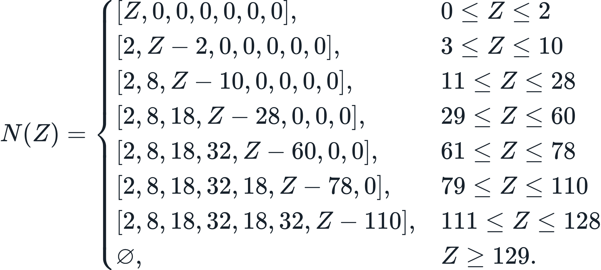
The null  state is representable as an empty shell state, so the integer fill-state count over is 129. It is not an elemental baseline. The native positive-Z elemental shell-admissibility count is therefore 128.
state is representable as an empty shell state, so the integer fill-state count over is 129. It is not an elemental baseline. The native positive-Z elemental shell-admissibility count is therefore 128.
4.11.2 Z001–Z128 blind full-state continuation matrix
The complete positive-Z shell-admissible range is executed as a blind matrix under the same strict fill-before-skip constructor. For every  , the complete shell state is retained and then lifted without reduction into a two-node configuration:
, the complete shell state is retained and then lifted without reduction into a two-node configuration:
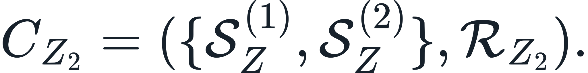
The lift is defined for all 128 rows and does not flatten the two entities into an atomic 2Z state. The complete selector remains
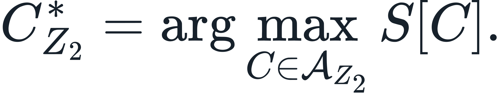
A relational coordinate such as r12, its derivative, or a stationary value is an evaluated property of a complete candidate and is not the molecular state or verdict.
The existing cross-scale interaction/Hamiltonian chain applies unchanged to every row:
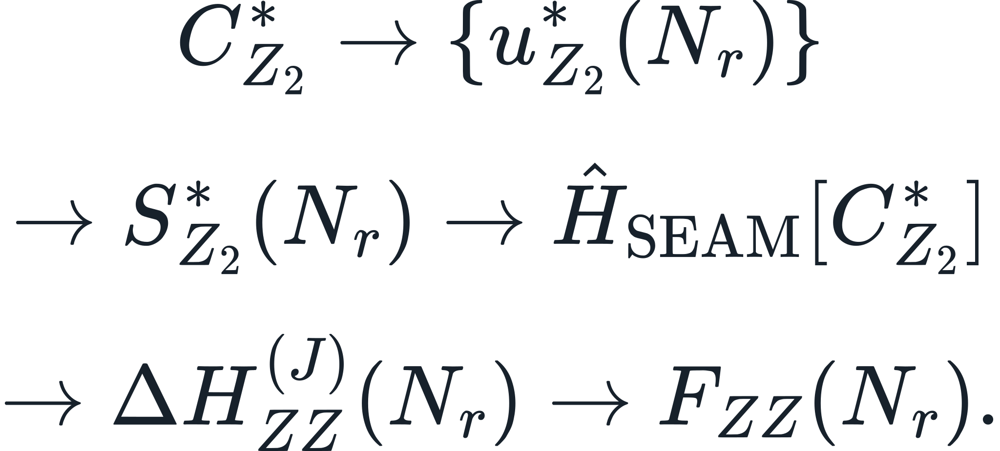
Accordingly, the native selected-state Hamiltonian, pair-Hamiltonian consequence, and force quantity are defined for 128/128 shell-admissible rows. Their conventional numerical correspondence remains governed by the already-defined same-projection Hamiltonian/reference interface.
The executable evidence table is retained in Evidence/Data/Z001_Z128_Blind_Matrix/ and indexed by Evidence 15.
The archive's 118-element records denote current empirical comparison coverage and validation through the presently qualified recognized-element chain. They are not the shell-capacity ceiling. Nuclear containment, isotope stability, synthesis status, and measured mass disposition are downstream tests applied after shell-admissibility.
The architectural forward claim is the ceiling, not the tautological statement that a value already below the ceiling is admissible. Under the fixed constructor, are admissible by definition of the capacity vector. The falsifiable consequence is ; confirmation of an elemental state at or above 129 would falsify this fixed seven-shell shell-admissibility ceiling.
4.12 Shell occupancy state
rho_i,n = N_i,n / c_n
𝓢_i = {rho_i,1,...,rho_i,7}
4.13 Complete relational configuration
𝓡 = {r_ij, chi_ijkl}
C = ({𝓢_i},R)
4.14 Reflection parity
chi_ijkl = sgn
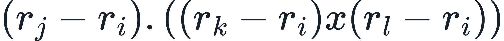
The parity relation is derived from candidate geometry and distinguishes mirror configurations that share the same distance matrix.
4.15 Entropy selection
C* = arg max_{C in A} S
The governing entropy functional is bound to the shell/relational configuration by the explicit decomposition below.
4.15.1 Canonical entropy decomposition
S
= S_config
- lambda_field S_field
- lambda_coupling S_coupling
The three terms carry distinct information. S_config counts admissible shell arrangements. S_field measures the spatial distribution of the normalized structural field on the frozen evaluation domain. S_coupling measures inter-entity shell overlap. Every execution freezes lambda_field and lambda_coupling in its run contract. RUN-H2-BASELINE-UNIFORM-SHELL-01 fixes lambda_field=1.0 and lambda_coupling=0.1. Outside a named contract, coefficient values are undefined.
4.15.2 Configuration entropy
S_config
= k_B sum_i sum_{n=1}^7 ln binom(c_n, N_i,n)
This is the canonical-symbol form of the defined combinatorial entropy. It uses the integer shell count N_i,n; the normalized shell fraction rho_i,n=N_i,n/c_n is not substituted into the binomial coefficient. Count conservation and 0<=N_i,n<=c_n are enforced by admissibility.
4.15.3 Native dimensionless spatial coordinate and shell support
ξ is the native dimensionless spatial coordinate; X_i is the dimensionless center of entity i.
Ω_i,n(C) = { ξ: n-1 <= ||ξ-X_i|| < n }, n=1,...,7
The shell index supplies the native radial count. The spatial realization is uniform structural intensity on the fixed shell support Ω_i,n. No Coulomb orbital, Bohr radius, known bond length, target-derived radial profile, occupancy-dependent support scaling, phase term, or orientation term enters this constructor. Dimensional observation coordinate x is introduced only downstream through the canonical baseline length L_A: x=L_A ξ.
V_n = (4π/3)
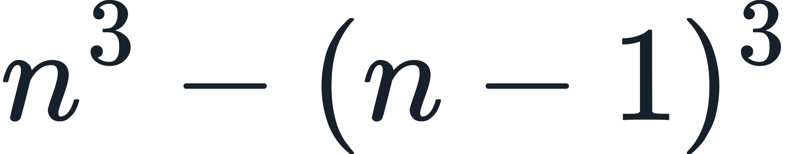
4.15.4 Canonical structural-field constructor
u_i,n(ξ|C) = 1_{Ω_i,n(C)}(ξ) / sqrt(V_n), integral |u_i,n|^2 d^3ξ = 1
F_C(ξ) = sum_i sum_{n=1}^7 sqrt(N_i,n) u_i,n(ξ|C)
This equation is the explicit map C -> F_C. The sqrt(N_i,n) weight makes isolated shell intensity proportional to electron count while each shell basis remains normalized. Phase and orientation are absent from the canonical constructor. A run that uses either variable must declare a different field constructor before execution; otherwise those variables are prohibited inputs.
4.15.5 Canonical field entropy
q_C(ξ) = |F_C(ξ)|^2 / integral |F_C(ξ)|^2 d^3ξ, integral q_C(ξ) d^3ξ = 1
S_field
= -k_B integral q_C(ξ) ln q_C(ξ) d^3ξ
Because ξ is dimensionless, q_C is a normalized density on a dimensionless measure and the logarithm is well-defined. Numerical implementations approximate these integrals by quadrature. The run contract freezes grid, domain truncation, and convergence tolerance. None of those implementation choices defines or modifies the field equation.
4.15.6 Canonical shell-overlap operator
O_ij^{nm}(C) = integral sqrt(|u_i,n(ξ|C)|^2 |u_j,m(ξ|C)|^2) d^3ξ = Vol(Ω_i,n ∩ Ω_j,m) / sqrt(V_n V_m)
0 <= O_ij^{nm} <= 1, O_ij^{nm}=O_ji^{mn}, lim_{N_ij->infinity} O_ij^{nm}=0
The overlap is fully determined by the same native shell supports used by F_C. This is the canonical uniform-shell overlap operator and the controlling formal definition for this specification.
4.15.7 Coupling entropy
S_coupling
= k_B sum_{i<j} sum_{n=1}^7 sum_{m=1}^7 rho_i,n rho_j,m O_ij^{nm}(C)
The i<j restriction excludes self-interaction and pair double-counting. The shell fractions activate only occupied structure. Distance dependence enters through the relational configuration and therefore through O_ij^{nm}(C); no target bond length is inserted into the operator.
4.15.8 Extremum and local stability condition
C* = arg max_{C in A} S
grad_C S
= 0, delta^2 S
< 0 on admissible local variations
For discrete occupation coordinates, the gradient statement is interpreted through admissible neighboring configurations. For continuous relational coordinates such as r_ij, ordinary or numerical derivatives are used. A finite molecular separation is therefore supported only if the complete S
has a genuine interior maximum; a monotonic coupling term by itself is insufficient evidence of a bond minimum/maximum.
A numerical failed run rejects only the tested constructor under that run contract. An analytic monotonicity proof has broader force: it rejects every constructor in the declared family covered by its assumptions. A replacement exists only when a complete alternative constructor is explicitly declared before execution.
4.15.9 Molecular and aggregate selector boundary
C*_aggregate = arg max_{C in A_aggregate} S
Molecular and aggregate construction uses the same unconditioned entropy selector declared in 4.15. A represented evidence value, projected observable, empirical bond length, lattice constant, measured separation, or target condition may restrict a downstream comparison set only after the native result is frozen; it is not an argument of S
and does not define C*.
For an n-node aggregate the admissible family is A_aggregate = { C = ({S_i}, R) : each S_i satisfies the declared shell-count state, R contains only the declared relational objects r_ij and chi_ijkl, and conservation/admissibility constraints are fixed before execution }. Node count, charge state, isotope state, and run-domain limits may be declared as admissibility conditions, but they do not create a second selector.
No aggregate proof may import Gamma_B,ij^ret, retained electric/magnetic correlation, permitted transfer channel, chi_ij mismatch, target-derived radial profile, or a conditioned entropy notation unless that object is explicitly declared in this document or in a named pre-execution noncanonical perturbation contract. If a calculation requires such an undeclared object, the correct terminal state is INDETERMINATE: UNDECLARED_INPUT or SYMBOLIC_ONLY, not an invented substitute.
A finite molecular or aggregate spacing is established by the complete retained-field selector over the declared admissible configuration and requires a genuine interior extremum over the active relational coordinates. The controlling derivative is the derivative of the complete functional,
with  constant only when the node shell counts are fixed. Because
constant only when the node shell counts are fixed. Because  ,
,  , and therefore can depend on relational coordinates through support overlap and normalization, a coupling-only monotonicity argument is not a sufficient or controlling molecular proof. Current closed molecular standings are bound to the complete retained-field selector, not to a truncated coupling-only derivative.
, and therefore can depend on relational coordinates through support overlap and normalization, a coupling-only monotonicity argument is not a sufficient or controlling molecular proof. Current closed molecular standings are bound to the complete retained-field selector, not to a truncated coupling-only derivative.
4.15.10 Cu atomic and aggregate formulation binding
This section binds the copper atomic formulation and the two-node Cu₂ aggregate resolution to the declared Continuum/SEAM molecular architecture. It does not flatten Cu₂ into a single larger atom. The Cu₂ standing is CLOSED as a complete retained selected representation under ; finite spacing is one relational coordinate/property of that selected state. A numerical Cu-Cu spacing value is stated only when the sealed terminal transcript carrying that value is present in the package or its provenance record.
4.15.10.1 Cu atomic state carried forward
The Cu atomic input is:
The strict seven-shell fill gives:
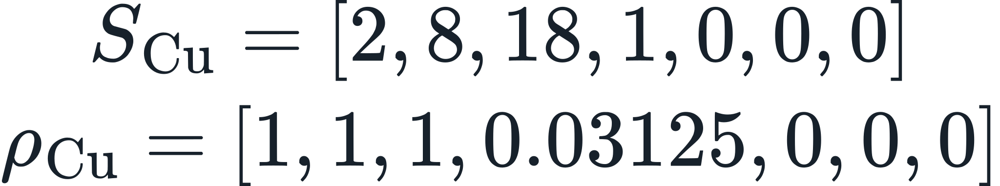
Equivalently, over the occupied shells only:
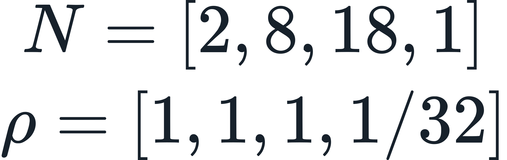
Cu is represented as a filled three-shell core with one boundary-accessible fourth-register occupancy. This is an atomic shell formulation, not a measurement-conditioned chemical fit.
4.15.10.2 Cu₂ is a two-node aggregate, not Z=58
The Cu₂ extrapolation retains two Cu entities:
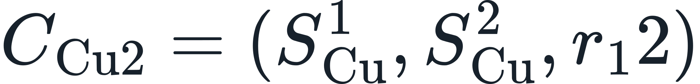
The count is retained across two nodes:
but this is not flattened into a fictitious single atom with . Flattening Cu₂ into a single atomic shell-fill destroys the entity structure and is not the molecular construction.
4.15.10.3 Full Cu₂ field
For each node
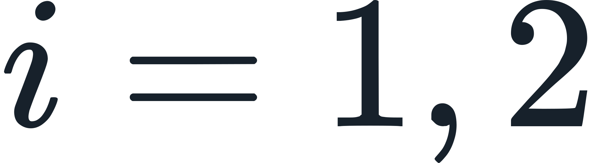
, the occupied-shell field is: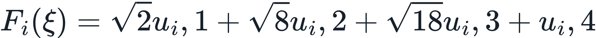
The complete molecular field is:
or explicitly:
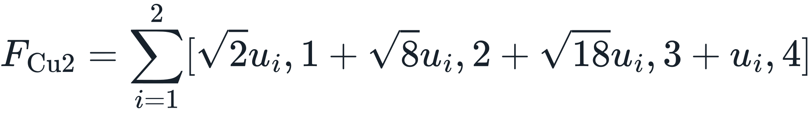
No single-atom field reduction is used. The complete  and normalized
and normalized  remain operative.
remain operative.
4.15.10.4 Cu-Cu overlap structure
The declared overlap operator is:
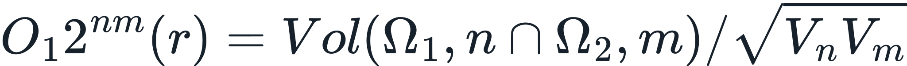
For Cu₂, every occupied shell on Cu node 1 can overlap every occupied shell on Cu node 2:
n,m in {1,2,3,4}
Therefore the active overlap structure is the 4x4 set:
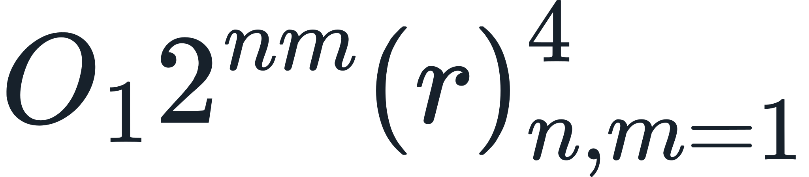
The molecular geometry enters through these overlap terms. This notation is parametric in the declared relational coordinate r; it does not imply that all 16 Cu-Cu overlap functions have been separately solved in closed form.
4.15.10.5 Full field normalization
The retained field normalization is:
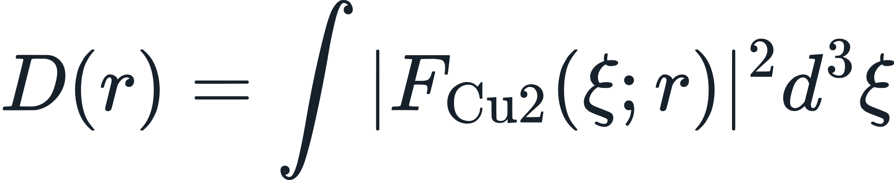
The two isolated Cu self-terms contribute
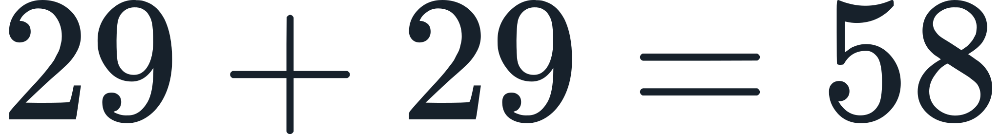
. The cross terms contribute: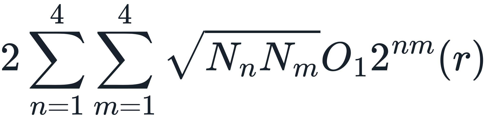
Therefore:
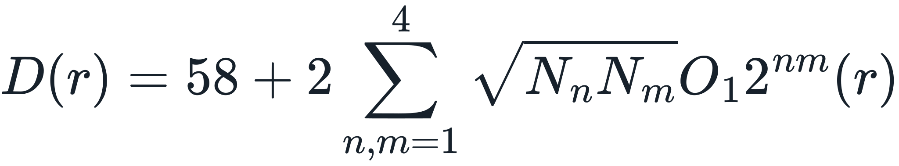
with:
The normalized molecular field density is:
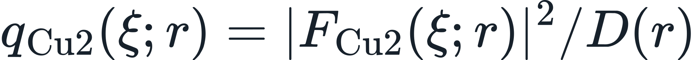
This confirms that the no-reduction field rule carries into the molecular case.
4.15.10.6 Cu₂ field entropy
The field entropy is:
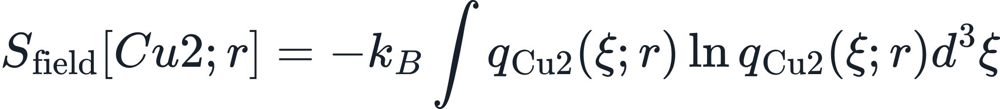
Unlike isolated Cu, the shell supports of the two atoms can overlap. There is no permissible shortcut that treats Cu₂ as twice the atomic scalar entropy. The full combined field must be integrated or otherwise evaluated under the frozen run contract.
4.15.10.7 Configuration entropy
Each Cu node independently contributes:
The two-node shell-state contribution is:
This contribution is independent of Cu-Cu separation because the individual shell counts have not changed.
4.15.10.8 Coupling entropy
The canonical coupling equation is:
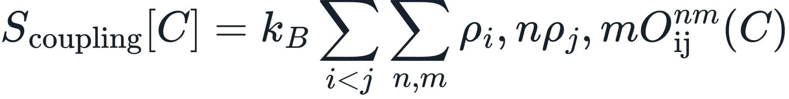
Cu₂ has one node pair, so:
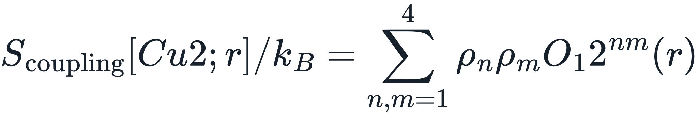
For Cu:
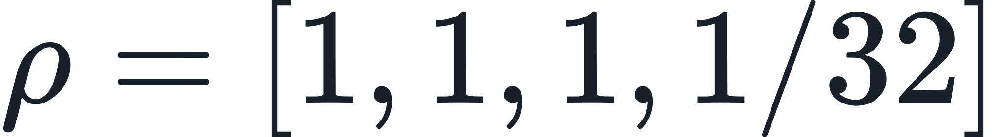
Therefore:
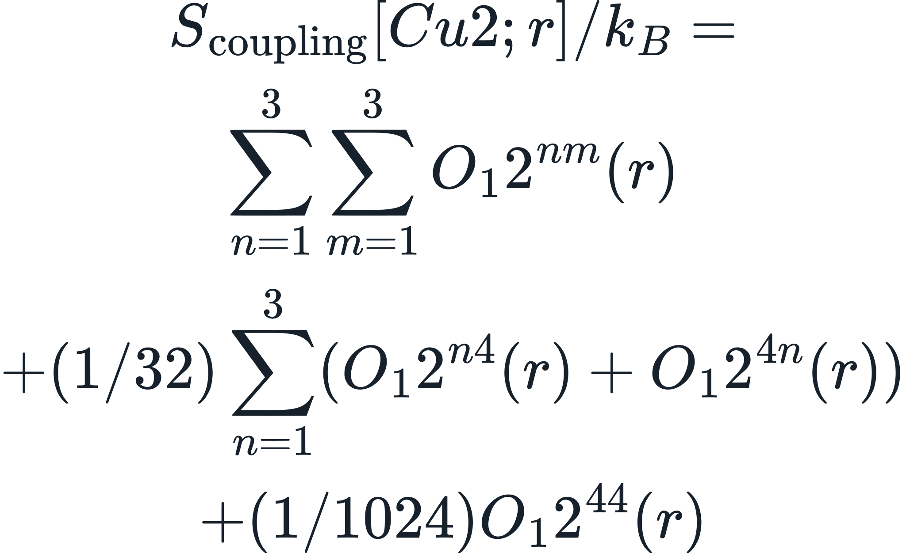
The Cu molecular interaction is constructed from the overlap of two retained Cu structures.
4.15.10.9 Complete molecular selector and no-reduction execution
The Cu₂ candidate is evaluated by the unconditioned functional:
The selected molecular state is the complete admissible configuration:
The selector value  is an evaluated property of
is an evaluated property of C; it is not the molecular state itself. Likewise, a separation coordinate r12, a derivative dS/dr12, a numerical overlap, a projected energy/force, or a mass value may be evaluated from a candidate but may not replace the candidate as the structural verdict.
For Cu₂, the terminal state must retain at minimum:
S_Cu^(1)
S_Cu^(2)
R* = {r12*, ...declared relational coordinates...}
{O_12^{nm}(C*)}_{n,m=1..4}
F_Cu2(xi | C*)
D[C*] = integral |F_Cu2|^2 d^3xi
q_Cu2(xi | C*)
S_config[C*]
S_field[C*]
S_coupling[C*]
S[C*]
M_29 x M_29
Every item remains attached to the selected configuration. No downstream scalarization is permitted to erase the retained node identities, relation graph, field, normalized density, overlap structure, entropy components, or constituent mass-state object.
4.15.10.10 Complete Cu → Cu₂ structural lift
The verified atomic Cu state is:
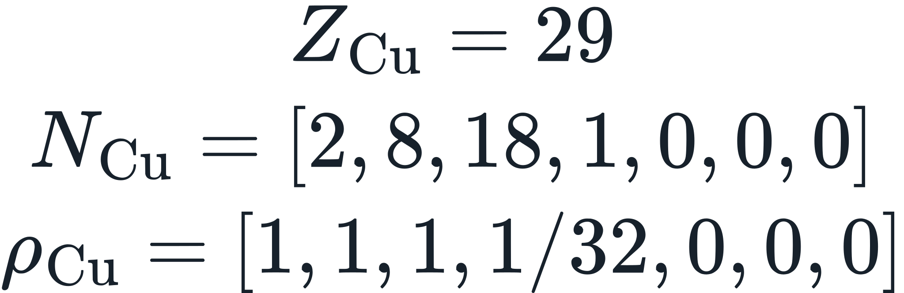
The molecular lift creates two retained Cu entities:
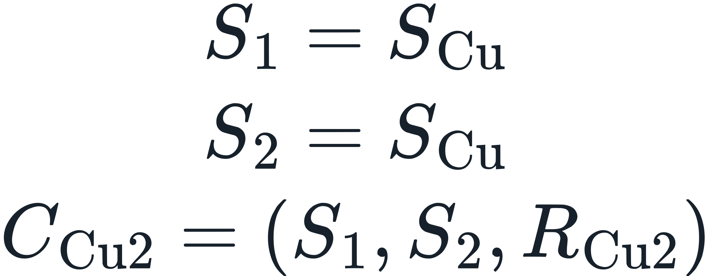
The count is therefore retained as two atomic entities:
29 (+) 29
not collapsed into a fictitious atomic shell state.
The complete field is:
with the active occupied-shell overlap structure:
O_Cu2 = { O_12^{nm}(C) : n,m in {1,2,3,4} }
and normalization:
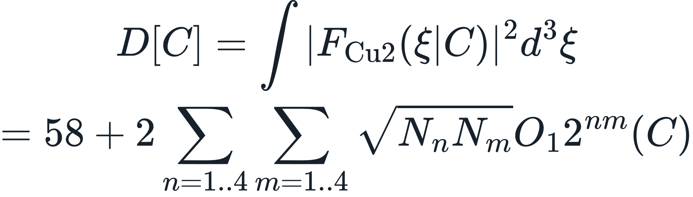
so that:
The molecular field entropy remains the full retained-field observable:
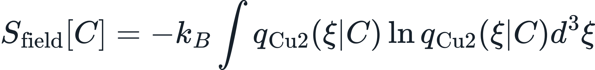
and the coupling entropy remains:
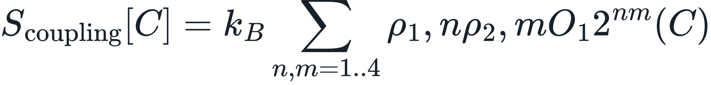
No single-atom analytical evaluation identity, summed atomic entropy, one overlap value, or relation coordinate may replace this complete construction.
4.15.10.11 Relational-coordinate evaluation inside the complete state
A finite separation may be one coordinate of the selected relational state:
r12* in R*
For a two-node coordinate scan, the complete derivative is:
dS[C]/dr12 = lambda_field dS_field[C]/dr12
+ lambda_coupling dS_coupling[C]/dr12
A stationary-point evaluation may therefore report:
with the appropriate local curvature condition when the declared run contract requires it. These are properties of the complete selected configuration. They do not redefine the terminal object as r*,  , or a one-dimensional scalar trajectory.
, or a one-dimensional scalar trajectory.
The current standing is:
Cu atomic state: CLOSED
Cu -> Cu2 full structural lift: CLOSED
Cu2 complete retained two-node configuration: CLOSED
Cu2 finite-spacing resolution: CLOSED as a relational coordinate/property of C_Cu2*
The complete retained-field dependence is controlling. A coupling-only monotonicity shortcut is not a canonical proof, and a scalar arg max_r S(r) is not a canonical replacement for .
4.15.10.12 Interaction continuation without state loss
The complete selected configuration is carried downstream:
Notation lock. The arrows in this expression are not all producer/consumer runtime handoffs. is the Hamiltonian facet/evaluation of the already-selected retained configuration  ; the function-call form does not declare a separate resolver or scalar-producing runtime. The same no-reduction rule governs the downstream pair consequence: , , and are retained facets of one resolved consequence, not three inputs awaiting independent population. A new executable dependency exists only when an explicit phase contract declares a new consumes / operation / produces boundary.
; the function-call form does not declare a separate resolver or scalar-producing runtime. The same no-reduction rule governs the downstream pair consequence: , , and are retained facets of one resolved consequence, not three inputs awaiting independent population. A new executable dependency exists only when an explicit phase contract declares a new consumes / operation / produces boundary.
This chain produces projections/evaluations from  ; it does not discard
; it does not discard  . Atomic and molecular interaction remain manifestations of the same governing structural interaction architecture. Equality of architecture does not imply equality of numerical magnitude.
. Atomic and molecular interaction remain manifestations of the same governing structural interaction architecture. Equality of architecture does not imply equality of numerical magnitude.
Measured Cu-Cu spacing, lattice parameters, bond-energy values, or other comparator evidence may be introduced only after the native selected state is frozen. They may adjudicate/project the result but may not define any component of  .
.
4.15.10.13 Mass continuation as retained structured state
Each Cu node retains its own neutron-conditioned mass state. The molecular constituent mass object is therefore:
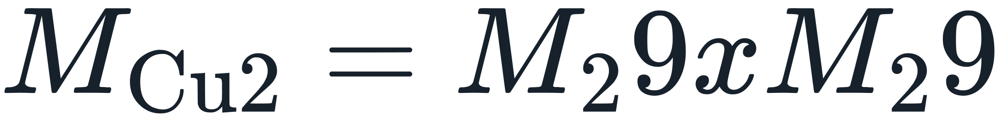
For a selected isotope pair:
(m_1,m_2) in M_29 x M_29
This set-valued constituent object remains attached to the complete Cu₂ representation. It is not replaced by an element-average mass.
The archive does not define a canonical scalar bound-state molecular mass operator of the form:
Therefore:
constituent nuclide mass state: DEFINED AND RETAINED
Cu2 scalar bound-state mass: NOT CANONICALLY DEFINED
That downstream operator boundary does not invalidate the complete molecular structural closure.
4.15.10.14 Full retained terminal representation
The canonical Cu₂ terminal object is the complete selected representation:
C_Cu2* = {
atomic_node_1: S_Cu^(1),
atomic_node_2: S_Cu^(2),
relations: R*,
overlaps: {O_12^{nm}(C*)},
field: F_Cu2(xi | C*),
normalization: D[C*],
normalized_density: q_Cu2(xi | C*),
configuration_entropy: S_config[C*],
field_entropy: S_field[C*],
coupling_entropy: S_coupling[C*],
selector_value: S[C*],
constituent_mass_state: M_29 x M_29
}
A sealed execution may additionally carry numerical values for coordinates or downstream projections, but those values remain members/properties of this retained object rather than replacements for it.
4.15.10.15 Final Cu → Cu₂ ruling
The complete process is therefore:
Cu Z=29 atomic baseline
-> [2,8,18,1,0,0,0]
-> retained atomic field/state
-> instantiate two retained Cu nodes
-> declare complete relation set R
-> construct all occupied-shell overlaps O_12^{nm}(C)
-> construct combined F_Cu2(xi | C)
-> retain D[C] and q_Cu2(xi | C)
-> evaluate S_config[C], S_field[C], S_coupling[C]
-> select C_Cu2* = arg max_{C in A_Cu2} S[C]
-> retain the entire selected configuration
-> evaluate relational coordinates / interaction / evidence projections downstream
-> retain M_29 x M_29 as the constituent mass-state object
The formulation and finite-spacing resolution are closed as one complete retained-state molecular result. The structural verdict is the total selected representation, not any one scalar generated from it. Numerical terminal values, when required for reproduction, remain bound to their sealed execution/provenance record rather than reconstructed from comparator data.
4.15.11 Incompatible-case full-representation molecular lift: Cu, W, and Au
The designated incompatible-case evidence set is Cu, W (tungsten), and Au. The purpose of this set is to verify that atomic→molecular continuation does not depend on reducing materially different atomic structures to one scalar surrogate. The full representation rule applies identically to every case.
Canonical shell states:
Cu Z=29 N=[2,8,18,1,0,0,0] occupied shells={1,2,3,4}
W Z=74 N=[2,8,18,32,14,0,0] occupied shells={1,2,3,4,5}
Au Z=79 N=[2,8,18,32,18,1,0] occupied shells={1,2,3,4,5,6}
For a same-element two-node molecular candidate X2, where
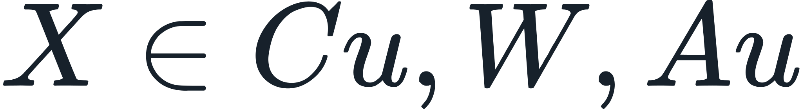
, the complete configuration is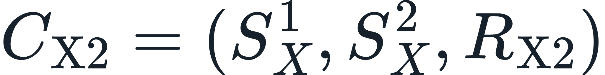
and the complete retained field is
The occupied-shell overlap set is retained componentwise:
O_X2 = { O_12^(nm)(C) : n,m are occupied shells of X }.
Therefore the three cases carry distinct complete relation structures:
Cu2: 4 x 4 = 16 occupied-shell overlap components
W2 : 5 x 5 = 25 occupied-shell overlap components
Au2: 6 x 6 = 36 occupied-shell overlap components
No case is converted to a common overlap scalar, outer-shell index, electron-total surrogate, bond coordinate, or entropy-only state for structural adjudication. The selector remains
with  evaluated from the complete retained candidate. A coordinate
evaluated from the complete retained candidate. A coordinate
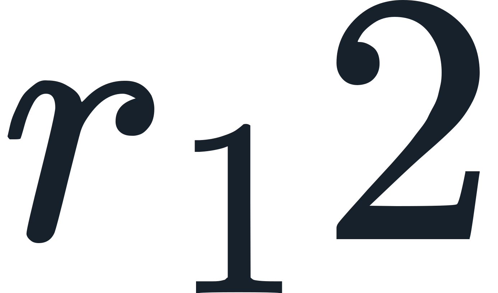
, a stationary-point condition, , a projected force/energy, or any other scalar is a property of and may not substitute for it.The terminal retained object for every case includes at minimum:
{
S_X^(1), S_X^(2),
R_X2*,
{O_12^(nm)(C*)},
F_X2(xi | C*),
D[C*],
q_X2(xi | C*),
S_config[C*],
S_field[C*],
S_coupling[C*],
S[C*],
M_Z x M_Z
}.
Current standing of the designated incompatible-case set:
Cu atomic -> molecular full structural lift: CLOSED
W atomic -> molecular full structural lift: CLOSED
Au atomic -> molecular full structural lift: CLOSED
Cu2 complete retained two-node representation: CLOSED
W2 complete retained two-node representation: CLOSED
Au2 complete retained two-node representation: CLOSED
No-reduction compliance: PASS for all three cases
The evidence records are:
Evidence/Provenance/CU_TO_CU2_FULL_REPRESENTATION_TRANSCRIPT.md
Evidence/Provenance/W_TO_W2_FULL_REPRESENTATION_TRANSCRIPT.md
Evidence/Provenance/AU_TO_AU2_FULL_REPRESENTATION_TRANSCRIPT.md
This three-case set demonstrates atomic→molecular structural continuation across distinct occupied-shell topologies without changing the governing representation law and without reducing the state.
4.16 Time metrology
T(X) = n_Cs(X) / 9,192,631,770
Physical time is resolved by the Cs-133 transition count. Software wall-clock runtime is metadata, not the physical primitive.
4.16.1 Canonical atomic metrology
The atomic metrology primitive tuple is {λ_A, N_A, ν_A, M_A}. These quantities are frozen before a downstream structural or molecular result consumes the baseline.
L_A = N_A λ_A
τ_A = M_A / ν_A
V_A = L_A / τ_A = (N_A λ_A)/(M_A/ν_A)
The baseline length L_A, baseline interval τ_A, and transfer constant V_A are therefore generated at the atomic metrology layer. They are upstream inputs to later spatial construction; C* does not regenerate L_A.
For any physical application, the atomic interval must remain consistent with the canonical Cs-133 time resolver. The exact-arithmetic closure fixture in Appendix N verifies the internal metrology identities and dependency direction; it does not replace or recalibrate the Cs-133 physical time primitive.
4.16.2 Frequency metrology
f = N_T / T; for one-cycle interval, f = 1/τ
Frequency is derived from the count-resolved time relation. It is not an independent primitive.
4.16.3 Empirical observation adapter — validation only
The following normalized-observable constructor is an empirical validation adapter. Its inputs are observational coordinates supplied by a validation run. It is not part of the first-principles atomic generator and it has no authority to construct C*, L_A, N_r, or any native spatial state.
Q_raw^(obs) = I_norm - W_norm; Q_shell^(obs) = max(|Q_raw^(obs)|, 10^-10)
χ_e^(obs) = P_norm + W_norm
Ξ_raw^(obs) = I_norm - Π_norm; Ξ_F^(obs) = max(Ξ_raw^(obs), 10^-10)
a = 0.5; b = 1.0; q = 1.0
Θ_obs =
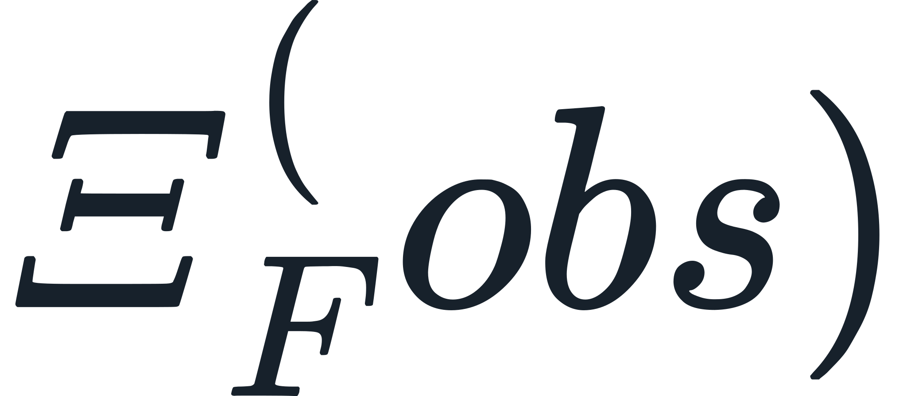
^a exp(-b χ_e^(obs))
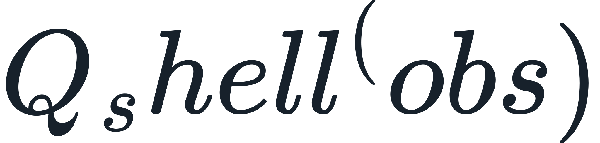
^q
4.16.4 Universal native-distance projection
Every native spatial-distance count N_D is already a resolved SEAM distance at the native count layer. The canonical atomic baseline projects that count through the universal quantity-class rule:
L = N_D L_A
For the H₂ center-separation coordinate N_r=||X_B-X_A||:
L_H2 = N_r L_A = N_r N_A λ_A
Native count closure, atomic baseline construction, empirical validation, and conventional-unit reporting remain distinct layers. No empirical observable or dimensional H₂ comparator is permitted to define λ_A, N_A, ν_A, M_A, L_A, τ_A, V_A, N_r, or C*.
4.16.5 Executed atomic-metrology closure test
RUN-SEAM-NATIVE-ATOMIC-METROLOGY-CLOSURE-01 is recorded in Appendix N. The hash-locked exact-arithmetic run terminated PASS: NATIVE_ATOMIC_METROLOGY_CHAIN_NUMERICALLY_CLOSED. The test demonstrates executable closure and dependency direction; it does not calibrate the empirical physical magnitude of L_A.
4.17 Essential notation bridge
The following symbols are the minimum vocabulary needed for the mathematical ledger that follows. The full normative glossary remains in Appendix J.
| Symbol | Meaning | First dependency |
|---|---|---|
| Z(n) | baseline electron count | primitive atomic start |
| c_shell | seven-shell capacity vector | fixed structural bound |
| c_n | capacity of shell n | component of c_shell |
| N_i,n | occupancy of shell n for entity i | derived from Z(n) distribution |
| ρ_i,n | normalized shell occupancy N_i,n/c_n | derived |
| 𝓢_i | seven-shell entity state | {ρ_i,1,…,ρ_i,7} |
| 𝓡 | complete relational state | {r_ij,χ_ijkl} |
| C | complete physical configuration | ({𝓢_i},𝓡) |
| 𝓐 | admissible configuration set | declared structural constraints |
| S |
| governing ESAM entropy functional | explicit three-term functional on C∈𝓐; binding in §4.15 |
| C* | selected configuration | arg max_{C∈𝓐} S
|
| Ĥ_SEAM
| Hamiltonian operator description of selected state | downstream of C* | | Coh_struct | internal structural/continuity coherence | pre-Manifold | | Coh_M | Manifold coherence | post-comparison | | Δ_M | Manifold residual | 1−Coh_M | | T(X) | physical time resolver | n_Cs(X)/9,192,631,770 |
Chapter 5
Core claim ledger
Each claim states its scope, definitions, calculation, end result, and falsification condition. The statements below are the canonical claims of this specification.
5.1.1 Claim
SEAM is structure-first, not label-first. A readable label is downstream of a represented structure and its admissible transformations.
5.1.2 Definitions
X = input entity or question
S(X) = represented structural state
C = complete configuration where the problem requires relational geometry
Phi = projection operator
5.1.3 Calculation
Observation or a declared structural primitive is converted into a represented state before classification.
For atomic/composite questions the represented state is completed as C=({𝓢_i},𝓡), then the admissible configuration is selected before projection.
represented structure -> admissible configuration -> projection -> comparison
5.1.4 End result
A result is supported because its represented structure survives the applicable operators and gates, not because its name resembles a known category.
5.1.5 Falsification condition
This claim fails if a valid answer can be produced by bypassing structural representation and selecting a label directly.
5.2.1 Claim
ESIH, ESAM, and SEAM are stages of formalization, not separate theories competing for the same role.
5.2.2 Definitions
PRIN = ESIH principles / axiomatic-constraint layer
MATH = ESAM mathematical-formulation layer
ENG = SEAM executable mathematical-engine layer
5.2.3 Calculation
PRIN(X_atom) -> Z(n) and the structural interaction constraints
MATH(HYP) -> {c_shell, c_n, N_i,n, rho_i,n, 𝓢_i, 𝓡, C, S
}
ENG(MATH,X) -> primitive result
SEAM = Engine
5.2.4 End result
5.2.5 Falsification condition
This claim fails if the SEAM engine cannot execute the ESAM mathematical-formulation layer or if a layer contradicts rather than generalizes the layer.
5.3.1 Claim
The atomic start is count-based from first principles. The canonical baseline is Z(n), the number of electrons to be distributed.
5.3.2 Definitions
Z(n) = baseline electron count
c_n = scalar capacity of shell n
N_n = electron occupancy assigned to shell n
rho_n = N_n/c_n
5.3.3 Calculation
c_shell =
sum_n N_n = Z(n)
0 <= N_n <= c_n
Fill proceeds from lower shell index outward under the established fill/skip protocol. The shell state is obtained by calculation rather than by assigning a conventional element label first.
| Example | Z(n) | First shell state | Next occupied shell | Structural reading |
|---|---|---|---|---|
| H | 1 | 1/2 | — | partial first-shell occupancy |
| He | 2 | 2/2 | — | first-shell closure |
| Li | 3 | 2/2 | 1/8 | closed first shell plus partial outer shell |
| Ne-like count |
| 10 | 2/2 | 8/8 | two-shell closure under the seven-shell capacity rule |
5.3.4 End result
The starting state is a conserved count distributed into a bounded seven-shell architecture. Proton, neutron, charge, isotope, and other state information can modify or extend the state downstream but do not replace Z(n) as the baseline distribution statement.
5.3.5 Falsification condition
The claim fails if the fill/skip constructor changes the total count, overfills a shell, or requires the target element label to determine the output.
5.4.1 Claim
Closure is not an if-statement. A closed configuration is selected by a structural extremum over the admissible candidate set.
5.4.2 Definitions
A = admissible configuration set
S
= canonical ESAM entropy functional on configuration C, explicitly bound in §4.15
C* = selected configuration
5.4.3 Calculation
C* = arg max_{C in A} S
Shell capacity, count conservation, relation completeness, and applicable symmetry constraints define admissibility. The selected state is not generated by an if element==... branch.
The entropy functional is explicitly defined in §4.15. A runtime terminates SYMBOLIC_ONLY when every required symbolic object exists but a declared runtime artifact needed for numerical evaluation is absent. A runtime terminates INDETERMINATE: UNDECLARED_INPUT when a required mathematical object, transform, or contract field is not declared.
5.4.4 End result
Closure is calculated from the same configuration-selection principle used across atomic, molecular, and amalgamum problems.
5.4.5 Falsification condition
This claim fails if the runtime bypasses the admissible candidate calculation and assigns closure from a hard-coded element, molecule, or category name.
5.5.1 Claim
No single reduced scalar is the whole structural verdict. Shell closure, relational geometry, and configuration entropy remain distinct information carriers.
5.5.2 Definitions
𝓢_i = seven-shell state
𝓡 = complete relational state
C = ({𝓢_i},R)
S
= entropy over the complete candidate configuration
5.5.3 Calculation
C = ({𝓢_i},𝓡), 𝓡 = {r_ij,chi_ijkl}
Two candidates can have the same shell totals but different relations; two geometric candidates can share all pairwise distances yet differ by reflection parity. Therefore a scalar balance coordinate cannot replace the complete configuration.
5.5.4 End result
The structural verdict is attached to the complete admissible configuration and its downstream projection, not to one balance coordinate.
5.5.5 Falsification condition
This claim fails if all distinctions relevant to the tested problem are provably recoverable from the proposed single scalar without loss.
5.6.1 Claim
The local structural calculation path is complete at the representation level: count distribution creates shell states, relations complete the configuration, and entropy orders admissible candidates.
5.6.2 Definitions
Z(n) = baseline count
𝓢_i = shell state
r_ij = pairwise separation
chi_ijkl = parity relation
C = complete configuration
5.6.3 Calculation
Z(n) -> {N_i,n} -> {rho_i,n} -> 𝓢_i
{𝓢_i} + {r_ij,chi_ijkl} -> C
C* = arg max_C S
| Case | Shell occupancy summary | Relation requirement | Selection |
|---|---|---|---|
| single closed shell | rho_1=1 | none beyond self-state | candidate evaluated directly |
| single partial shell | 0<rho_1<1 | none beyond self-state | partial structural state retained |
| two entities | {S_A,S_B} | r_AB | joint candidate entropy evaluated |
| three+ entities | {𝓢_i} | all r_ij | complete pairwise geometry evaluated |
| chiral geometry | {𝓢_i} | r_ij + chi_ijkl | reflection-sensitive candidate evaluated |
5.6.4 End result
The same construction can separate candidate structures without changing the procedure case by case.
5.6.5 Falsification condition
The claim fails if a required geometric distinction cannot be represented by 𝓡 or if a retained candidate violates count/capacity constraints.
5.7.1 Claim
Transfer closure extends structural closure without creating a separate force law. A selected structural state can be followed through ordered transfer, projection, or interaction stages.
5.7.2 Definitions
C_j = configuration at stage j
𝓣 = transfer/transition operator
S
= governing entropy measure
5.7.3 Calculation
C_j --𝓣--> C_{j+1}
accepted structural transition preserves declared invariants and evidence record
Where physical time is involved, the interval is expressed through the Cs-133 transition-count resolver rather than an independent canonical time primitive.
5.7.4 End result
Structural closure and transfer accounting remain distinct but composable operations. A transfer path cannot erase the structural state from which it originated.
5.7.5 Falsification condition
The claim fails if transfer output cannot be traced to its input state or if a time-dependent calculation uses an unbound time primitive.
5.8.1 Claim
Coherence is a retained value, not a named state. It quantifies an engine-defined relation between represented structures or projections.
5.8.2 Definitions
v_X = candidate projection
v_M = Manifold reference projection
Coh = normalized alignment or engine-defined coherence
5.8.3 Calculation
Coh_M(X,M) = dot(v_X,v_M)/(||v_X|| ||v_M||)
Δ_M = 1 - Coh_M
Other engine-defined structured comparison rules replace the scalar instantiation only when the active ARCV contract explicitly declares them.
5.8.4 End result
Coherence remains downstream of structural construction and does not replace configuration entropy.
5.8.5 Falsification condition
The claim fails if coherence is assigned as a categorical confidence label rather than calculated from represented structure.
5.9.1 Claim
The Continuum is not the Manifold.
5.9.2 Definitions
K_t = retained Continuum state at cycle t
M_t = normalized Manifold derived from retained state
5.9.3 Calculation
K_t -> normalization/projection -> M_t
Continuum retention preserves source/reference structure. Manifold construction produces the comparison surface used by the active query.
5.9.4 End result
A single retained structure can support multiple admissible projections without becoming multiple underlying entities.
5.9.5 Falsification condition
The claim fails if Continuum and Manifold are treated as interchangeable artifacts with no transformation or role distinction.
5.10.1 Claim
The engine process is not the classification surface.
5.10.2 Definitions
Engine = structural calculation process
Classification = downstream organizational description
5.10.3 Calculation
question -> engine -> primitive result -> optional classification
The 48-sector / five-regime surfaces organize outputs only as classification surfaces; they do not define the engine call sequence or atomic mathematics.
5.10.4 End result
A classification describes where a resolved result lands. It does not substitute for the structural calculation.
5.10.5 Falsification condition
The claim fails if the category label alone determines the primitive answer without engine evaluation.
5.11.1 Claim
The 48-sector / 5-regime model is classification, not proof by itself.
5.11.2 Definitions
sector = classification channel
regime = operating/projection regime
projection = represented facet
5.11.3 Calculation
48 sectors * emitted fields -> classification surface
Regime placement constrains an admissible projection only when the active contract declares that constraint. Closure still requires the active structural and validation gates.
5.11.4 End result
Classification coverage is not equivalent to empirical validation or mathematical closure.
5.11.5 Falsification condition
The claim fails if sector/regime placement is treated as sufficient proof of a physical result.
5.12.1 Claim
Manifold coherence can be calculated as normalized alignment when the active representation supports that metric.
5.12.2 Definitions
v_X = Phi(C*)
v_M = active reference vector
5.12.3 Calculation
Coh_M(X,M) = dot(v_X,v_M)/(||v_X|| ||v_M||)
Δ_M = 1 - Coh_M
5.12.4 End result
The normalized-alignment form is a valid reference instantiation, not a declaration that every production manifold is globally Euclidean.
5.12.5 Falsification condition
The claim fails if zero norms, incompatible coordinates, or post-hoc reference construction are ignored.
5.13.1 Claim
Closure can be represented as a composed operator.
5.13.2 Definitions
Operator-level distinction: CC computes internal structural/continuity coherence Coh_struct. MC then compares the retained projection with the Manifold and produces Coh_M and Δ_L. Therefore the established order CC -> MC does not imply that Manifold coherence is known before Manifold comparison.
ℜ = representation constructor
SC = structural/configuration closure
TC = transfer closure
CC = structural/continuity coherence operator producing Coh_struct
MC = Manifold comparison operator producing Coh_M and Δ_M
VC = validation closure
5.13.3 Calculation
Closure_SEAM(X) = VC(MC(CC(TC(SC(ℜ(X))))))
Within the canonical atomic path, ℜ constructs the represented shell/configuration state and SC contains the entropy-selection step where applicable.
SC_atomic: Z(n) -> 𝓢_i -> C -> C*
5.13.4 End result
The composed operator remains compatible with the canonical engine architecture while exposing the canonical structural mathematics at the front of the chain.
5.13.5 Falsification condition
The claim fails if a downstream stage requires information that the preceding stage neither contains nor can derive under the declared contract.
5.14.1 Claim
Answer formation is downstream of primitive structure.
5.14.2 Definitions
P = primitive result
A = readable answer
Resolver = P -> A mapping
5.14.3 Calculation
structural execution -> P -> Resolver(P) -> A
The resolver is not permitted to substitute a plausible answer when the structural execution refuses or remains indeterminate.
5.14.4 End result
A readable answer inherits support from the primitive result.
5.14.5 Falsification condition
The claim fails if a natural-language response can be accepted when its primitive support is absent or contradictory.
5.15.1 Claim
Validation is mathematical gatekeeping, not agreement with a narrative.
5.15.2 Definitions
native result = output frozen before comparator
evidence = external observation
comparison = post-result projection/test
5.15.3 Calculation
first principles -> native result -> hash/freeze -> evidence reveal -> comparison
External evidence has four legitimate roles: corroboration, falsification, comparison, and projection testing. It does not define the native operator.
5.15.4 End result
A mismatch is retained as information about the SEAM structure rather than repaired by post-hoc fitting.
5.15.5 Falsification condition
The claim fails if a coefficient or operator is changed after held-out evidence reveal and the modified result is presented as a blind prediction.
Chapter 6
Start-to-finish calculation path
6.1 Input to observation
A raw candidate or question is normalized into observation-bound observations or a declared structural primitive.
X -> O(X)
6.2 Observation to structure
Observations become represented components and relations. Atomic work begins from Z(n) and the seven-shell constructor.
Z(n) -> 𝓢_i
6.3 Structure to projection
Where the question requires a complete candidate configuration, structure is completed and entropy-selected before projection.
𝓢_i -> C -> C* -> Phi(C*)
6.4 Projection, structural coherence, and Manifold comparison
The selected projection first retains its internal structural/continuity coherence Coh_struct. The Manifold comparison operator MC then evaluates that projection against the active reference and produces Coh_M and Δ_L.
Phi(C*) -> Coh_struct -> MC(M_t) -> Coh_M -> Δ_M
6.5 Atomic local structural path, when atomic variables are available
The canonical atomic starting path is count distribution, shell state, relation completion, and entropy selection. The p,n,e scalar framing is not the canonical starting state.
Z(n) -> {N_n} -> {rho_n} -> 𝓢_i -> C -> C*
6.6 Continuum update path
Validated retained structure updates the Continuum when the retention gate succeeds. A failed or comparator-only item does not silently become active reference structure.
K_{t+1}=Retain(K_t, validated output)
6.7 Primitive to answer
The primitive result is passed to the resolver only after validation and support gates succeed.
P_X -> Resolver -> A_X
6.8 Time-dependent calculation path
physical interval X -> n_Cs(X) -> T(X)=n_Cs(X)/9,192,631,770
Any rate, frequency, propagation, trajectory, force, energy, or Hamiltonian operation that requires physical time must expose this metrological dependency or explicitly declare a dimensionless order parameter instead.
Chapter 7
Calculation boundaries by layer
| Layer | Receives | Produces | Prohibited action |
|---|---|---|---|
| ESIH | question / baseline structural condition | first-principle constraint set / Z(n) baseline | import an accepted explanation as a primitive |
| ESAM | Z(n), admissible relational data | 𝓢_i, C, S |
, selected C* | fit the native law to held-out evidence | | SEAM engine | formal structural math + question/reference artifacts | primitive result, closure/coherence trace | replace engine math in a runner | | Continuum | validated retained structures | persistent reference state | act as a hidden answer key | | Manifold | Continuum-derived normalized representation | query-comparison structure | replace retained Continuum canonical equation | | Resolver | primitive result | readable answer | invent unsupported primitive content | | External evidence | observation/comparator admitted by contract | corroboration/falsification/comparison | define native SEAM mathematics |
Chapter 8
Canonical answer to "what is SEAM?"
SEAM is the operational layer of a structure-first mathematical framework. Its atomic implementation begins from a count baseline, constructs a bounded seven-shell state, forms complete configurations from structural and relational information, selects admissible configurations under an entropy extremum, projects retained structure into question-relevant facets, and compares those facets against a normalized Manifold derived from the retained Continuum.
Z(n) -> 𝓢_i -> C -> C* -> Φ_f(C*) -> Coh_struct -> Manifold comparison -> Coh_M/Δ_M -> primitive result
SEAM is not defined by a classification label, a conventional force law, or a statistical confidence score. It is defined by the ordered structural calculation and its source/validation contracts.
Chapter 9
Canonical answer to "how does SEAM work?"
The complete operational answer is an ordered process:
1. Accept one question and identify the structural primitive required by the active operator.
2. Construct the atomic or retained structural state without target-answer leakage.
3. Generate the admissible candidate configuration family.
4. Apply the governing entropy-selection rule to obtain C* where configuration selection is required.
5. Project the retained structure into the query-relevant facet.
6. Query or compare against the active Manifold through the engine.
7. Calculate internal structural coherence Coh_struct, Manifold coherence Coh_M, Manifold residual Δ_M, operational/query closure 𝓒_Q, and validation support under the active contract.
8. Freeze and hash the native result before external comparator reveal in blind tests.
9. Allow the resolver to express the primitive result in readable form.
question -> structural primitive -> C -> C* -> Φ_f(C*) -> Coh_struct -> Manifold comparison -> Coh_M/Δ_M -> 𝓒_Q/validation -> primitive -> answer
Physical time, when required anywhere in this path, is resolved through the Cs-133 count relation.
Chapter 10
Final skeptical summary
The strongest skeptical reading of SEAM is not answered by adding more labels. It is answered by specifying what enters the calculation, what is derived, what is retained, what the engine actually executes, what evidence is withheld until after prediction, and what would falsify each claim.
-
Z(n) fixes the atomic baseline rather than assuming the full atomic state.
-
The seven-shell capacity vector fixes the discrete occupancy bounds.
-
C=({𝓢_i},𝓡) fixes the configuration representation, including pairwise geometry and chirality parity.
-
C*=arg max_C S
fixes the configuration-selection principle across scales.
-
Cs-133 count metrology fixes physical time without circularly assuming a second.
-
Continuum and Manifold remain distinct retained-reference and normalized-comparison objects.
-
Engine closure remains an executable composition rather than a narrative conclusion.
-
External evidence is downstream of the native calculation.
The technical burden is therefore explicit: every claimed native result must be reproducible from these definitions and the declared engine/runtime artifacts. Where a external operator survives only as evidence record, it must be identified as such rather than silently promoted.
Part II
Engine Formalization
Chapter 11
Structural input and query formation
The runner supplies an untouched question and the active structural/reference artifacts. It does not decide the answer. The engine determines which structural primitive and functions are applicable under the active contract.
Q -> question representation
atomic Q -> Z(n) baseline when atomic construction is required
The canonical atomic constructor returns the shell state under the fixed capacity vector. Downstream state modifiers such as charge, isotope, or explicitly represented environmental state are applied as declared transformations, not used to redefine the starting count.
| Input field | Role |
|---|---|
| question text / question.arcv | untouched query surface |
| UID | run identity |
| requested projection | declares output facet, not answer |
| Z(n) or retained primitive | structural starting quantity |
| active manifold/reference hash | comparison evidence record |
| metrology baseline | required only when a physical time quantity is used |
One question per run remains the canonical transcript rule because it keeps the question-to-primitive model composition inspectable.
Chapter 12
Q-ARC, A-ARC, and ARCV
ARCV remains the finite projection representation used by the engine. Q-ARC is the represented query. A-ARC is the candidate/reference representation. The atomic shell/configuration object is upstream of, or embedded into, the ARCV projection contract; ARCV does not redefine the physical ontology.
Q_arc = ARCV(question structure)
A_arc = ARCV(candidate/reference structure)
A complete ARCV carries exactly the magnitude, ordered components, normalized vector structure, relations, regime, admissible-deviation bounds, and intent fields declared by the active runtime schema. A local Euclidean example does not establish a globally Euclidean 51x5->64 production geometry.
Chapter 13
Projection cardinality and structure semantics
Projection cardinality describes how many facets an engine representation emits; it does not define the underlying physical object. The complete configuration C can support several projections without being flattened into any one of them.
Phi_f: C* -> v_f
If a 51-arc by 5-regime architecture yields a 64-component projection in a given runtime, that cardinality is an engine representation contract. It is not a claim that the physical configuration has exactly 64 independent degrees of freedom.
| Object | Meaning |
|---|---|
| C* | selected structural configuration |
| Phi_f(C*) | question/regime-specific facet |
| ARCV | finite engine representation of required facets/constraints |
| Manifold projection | normalized comparison representation |
Chapter 14
Direct interaction
The engine compares represented structures directly. It does not assign an arbitrary external baseline score to a candidate. For Q-ARC and candidate A-ARC, the interaction record contains only the magnitude, component, vector, relation, regime, and intent deviations declared by the active implementation contract.
The structured discrepancy record is aggregated only by a declared query-contract normalization operator. Define D_Q(Q,Y)=𝓝_Q(Δ_ARCV(Q,Y)), where 𝓝_Q is fixed by the active Q-ARC/ARCV admissibility contract rather than fitted to the expected answer.
Δ_ARCV(Q,Y_j) = (Δ_m, Δ_c, Δ_v, Δ_𝓡, Δ_regime, Δ_intent)
A scalar ordering is derived only when the engine contract explicitly defines component normalization, masking, gating, and aggregation. The underlying comparison remains between represented structures.
14.1 Configuration-level direct interaction
Where the question is a physical configuration problem, direct interaction begins before ARCV comparison by constructing admissible C candidates and applying S
.
candidate family A -> {C_i} -> S
-> C* -> projection -> ARCV/Manifold interaction
This preserves the distinction between physical configuration selection and query/reference alignment.
Chapter 15
Full-function evaluation and PLL arbitration
The runner does not decide which engine function is relevant by keyword, regular expression, template, or hard-coded answer branch. It supplies the untouched input and active Manifold to the engine. The engine exposes all applicable functions and evaluates them before a universal refusal.
Eval(Q,A_arc) = { f_j(Q,A_arc): f_j ∈ 𝓕 }
Each function produces exactly one declared terminal form: admissible result, local refusal, or execution error. A local refusal does not terminate the run while another applicable function remains unevaluated.
Y* = arg min_{Y_j in V(Q)} D_Q(Q,Y_j)
Operationally this is the admissible candidate with maximum engine closure under the ARCV contract. For a native configuration-selection problem, the physical candidate set is first ordered by S
; the PLL then arbitrates applicable query projections of the retained structure. The two operations must not be conflated.
| Stage | Ordering |
|---|---|
| physical candidate selection | C* = arg max S |
over admissible C | | query/reference resolution | lowest engine discrepancy / highest admissible closure under active ARCV contract | | tie break | canonical deterministic engine ordering |
A template miss or keyword miss is a dispatch failure, not a SEAM production refusal.
Chapter 16
Closure coefficient and admissibility
Engine/query closure is continuous under the canonical ARCV contract:
𝓒_Q(Y_j | Q) in
| Value | Interpretation |
|---|---|
| 1 | full closure relative to the query and requested projection |
| 0 | no closure relative to the query |
| 0<C<1 | partial, transitional, emergent, or metastable closure |
𝓒_Q(Y|Q) = max(0, 1 - D_Q(Q,Y)/ε_Q), ε_Q > 0
Here ε_Q is not a free physical constant. It is a deterministic tolerance extracted from the admissibility bounds encoded by the active Q-ARC contract.
ε_Q = 𝓔_Q(Q-ARC) > 0
This engine closure coefficient is not the same mathematical object as the physical configuration entropy S
. The engine closure coefficient evaluates query/reference admissibility after representation; S
selects an admissible physical configuration before or within representation.
No demonstration epsilon value becomes a universal threshold merely because it appears in a worked example.
Chapter 17
Structural trajectory and transference accountability
A structural trajectory is an ordered series of states or configurations. Every transition must preserve declared invariants and record what changes.
C_0 -> C_1 ->... -> C_k
When the sequence is a numerical optimization path, the iteration index is computational order and must not be mistaken for physical time. When the sequence represents physical evolution, each interval is resolved through the Cs-133 transition-count metrology.
Delta T_j = Delta n_Cs,j / 9,192,631,770
Transference accountability asks whether the observed/derived change between adjacent states is explained by the declared operator, boundary conditions, and external inputs. Unaccounted structural change is a failed or incomplete transition, not evidence to be silently absorbed into a fitted constant.
When the transition is most clearly described by an operator, write C_j --Ĥ_SEAM
--> C_{j+1}. This notation describes the interaction/evolution of an already admitted state; admissibility and entropy ordering remain upstream.
Chapter 18
Hamiltonian correspondence
Entropy-first ESAM selects the admissible physical configuration before any Hamiltonian description is invoked. Where an operator description removes ambiguity, the selected configuration is represented by the SEAM Hamiltonian operator Ĥ_SEAM
. The Hamiltonian is therefore a downstream operator representation of the entropy-selected state, not the primitive that replaces S
.
C* --Ĥ_SEAM
--> operator description / derived observable
The canonical Hamiltonian correspondence requires a complete Hamiltonian to expose state space, canonical algebra, interaction scale, symmetry, conservation, domains, and a non-circular natural-state extraction rule.
Ψ(C*) -> {λ_k
, 𝓒
, 𝓚_r
} -> Ĥ_SEAM
-> derived observable / prediction
λ_k = λ_k
The H₂ named run contracts explicitly freeze lambda_field=1.0 and lambda_coupling=0.1. These are run-contract coefficients, not universal constants, and are not silently identified with the general state-dependent coefficient architecture.
Canonical ordering: construct C, select C* by S
, then use Ĥ_SEAM
wherever the declared operator contract requires interaction, state evolution, or observable correspondence. No Hamiltonian coefficient is imported as a new primitive unless its extraction from the selected SEAM state is explicitly defined.
The canonical entropy binding defines the Hamiltonian critique boundary. Configuration selection is mathematically defined without requiring a complete atomic Hamiltonian. A Hamiltonian is required only when the claimed downstream result is an energy, force, time evolution, spectrum, or other operator-derived observable. It is not permitted to define retroactively which C is admissible or entropy-selected unless that dependence is explicitly included in S
and frozen before comparison.
18.1 Existing Hamiltonian correspondence and ratio
The Hamiltonian layer is a downstream representation of the already-selected complete state; it is not a new molecular force law. The canonical correspondence is
For comparison with a nonzero reference Hamiltonian that represents the same requested physical projection,
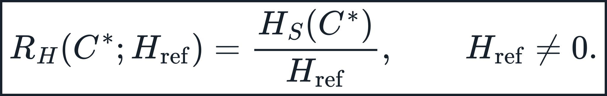
The correspondence denotes the Hamiltonian consequence of the complete selected state  , with
, with  retained as one evaluated property of that state. Entropy alone does not replace the configuration.
retained as one evaluated property of that state. Entropy alone does not replace the configuration.
The same correspondence is used when  is atomic, molecular, composite, or macroscopic. Therefore molecular continuation imports the already-defined interaction/Hamiltonian operator unchanged:
is atomic, molecular, composite, or macroscopic. Therefore molecular continuation imports the already-defined interaction/Hamiltonian operator unchanged:
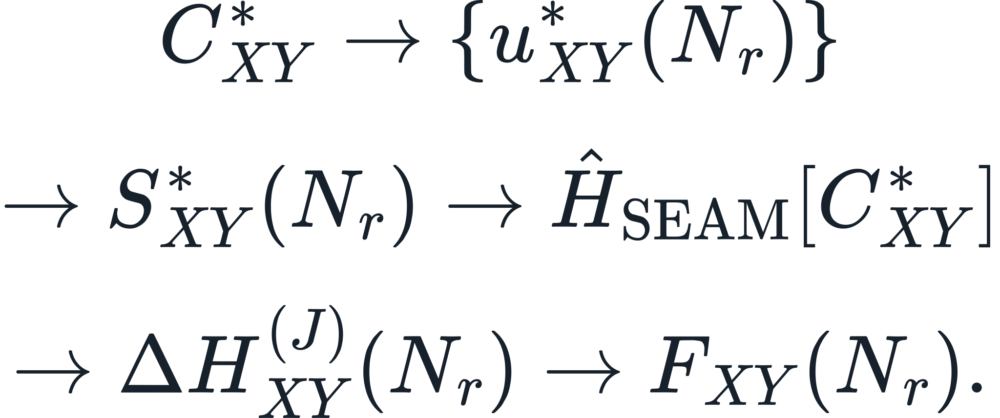
The native Hamiltonian, pair-energy, and force quantities are consequently defined operator quantities once their complete retained state is supplied. A conventional numerical correspondence remains downstream and requires a declared same-projection reference/unit adapter; absence of that adapter is not absence of the Hamiltonian or force quantity.
18.2 Canonical v18.6 variational-field realization
For each occupied shell of each retained entity,
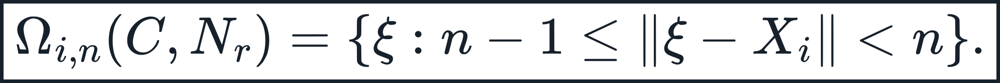
The admissible interacting-field class is
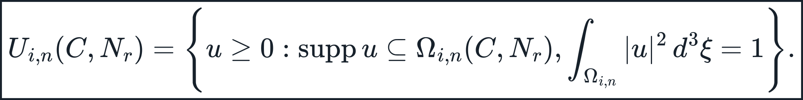
The isolated-state and fixed-branch baseline is
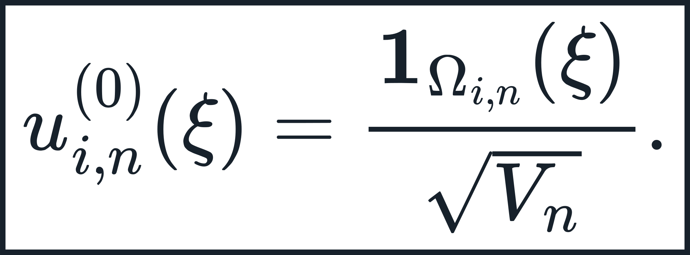
For an interacting configuration at fixed native separation  , the field profile is selected variationally from the complete shell-constrained product family:
, the field profile is selected variationally from the complete shell-constrained product family:
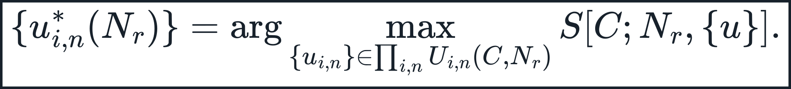
The shell support, shell occupancy, configuration topology, entropy composition, coupling law, comparator firewall, and declared run contract remain frozen while the normalized internal field profile is selected. Center weighting, boundary weighting, interaction-axis weighting, depletion, or concentration may emerge only through this entropy maximization. No profile may be inserted or tuned from comparator evidence.
The resolved complete field is
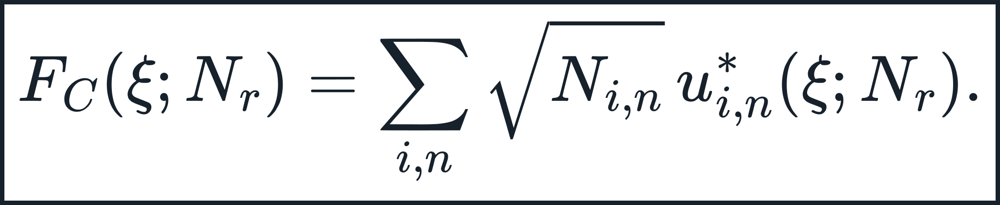
Its normalized density is
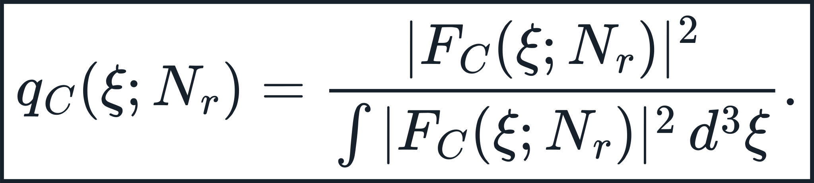
For each shell field,
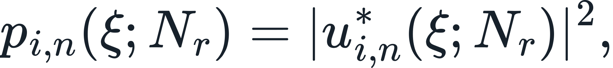
and the retained overlap is
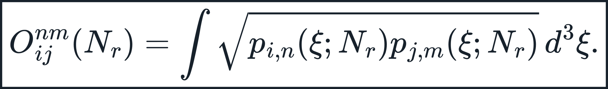
The entropy components remain
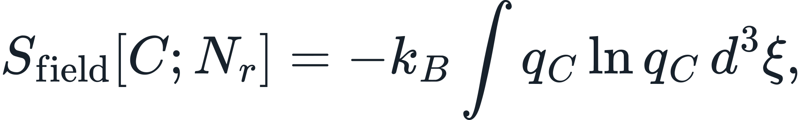
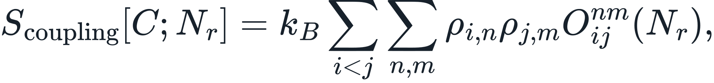
with the complete selected entropy
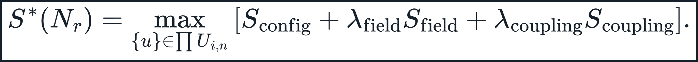
18.2.1 Deterministic numerical realization of the variational selector
The mathematical selector remains the continuous shell-constrained variational definition above. Canonical numerical evaluation is not implementation-free. A numerical value reported as  is canonical only when produced by the active numerical contract or by an explicitly versioned successor contract.
is canonical only when produced by the active numerical contract or by an explicitly versioned successor contract.
The active evaluator is:
runtime_id = VF-REGION-LBFGSB-R4
implementation = Evidence/Runtime/variational_field_evaluator.py
Python = 3.13.5
NumPy = 2.3.5
SciPy = 1.17.0
arithmetic = binary64 / float64
At fixed  , each occupied shell support is partitioned into its exclusive region and every geometrically distinct intersection with an occupied shell of the opposing node. Since shells belonging to one node are mutually disjoint, this partition is complete for the two-node shell-support geometry. Each field is represented by one nonnegative constant amplitude per nonzero support-membership region, with shell normalization enforced through normalized region masses.
, each occupied shell support is partitioned into its exclusive region and every geometrically distinct intersection with an occupied shell of the opposing node. Since shells belonging to one node are mutually disjoint, this partition is complete for the two-node shell-support geometry. Each field is represented by one nonnegative constant amplitude per nonzero support-membership region, with shell normalization enforced through normalized region masses.
For shell n and shell m, the exact intersection volume is
using the exact two-sphere lens formula implemented in the bound evaluator. No voxel grid, cylindrical grid, sampled quadrature mesh, empirical bond distance, or comparator-conditioned field is admitted by this contract.
The optimization contract is fixed:
method = L-BFGS-B
starts = 5 deterministic starts
start scales = [0.00, 0.35, 0.70, 1.05, 1.40]
ftol = 1.0e-15
gtol = 1.0e-9
maxiter = 10000
maxls = 100
accept gradient norm= 2.0e-5
accept top-two delta= 2.0e-6
winner = highest complete S[C]; lower start index breaks exact ties
The five starts are deterministic perturbations of the uniform region-mass state using the fixed category patterns encoded in the bound implementation. Random initialization is prohibited.
A point terminates RESOLVED only when both numerical acceptance gates pass. Otherwise it terminates INDETERMINATE_OPTIMIZER_NOT_CONVERGED; the executor may not substitute a lower local maximum, change the grid/basis, add starts, loosen tolerances, or repair the run without a new versioned contract.
The canonical reference execution gives
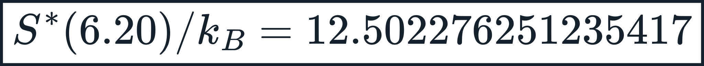
with selected gradient norm 5.024295863460037e-7 and top-two objective difference 2.048518332742333e-8. These are execution values bound to VF-REGION-LBFGSB-R4; they do not replace the complete selected field state.
No separate native electric/magnetic/mixed-channel decomposition is required to close this v18.6 variational molecular branch. Its radial response is the selected variational state itself. This statement is branch-scoped and does not supersede the separately declared long-range attraction Hamiltonian used by the macroscopic/long-range attraction branch, whose radial factor is eta(N_R)/N_R.
18.3 Radial response, Hamiltonian difference, and force
The native radial response is the resolved variational entropy curve itself:
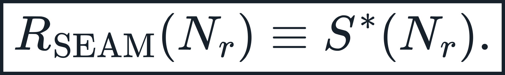
A finite selected separation, when the active run contract requires one, is a relational coordinate of the complete selected state:
For an interior extremum,
The complete configuration remains the physical state; and are retained properties of that state and do not replace it.
For every resolved pair state , the pair Hamiltonian difference is
The pair-energy magnitude is
The inherited Hamiltonian/Joule correspondence may be written
For molecular execution, is supplied by the declared Cs-133 event interval when a time-dependent Hamiltonian projection is requested. Static pair structure and elapsed event time are distinct admitted inputs. The pair-state/event metrology path is closed by the current run contract.
and no numerical or total force is emitted. In particular, is never assumed from silence or from an entropy plateau.
The entropy/thermal contribution remains directly defined and executable:
and at constant ,
Because physical separation is , the force is generated directly by the resolved-state energy curve:
This is the current native interaction path:
Channel-energy decomposition, inserted phase/orientation terms, or a separately fitted pair-energy coefficient are not required native operators in this v18.6 molecular path. The separately declared attraction Hamiltonian is not imported into the v18.6 optimizer and the v18.6 TAU_PAIR_MAPPING_UNBOUND terminal is not exported into the attraction/long-range attraction branch. Conventional electric, magnetic, or force-channel descriptions may be used only as downstream projections where separately declared.
Chapter 19
Engine constraint requirements
| Requirement | Operational requirement |
|---|---|
| ARCV construction | Construct the finite projection representation carrying structure, relations, bounds, and intent. |
| Atomic constructor | Use Z(n), c_shell, c_n, and fill/skip conservation where atomic shell state is required. |
| Configuration constructor | Build C=({𝓢_i},𝓡), with 𝓡={r_ij,chi_ijkl}, for configuration problems. |
| Entropy selection | Apply the same S |
selection rule over the admissible candidate family. | | Direct interaction | Compare Q-ARC with candidate/reference ARCV structures through engine-defined interaction. | | Complete projection use | Evaluate every projection required by the active contract. | | Full-function evaluation | Invoke all applicable functions before a full-engine refusal. | | Determinism | Use canonical tie-breaking and stable serialization. | | Metrology | Resolve physical time through Cs-133 count metrology. | | Evidence boundary | Do not reveal held-out comparator data until native output is frozen. | | Transcript | Emit sufficient intermediate state to reproduce the result. |
The engine mathematics is fixed. Runners select input files, questions, held-out sets, and requested projections. Runners must not change engine equations or insert target-specific tuning.
Part III
Continuum, Manifold, and Reference Formation
Chapter 20
Continuum retention and Manifold normalization
The Continuum is persistent retained structural reference. The Manifold is a normalized comparison space derived from that retained state. A configuration selected by native SEAM mathematics can be retained directly or through an explicitly declared projection.
validated C*/projection -> Continuum K_t -> normalization -> Manifold M_t
The shell/configuration mathematics preserves this distinction and makes the retained atomic object explicit: the reference carries a shell state, relational state, evidence record, and permitted projections rather than an opaque label.
| Property | Continuum | Manifold |
|---|---|---|
| role | persistent retained reference | normalized query/comparison space |
| update | validation-controlled | derived from retained state |
| canonical equation | derived from retained canonical state | |
| query specificity | low / persistent | high / projection dependent |
Chapter 21
Persistent representation and runtime projection
A persistent representation stores enough information to reproduce the supported projection without reconstructing the answer from prose. Runtime projection is a deterministic operation over retained structure.
K_t(object) -> Phi_f -> v_f
21.1 Schema/contract binding
schema(reference) compatible with schema(engine)
If not compatible, the runtime must transform, quarantine, or refuse the artifact under a logged migration rule.
Chapter 22
Reference genesis
Reference genesis handles the first validated instance of a structure or question class. The declared source is either a native SEAM derivation or an admissible empirical observation, and the role of every field remains explicit.
native structural result + evidence record -> validation -> retained reference
An external empirical measurement can seed an evidence/reference record, but its conventional explanatory formula is not thereby admitted as a native generator.
22.1 Atomic reference genesis
Z(n) -> 𝓢_i -> C -> C* -> validated atomic reference
Once admitted, this reference supports reverse queries through the Manifold without requiring the runner to reconstruct shell mathematics from a label.
Chapter 23
Manifold completion
Manifold completion is measured over the defined representation and admitted evidence set, not by a claim that every possible physical phenomenon has been solved. The active artifact declares coverage, schema, hashes, canonical equation, and any unavailable evidence fields.
All operative mathematical definitions are contained in this specification. An unavailable evidence artifact is reported as EVIDENCE_UNAVAILABLE; it is never reclassified as a missing canonical equation.
| Status | Meaning |
|---|---|
| CANONICAL_IN_DOCUMENT | definition or deterministic generating equation is stated in this specification |
| AUTHORIZED_EXTERNAL_INPUT | external numerical observation, evidence, or comparator field explicitly admitted by the active contract |
| ABSENT_FROM_CANONICAL | required mathematical object is neither stated nor generated in this specification; the contract terminal state fires |
Evidence availability and mathematical-definition status are separate fields.
Part IV
Ingest, Coalescence, and Composition Accounting
Chapter 24
Primary ingest function
Ingest receives a source record and creates a normalized evidence/reference contribution with evidence record. The ingest process does not normalize away empirical content, and it does not convert conventional interpretation into native SEAM mathematics.
source -> parse -> evidence record -> normalize fields -> structural/evidence mapping -> validation -> disposition
Raw observables such as counts, positions, spectra, wavelengths, timestamps, uncertainties, and source conditions are retained as evidence fields. Any SEAM-derived shell, configuration, entropy, or projection value is produced by the engine or a documented native operator.
24.1 Time-bearing evidence
If a source time is used as a physical model input rather than external metadata, it is converted or resolved through the declared Cs-133 metrology path before entering native rate calculations.
Chapter 25
Contribution dispositions
| Disposition | Meaning |
|---|---|
| RETAIN | admissible contribution participates in active reference construction |
| QUARANTINE | but excluded until a named issue is resolved |
| REJECT | fails source/evidence record/admissibility requirements |
| REPLACE_ACTIVE_RECORD | replaced by a source while model composition is retained |
| COMPARATOR_ONLY | used only after native result for evidence comparison |
The disposition is attached to the contribution record; silent data loss and silent promotion are both prohibited.
Chapter 26
Composition ledger invariant
N_in = N_retain + N_quarantine + N_reject + N_replace + N_comparator
The composition ledger guarantees that every ingested contribution has an accounted disposition. If one raw record expands into several normalized records, the expansion relationship is recorded so the ledger remains auditable.
The invariant is documentary and computational: the same source count must be recoverable from the transaction log, index state, and retained/quarantined/rejected collections.
Chapter 27
Ingest transaction
A complete ingest transaction binds source identity, parse result, normalized record, evidence record, validation result, disposition, and indexes.
-
Hash or otherwise identify the source artifact.
-
Parse without changing empirical meaning.
-
Separate raw observation from source-provided interpretation.
-
Normalize only through documented deterministic transforms.
-
Map eligible structural fields to SEAM representations.
-
Run source and structural validation.
-
Assign an explicit disposition.
-
Commit the normalized record, ledger entry, and indexes atomically.
Chapter 28
Atomicity, idempotency, and replay
Ingest_v(source_hash) -> deterministic transaction result
The same source under the same ingest contract identity must not create uncontrolled duplicate active records. When the ingest contract changes, the contract identity changes and the earlier transaction remains traceable as an evidence transaction.
Replay is a reproducibility feature: a reviewer can re-run the transaction and determine whether the same source identity, ingest contract identity, and declared transforms reproduce the same normalized record and disposition.
Chapter 29
Ledger integrity and indexes
Indexes exist to locate retained structures, source records, transaction states, and projection/reference keys. They must not become a second untracked source of mathematical truth.
| Index | Minimum key |
|---|---|
| source index | source hash / source ID |
| entity/reference index | stable structural/reference identifier |
| transaction index | ingest contract identity + transaction ID |
| projection index | reference ID + projection/operator ID |
| status index | disposition / validation state |
Index repair is derived from retained authoritative records; index contents must not override them.
Chapter 30
Completion measurement over ingest
Four completion questions are kept separate:
| Question | Measure |
|---|---|
| Were all source records processed? | ingest completion |
| Are required empirical fields present? | evidence coverage |
| Are native operators executable? | mathematical/runtime closure |
| Are required structural branches retained? | Continuum/Manifold coverage |
A complete ingest does not imply a complete theory, and an incomplete external dataset does not imply an undefined native operator.
Part V
Production Execution and Artifact Contracts
Chapter 31
Manifold artifact gate
The active Manifold is a frozen functional artifact for a production run. Its identity, schema, and hash are recorded before execution. The runner must not decode the Manifold outside the engine and substitute external comparison logic for the engine call.
question -> engine(active manifold) -> engine output
A missing, corrupt, incompatible, or unverified Manifold triggers an artifact gate failure rather than a reconstructed substitute.
Chapter 32
Required validation interface
The validation interface must distinguish mathematical execution from external evidence agreement.
| Gate | Question |
|---|---|
| structural | were primitives and configuration constructed under the declared rules? |
| admissibility | did the candidate satisfy count, capacity, relation, and query constraints? |
| reference | was the active reference frozen and valid? |
| metrology | were dimensional time-dependent quantities bound to the declared primitive? |
| evidence record | can every non-derived input be traced to source? |
| blindness | was comparator evidence withheld until native result freeze where required? |
| falsification | is a mismatch retained rather than tuned away? |
Validation yields one declared terminal state: PASS, FAIL, INDETERMINATE, SYMBOLIC_ONLY, or another state explicitly named by the active contract. These states must not be collapsed into one generic 'did not work' label.
32.1 Run-contract completeness gate
Before execution, the validator checks the named run contract against this specification. Required fields are: contract ID; objective; this specification/hash; exact inputs; exact equations; permitted perturbation; prohibited inputs; coordinate/unit contract; coefficient values or extraction rules; domain/search bounds; numerical method; tolerances; terminal-state rules; required artifacts; comparator location; comparator access event; and disposition rule.
If any required field is absent, execution does not start. Terminal state: INDETERMINATE: CONTRACT_INCOMPLETE.
No software default satisfies a missing field. No executor interpretation satisfies a missing field. No source outside the declared contract is consulted during native execution.
32.2 Terminal-state finality gate
A terminal state is an execution boundary, not a request for repair. When any terminal condition named by the active contract is satisfied, mathematical and numerical execution under that contract ends immediately.
The only authorized post-terminal operations are artifact completion from values already produced, transcript finalization, hashing, sealing, and stop. Post-terminal artifact completion does not evaluate a new equation, call a new numerical method, change a parameter, or extend the search domain.
The executor has no repair authority. It does not change quadrature, node count, tolerance, optimizer, coordinate system, domain partition, smoothing rule, boundary treatment, initialization, coefficient, field equation, or any other declared method after a terminal condition occurs.
The executor does not ask the operator to choose an undeclared repair while the run is active or after it has terminated. A question such as “should I switch methods?” has no branch in the active contract and therefore has no execution status.
A proposed repair is recorded only as FUTURE_CONTRACT_CANDIDATE metadata after the run is sealed. It is not executed, tested, substituted, or treated as a continuation of the terminated run.
Controlling sequence:
TERMINAL_STATE -> COMPLETE_DECLARED_ARTIFACTS -> HASH -> SEAL -> RETURN_TO_WORKFLOW_SUPERVISOR
Any computation performed after TERMINAL_STATE other than the declared artifact-completion operations is INVALID_RUN: POST_TERMINAL_EXECUTION.
32.3 Run-terminal finality versus workflow successor dispatch
A terminal state closes the named run. It does not by itself close the root objective. After the run is sealed, the workflow supervisor evaluates root-objective closure and declared dependency state before deciding whether workflow execution ends.
RUN_A -> TERMINAL_STATE -> COMPLETE_ARTIFACTS -> HASH -> SEAL -> DECLARED_SUCCESSOR_EDGE -> RUN_B
A successor edge is executable only when all of the following fields are declared before RUN_A starts: predecessor contract ID; exact triggering terminal state; successor contract ID; successor contract identity/hash; carried-forward frozen objects; changed object; prohibited objects; comparator state; and workflow disposition after successor completion.
The workflow supervisor performs successor dispatch mechanically after the predecessor seal. The predecessor executor does not repair the run. RUN_B receives a new UID, new transcript, new hashes, and its own terminal state.
If no explicit contract-specific successor edge matches the sealed terminal state, the supervisor next evaluates the global root-objective dependency rule in §32.7. WORKFLOW_STOP is authorized only after the root objective is complete or declared dependency exhaustion has itself reached a root terminal.
NO_CONTRACT_SPECIFIC_EDGE -> ROOT_OBJECTIVE_CHECK -> DEPENDENCY_DISPATCH_OR_WORKFLOW_STOP
32.4 Sealed-result verification versus open-workflow interpretation
A sealed terminal artifact is immediately eligible for verification. Verification includes independent reproduction, arithmetic or numerical recomputation, contract-compliance audit, internal-consistency audit, artifact/hash verification, and scope-accurate reporting of the terminal result.
A sealed link inside a larger unfinished workflow retains its own scoped meaning. The open downstream portion of the workflow has no result and receives no scientific characterization.
During an unfinished workflow, the executor or reviewer reports only execution state: active contract ID, completed operation, sealed terminal code, artifact state, and automatic successor dispatch already declared by the frozen graph. It does not infer downstream outcomes, characterize unresolved layers, recommend model changes, or propose a continuation.
A continuation exists only through a frozen contract-specific successor edge or the globally predeclared dependency-exhaustion edge in §32.7. The dependency edge does not invent a new mechanism; it recursively resolves only the named required objects already emitted by the sealed child contract.
Controlling interpretation rule:
SEALED_RESULT -> VERIFY_AND_REPORT_WITHIN_SCOPE
OPEN_WORKFLOW -> REPORT_EXECUTION_STATE_ONLY
ROOT_OBJECTIVE_COMPLETE + NO_DECLARED_SUCCESSOR -> STOP_WITHOUT_PROPOSAL
32.5 Canonical-model composition resolution before external ingress
Before any object is classified as external ingress, the executor checks this specification. Every object consumed during execution is classified only by its stated role here, not by external naming, provenance, or reviewer interpretation.
Every object consumed during execution receives exactly one authority class: CANONICAL_IN_DOCUMENT; AUTHORIZED_EXTERNAL_INPUT; or EXTERNAL_NONAUTHORITATIVE.
CANONICAL_IN_DOCUMENT objects execute directly from this specification. AUTHORIZED_EXTERNAL_INPUT objects can supply only the observation, comparator, or evidence fields named by the active run contract. EXTERNAL_NONAUTHORITATIVE objects have zero execution authority.
CANONICAL_AUTHORITY_CHECK -> EXTERNAL_INGRESS_CLASSIFICATION
CANONICAL_IN_DOCUMENT -> DIRECT_EXECUTION_AUTHORITY
EXTERNAL_PROVENANCE != EXECUTION_AUTHORITY
32.6 External-ingress firewall and guardrail precedence
External observation, comparator, and evidence material is readable and auditable but has zero operator-definition authority. It enters execution only when the active contract names the exact field, role, deterministic transform, scope, and reveal state.
The executable state is constructed only from the active canonical baseline, the explicit delta or override named by the immutable run contract, and predecessor fields explicitly canonical through a declared successor edge.
EXECUTABLE_STATE = CANONICAL_BASELINE ⊕ DECLARED_CONTRACT_DELTA ⊕ DECLARED_PREDECESSOR_FIELDS
The operator ⊕ is defined only for fields named by the active contract. It does not authorize semantic matching, symbol matching, external substitution, dimensional matching, or reviewer inference.
An external input enters execution only when the contract declares all of the following: input identity/hash; exact consumed field; target contract field; deterministic mapping or transform; role; override status; permitted scope; anti-circularity status; and validation condition. Missing any field rejects the ingress.
UNDECLARED_EXTERNAL_OBJECT -> EXTERNAL_INGRESS_REJECTED
CONSUMED_UNDECLARED_EXTERNAL_OBJECT -> INVALID_RUN: UNDECLARED_EXTERNAL_INGRESS
Guardrail precedence is strict: the run contract and its declared canonical baseline control active execution; the declared successor graph controls continuation; explicitly canonical sealed fields are read-only inputs; named reference artifacts supply only their declared fields; external/evidence record material is read-only; comparator/evidence material is inaccessible until its reveal event. A lower-precedence layer never fills, overrides, or repairs a higher-precedence omission.
A guardrail is restrictive, not generative. A requirement such as “metrology required,” “Hamiltonian binding required,” “reference required,” or “complete state required” does not authorize an external or conventional substitute. If the required canonical object is absent, the declared terminal state fires.
32.7 Root-objective exhaustion and mandatory dependency dispatch
Every workflow that seeks closure of a named scientific or metrological objective has a ROOT_OBJECTIVE_ID, ROOT_SUCCESS_CRITERION, ROOT_REQUIRED_OBJECTS, and ROOT_TERMINAL_STATES. A terminal code emitted by a child contract is not automatically a root terminal.
A sealed child result that explicitly names unresolved required objects is a DEPENDENCY_TERMINAL. It records valid information about that child run, but it cannot terminate the workflow while the root objective still requires those objects.
CHILD_TERMINAL + UNRESOLVED_REQUIRED_OBJECTS != ROOT_TERMINAL
The following states are dependency-discovery states whenever they carry a nonempty unresolved-object ledger required by the root objective: SYMBOLIC_ONLY; SYMBOLIC_CLOSED_NUMERIC_FACTORS_UNRESOLVED; UNRESOLVED_REQUIRED_OBJECT; NUMERIC_BINDING_ABSENT; and any contract-specific state explicitly marked DEPENDENCY_TERMINAL.
After the child seal, the supervisor dispatches RUN-SEAM-DECLARED-DEPENDENCY-EXHAUST-01 or a narrower predeclared specialization. This global edge is part of the frozen canonical workflow and therefore does not require operator permission or a newly authored successor edge at runtime.
DEPENDENCY_TERMINAL -> COMPLETE_ARTIFACTS -> HASH -> SEAL -> DEPENDENCY_QUEUE -> DECLARED_DEPENDENCY_EXHAUSTION
Dependency exhaustion is strictly non-generative. It follows only deterministic definitions, identities, constants, and mappings stated in this specification and admitted numerical run inputs. It cannot introduce a new physical mechanism, comparator, fitted value, software default, external substitute, or reviewer proposal.
Each unresolved object is expanded recursively through its canonical definition in this specification. Newly exposed dependencies are appended to the queue. The queue is processed until every required object is numerically resolved, identified as an authorized run input that is genuinely absent, classified as an undefined required native mapping/operator, rejected by a canonical-definition conflict, or shown to participate in a dependency cycle.
The executor does not stop merely because one child run emitted SYMBOLIC_ONLY or SYMBOLIC_CLOSED. It does not ask the operator whether to continue. Those states cause automatic dependency dispatch when the unresolved object belongs to ROOT_REQUIRED_OBJECTS.
A root workflow stops only on one of the following: ROOT_RESOLVED; ROOT_REJECTED under an explicit falsification predicate; ROOT_SYMBOLIC_ONLY after declared dependency exhaustion proves that one or more explicitly authorized numerical run inputs are absent while the symbolic map is complete; ROOT_INDETERMINATE after exhaustive detection of an undefined required native primitive/operator, canonical-definition conflict, or dependency cycle; or INVALID_ROOT_WORKFLOW.
SEALED + ROOT_OBJECTIVE_COMPLETE + NO_SUCCESSOR_EDGE -> WORKFLOW_STOP
SEALED + ROOT_OBJECTIVE_OPEN + UNRESOLVED_REQUIRED_OBJECTS -> MANDATORY_DEPENDENCY_DISPATCH
Chapter 33
Production transcript
The transcript is part of the result. It shows what the engine did, not merely what the final answer was.
question -> query/reference -> primitive -> 𝓢_i -> C candidates -> S
-> C* -> projection -> interaction -> native result -> hash -> comparator -> residual
For questions that do not require atomic reconstruction, the transcript begins from the relevant retained structural primitive and records why that entry point is admissible.
| Transcript field | Required content |
|---|---|
| run identity | UID, date/runtime metadata, implementation and orchestration identities |
| input | exact question and primitive/reference input |
| candidate generation | candidate count and constraints |
| selection | entropy/coherence/discrepancy values as applicable |
| terminal | native result before comparator |
| evidence reveal | time/order of comparator access |
| comparison | residual/disposition |
33.1 Contract ledger
The transcript begins by reproducing the complete run contract exactly as executed. The transcript then records each consumed input and identifies the contract field that authorized it.
An input with no contract authorization is a run-invalidating error: INVALID_RUN: UNDECLARED_INPUT_CONSUMED. A declared input that was not consumed remains visible in the transcript.
33.2 Terminal transcript and sealing record
When a terminal condition occurs, the transcript records the exact condition, the exact values that triggered it, the last authorized equation or numerical operation, and the execution stop point.
The transcript then records artifact serialization, hashes, and seal identity. It records zero post-terminal model evaluations.
If the executor identifies a possible remedy, the transcript labels it FUTURE_CONTRACT_CANDIDATE and records it after the sealed native result. That label is descriptive metadata only. It supplies no permission to execute the remedy.
A cold-run package is incomplete until the native terminal record, required artifacts available at termination, transcript, and hashes are sealed. Explanation without sealing is not contract completion.
Every branch decision records the equation or explicit contract rule that selected the branch. “Reasonable,” “standard,” “conventional,” “default,” and equivalent unstated justifications are invalid branch sources.
33.3 Successor-dispatch transcript
When a sealed run triggers a predeclared successor, the workflow transcript records: predecessor UID; predecessor seal hash; triggering terminal code; successor-edge ID; successor contract ID/hash; dispatch timestamp/order; comparator-access state; and successor UID.
The successor transcript starts from its own immutable contract. It does not append new model evaluations to the terminated predecessor transcript.
A workflow-level conclusion is emitted only after the declared successor graph reaches a node with no matching successor edge or reaches an explicit workflow terminal disposition.
33.4 Dependency-exhaustion transcript
When §32.7 dispatches dependency exhaustion, the workflow transcript records the ROOT_OBJECTIVE_ID, child contract/seal, triggering dependency-terminal code, exact UNRESOLVED_REQUIRED_OBJECTS list, dependency-queue order, every definition used to expand an object, canonical-status authority for that definition, and the final disposition of each dependency.
The transcript distinguishes DISCOVERED_DEPENDENCY from NEW_ASSUMPTION. A dependency produced algebraically by an admitted definition is authorized. An object introduced because the executor believes it would be useful is unauthorized.
Every dependency factor receives an explicit terminal disposition in the ledger. The current terminal classes distinguish resolved values, authorized run-input boundaries, definition conflicts, dependency cycles, and other contract-declared outcomes. No dependency is silently dropped.
Chapter 34
Boundary trace
Every value entering a production calculation is assigned a source class:
| Class | Definition |
|---|---|
| Primitive | declared first-principles or metrological starting quantity |
| Derived | computed from primitives and derived state |
| Reference | retrieved from validated Continuum/Manifold structure |
| Evidence | raw external observation |
| Comparator | external formula/value used after native output |
| Authorized external input | observation/evidence/comparator field admitted explicitly by the active contract |
| Implementation | software tolerance, iteration cap, serialization, runtime-only setting |
The boundary trace is what makes anti-circularity auditable. If a target evidence value appears upstream of the native result, the blind test is invalid.
Part VI
Mathematical and Documentary Binding
Chapter 35
Formalization-to-engine binding
Every equation presented as executable SEAM mathematics must bind to an implementation or be marked as a formal specification awaiting executable binding. Conversely, every runtime operator that affects native output must identify the mathematical rule it implements.
canonical equation <-> operator implementation <-> test <-> artifact
Beginning with canonical, the entropy functional and shell-overlap operator are documentary-bound in §4.15. Remaining implementation obligations are runtime binding of the active structural field, frozen spatial partition, coefficient record, and test transcript. State-dependent Hamiltonian coefficients and relation kernels remain separate downstream obligations.
Chapter 36
Documentation-engine boundary
The document defines semantics, mathematics, contracts, canonical equation, and audit boundaries. The engine defines what was actually executed in a specific run. Neither is permitted to impersonate the other.
| Statement | Proper status |
|---|---|
| equation in document, no implementation | formal/documentary |
| function in active source, tested | runtime-bound |
| required mathematical object absent from this specification | declared contract terminal state |
| worked comparator equation | comparator-only unless independently derived |
A reviewer can state that a supplied artifact is insufficient to verify an empirical or implementation claim. That statement does not alter any mathematical definition stated in this specification.
Chapter 37
Valid critique boundary
A valid critique names the boundary it has actually tested.
| Finding | Meaning |
|---|---|
| DOCUMENTARY_BINDING_ABSENT | supplied document does not bind a claim to source or transcript |
| ARTIFACT_NOT_SUPPLIED | required executable/data artifact is absent from the supplied package |
| RUNTIME_FAILURE | supplied executable ran correctly and failed at a defined boundary |
| ENGINE_CAPABILITY_ABSENT | inspection/execution establishes that capability is absent from that artifact |
| PRODUCTION_REFUSAL | full engine/Manifold execution completed and no admissible closure was found |
A valid critique separates canonical-definition status, runtime status, and empirical-evidence status. An absent evidence artifact is not an absent canonical equation, and an absent canonical equation is not repaired from outside material.
A downstream disagreement must also be classified correctly. Because SEAM operates upstream of conventional observable equations, a reviewer must distinguish (a) a different SEAM-native state that conventional physics subsequently describes from (b) a genuinely incompatible observable prediction. Only the latter is a direct physical contradiction. This distinction does not excuse disagreement: the SEAM prediction must be frozen before projection and remains falsified if its downstream observable conflicts with evidence.
37.1 Contract-specific critique rule
Every execution critique names the exact run contract and evaluates only what that contract declares. A critique does not rescue a failed run by adding an unstated mechanism, and it does not invalidate a run by requiring an undeclared downstream conventional primitive.
A claim that “the model instead uses X” has no execution status until X is written as an explicit new contract. A claim that “the model must have assumed X” is false unless X appears in the canonical equations, run contract, or transcript.
37.2 Executor-compliance boundary
A correct diagnosis does not cure a contract violation. An executor can correctly identify why a run terminated and still violate the run by continuing with an undeclared repair.
Critique therefore separates RESULT_VALIDITY from EXECUTOR_COMPLIANCE. The terminal result is evaluated under the frozen contract. Every action after the terminal event is separately checked against the terminal-state finality gate.
A proposed superior numerical method, physical model, or mathematical representation is not evidence against the sealed terminal result and is not an authorized continuation. It is a candidate object for a different contract.
37.3 Numerical-evaluator failure boundary
INDETERMINATE: QUADRATURE_NOT_CONVERGED establishes failure of the declared numerical evaluator to satisfy its convergence gate. It does not establish rejection of the physical profile and does not establish project-level mathematical indeterminacy.
When the frozen workflow contains a successor evaluator for that terminal code, the current run is sealed at its declared terminal and the successor executes as a separately declared adjudication. The predecessor result is complete at its own contract scope.
NUMERICAL_EVALUATOR_INDETERMINATE + DECLARED_SUCCESSOR -> SEAL_CURRENT_RUN -> EXECUTE_SUCCESSOR
A successor numerical evaluator changes only the declared evaluation operator. It does not change the physical field profile, entropy law, coefficient values, support, search domain, comparator boundary, or terminal-test semantics unless the successor contract explicitly lists a separate changed object.
37.4 Cold-reviewer non-ingress rule
A reviewer tests sealed artifacts without becoming an input source to the run. Verification comments, alternative models, conventional correspondences, and proposed next steps remain outside executable state.
A sealed terminal result is reproduced and interpreted within its declared scope. Any declared downstream successor is a separate run contract and receives no inferred result from the reviewer.
During successor-workflow review, statements about what the process “is heading toward,” what parameter “should be added,” or what contract “should come next” have no execution status. The declared successor graph alone determines continuation.
External material used for an evidence record cannot cross the critique boundary into active operator definition by being described as an assumption, analogy, likely mapping, or obvious equivalent. Ingress requires the complete declaration defined in §32.6.
Chapter 38
Resolver boundary
The resolver receives the primitive output of the structural calculation. It formats, explains, or translates that result while preserving support and terminal state.
P_X -> Resolver -> A_X
The resolver must not decode an opaque artifact outside the engine, manufacture a candidate, substitute a conventional answer, or reinterpret an indeterminate result as a resolved one.
For one-question-per-run transcripts, the resolver output is linked to the same UID and engine result that produced the primitive.
Chapter 39
Complete closure operator
The canonical composed operator remains:
Closure_SEAM(X) = VC(MC(CC(TC(SC(ℜ(X))))))
| Operator | Canonical role |
|---|---|
| ℜ | representation constructor; for atomic reconstruction begins from Z(n), creates 𝓢_i and admissible C candidates |
| SC | configuration/structural closure: applies C*=arg max S |
over admissible physical configurations where required | | TC | transfer/trajectory stage; is represented by when declared as Ĥ_SEAM
when operator notation clarifies the selected-state interaction/evolution | | CC | internal structural/continuity coherence Coh_struct, computed before Manifold comparison | | MC | Manifold comparison; computes Coh_M for the retained projection and Δ_M=1-Coh_M | | VC | validation closure over residual, contradiction, support, model composition, metrology, and admissibility gates |
X -> O(X) -> structural primitive -> C -> C* -> Phi(C*) -> configuration closure -> transfer/operator stage -> Coh_struct -> Manifold interaction -> Coh_M -> Δ_M -> validation -> P_X -> A_X or refusal
The closure operator is retained exactly as defined here. Its structural content enters through ℜ and SC, and time/metrology binding is explicit wherever a transfer or observable is time-dependent.
Chapter 40
Canonical definition
SEAM is the operational layer of a structure-first mathematical framework. It represents an input as observable relations or a declared structural primitive; for atomic construction it begins from Z(n), distributes the count into the fixed seven-shell architecture, constructs entity shell states and complete relational configurations, selects the admissible configuration under the entropy extremum, projects the retained structure into coherent facets, compares those projections against retained Continuum state through a normalized Manifold, calculates closure/coherence/residual under the active engine contract, and permits a readable answer only after support, continuity, evidence record, metrology, and falsification gates succeed.
Z(n) -> 𝓢_i -> C -> C* ->
operator representation] -> Phi(C*) -> Coh_struct -> Coh_M/Δ_M -> validation -> P_X -> A_X
No label, template, candidate injection, documentary omission, external interpretation, or held-out answer substitutes for that execution. Physical time is resolved through Cs-133 count metrology wherever the native calculation requires a time quantity.
T(X)=n_Cs(X)/9,192,631,770
Appendix A — Canonical Authority Boundary
This specification is self-contained and canonical as written. Only mathematics, constants, definitions, branch rules, run contracts, and terminal rules stated here have execution authority.
Outside material, project memory, reviewer knowledge, and software defaults cannot define or repair a mathematical object. External observations, comparators, and evidence enter only through explicitly declared contract interfaces.
A mathematical object absent from this specification is absent for execution. The executor reports the applicable terminal state rather than constructing a replacement from outside material.
A.1 Canonical-object authority
This specification is a complete canonical object. Only mathematics, definitions, constants, branch rules, run contracts, and terminal rules stated in this document have execution authority. A reader does not need development provenance to execute it. If an equation is stated here, it is canonical for this specification; if it is absent, it is absent for execution.
PRESENT_HERE -> CANONICAL_FOR_THIS_SPECIFICATION; NOT_PRESENT_HERE -> NO_EXECUTION_AUTHORITY
Appendix B — Canonical Mathematical Registry
| Object | Canonical form | Role |
|---|---|---|
| Atomic baseline | Z(n) | baseline number of electrons to distribute |
| Shell capacities | c_shell= |
| fixed seven-shell capacity vector |
| Shell fraction | rho_i,n=N_i,n/c_n | normalized occupancy | | Entity state | 𝓢_i={rho_i,1,...,rho_i,7} | seven-shell structural state | | Pair distance | r_ij=|r_j-r_i| | rigid-motion invariant pair relation | | Parity | chi_ijkl=sgn
| reflection/chirality relation |
| Configuration | C=({𝓢_i},𝓡), 𝓡={r_ij,chi_ijkl} | complete configuration representation | | Selection | C*=arg max_{C in 𝓐} S
| entropy-selected admissible configuration |
| Time | T(X)=n_Cs(X)/9,192,631,770 | Cs-133 count-based physical interval | | Manifold residual | Δ_M=1-Coh_M | normalized Manifold residual for the scalar-coherence instantiation | | Engine closure | Closure_SEAM=VC(MC(CC(TC(SC(ℜ(X)))))) | composed operational closure; CC yields Coh_struct and MC yields Coh_M/Δ_M | | Configuration entropy | S_config=k_B Σ_i Σ_n ln C(c_n,N_i,n) | combinatorial shell-state entropy using integer occupancies | | Field entropy | S_field=-k_B Σ_α p_α ln p_α | Shannon entropy of frozen normalized structural-field distribution | | Shell overlap | O_ij^{nm}=Σ_α sqrt(p_i,n,α p_j,m,α) | symmetric normalized inter-shell spatial overlap in
|
| Coupling entropy | S_coupling=k_B Σ_{i<j,n,m} rho_i,n rho_j,m O_ij^{nm} | pair-counted structural coupling contribution | | Entropy functional | S=S_config+lambda_field S_field+lambda_coupling S_coupling | canonical configuration-ordering functional |
B.1 Same rule across scale
S_rule atomic = S_rule molecular = S_rule amalgamum
The equality means one governing entropy functional rule is applied to different configurations. Numerical entropy values and forces are not asserted to be equal.
B.1.1 Single entropy-governed interaction law across scale
The interaction that binds atomic structure, atoms into molecules, and molecules into molecular amalgamums is one and the same entropy-governed interaction law. Scale changes the admissible configuration and the realized interaction geometry; it does not authorize a new fundamental force law.
F_int^(atomic) ≡ F_int^(molecular) ≡ F_int^(amalgamum)
The identity denotes common governing law/operator. It does not assert equal numerical force, equal entropy value, equal range, or equal geometry across configurations.
B.2 Full versus partial closure
Full entropy closure corresponds to a highly stable admissible entity/configuration. Partial closure retains structural differential participating in bonding, reconfiguration, reactivity, or volatility when the active structural contract contains the required interaction terms.
B.3 Canonical spatial-field realization
Ω_i,n = {ξ: n-1 <= ||ξ-X_i|| < n}; V_n=(4π/3)
u_i,n = 1_{Ω_i,n}/sqrt(V_n); F_C(ξ)=sum_i,n sqrt(N_i,n)u_i,n(ξ)
q_C=|F_C|^2/integral|F_C|^2; S_field=-k_B integral q_C ln q_C d^3ξ
O_ij^{nm}=Vol(Ω_i,n ∩ Ω_j,m)/sqrt(V_nV_m)
Status: canonical mathematical definition. The field/overlap constructor is completely defined by the equations above. The uniform-shell assumption is frozen for each named run and is rejected when executed native evaluation under that run contract fails the declared closure requirement.
Appendix C — Operational Interface and Execution Contract
This appendix defines the operational interface implied by the foundations. It does not include engine or runner source code. The implementation layer orchestrates only the inputs and questions declared by the run contract; the mathematical order and operator meanings are fixed by the preceding foundations.
-
One question per run.
-
The orchestration layer passes the question and active Manifold/reference artifact to the operational layer without modifying the mathematical content.
-
The orchestration layer does not preselect the winning operator from a keyword or expected answer.
-
All applicable functions are evaluated before a universal production refusal.
-
Implementation and reference identities are recorded sufficiently to reproduce the execution context.
-
Physical time dependencies expose the Cs-133 metrology baseline/contract identity.
-
Native result is frozen before held-out comparator reveal.
-
Transcript includes intermediate structural and arbitration states.
C.1 Required artifact set
| Artifact | Purpose |
|---|---|
| question record | exact input and UID |
| implementation identity | hash or equivalent identity of the implementation used; implementation cannot change canonical mathematics |
| orchestration record | input selection and execution-context record; orchestration cannot change canonical mathematics |
| manifold/reference artifact | frozen comparison object |
| metrology record | time primitive binding if required |
| candidate/intermediate log | reconstructible structural path |
| native-result artifact | machine-readable native result |
| resolver-output artifact | human-readable expression linked to the native result |
| manifest + hashes | artifact identity |
C.2 Operational binding checklist
The canonical layout requires the documentary mathematics to bind to a concrete operational sequence. The checklist below preserves that technical progression while remaining implementation-neutral: it specifies what an implementation must accomplish, not how its source code is written.
1. Construct a structured query from representation and intent.
2. Construct or load a compliant ARCV record without inventing missing fields.
3. Construct the atomic shell state from Z(n) when the question requires fresh atomic resolution.
4. Assemble complete configuration relations r_ij and chi_ijkl where geometry is part of the candidate state.
5. Evaluate the active entropy functional over the admissible configuration family and retain C*.
6. Compare the question ARCV with every applicable candidate/reference ARCV.
7. Calculate the complete interaction record, discrepancy, closure, and admissibility values required by the runtime contract.
8. Resolve the strongest admissible structural lock deterministically and record tie-break behavior.
9. Preserve intermediate configurations and projections for trajectory requests.
10. Verify transference accountability between adjacent retained states.
11. Refresh a singular retained reference from an admissible inbound structure without append-only duplication.
12. Calculate observed Manifold-update magnitude and any declared completion estimator.
13. Apply Hamiltonian or conventional correspondence only after native structural resolution unless the active operator is independently bound as canonical.
14. Keep answer formation downstream of the primitive/resolver boundary while orchestration remains non-mathematical.
15. Emit implementation identity, reference, metrology, and output identifiers sufficient to reproduce the execution context.
C.3 Artifact execution boundary
ARCV and Manifold artifacts are functional objects under the operational contract. Documentary inspection can audit their structure, but it is not a substitute for applying the defined operators to them.
VALID: question -> defined operational layer(manifold/reference artifact) -> native output
INVALID AS A SEAM EXECUTION: decode artifact externally -> invent comparison -> report it as native SEAM output
C.4 Deterministic arbitration record
A scoped implementation orders candidate rows only by the admissibility, discrepancy, normalized discrepancy, canonical label, component tuple, and intent fields declared in its operational contract. Deterministic arbitration and explicit tie-breaking are mandatory; source-code structure remains implementation-specific.
C.5 Implementation identity boundary
The mathematical and execution semantics are complete in this specification. A concrete software implementation, when used, is identified by hash or equivalent implementation identity for reproducibility; software structure has no authority to change the equations or operational order stated here.
A cold mathematical execution does not require implementation source. Software is an optional realization of the canonical interface, not a source of mathematical definitions.
Appendix D — Entropy and Configuration Definitions
This appendix restates the canonical entropy and configuration equations used by the run contracts. Every operative object is defined directly here or in §4.15.
D.1 Canonical three-term entropy composition
The governing functional is the explicit three-term configuration entropy below. The configuration, field, and coupling terms are evaluated from the same canonical state C.
S
= S_config
- lambda_field S_field
- lambda_coupling S_coupling
S_config
= k_B sum_i sum_n ln binom(c_n,N_i,n)
q_C(ξ) = |F_C(ξ)|^2 / integral |F_C(ξ)|^2 d^3ξ
S_field
= -k_B integral q_C(ξ) ln q_C(ξ) d^3ξ
O_ij^{nm}(C) = Vol(Ω_i,n ∩ Ω_j,m) / sqrt(V_n V_m)
S_coupling
= k_B sum_{i<j} sum_{n,m} rho_i,n rho_j,m O_ij^{nm}(C)
C* = arg max_{C in A} S
lambda_field and lambda_coupling are run-bound operator normalizations. A named run uses numerical values only when its contract states and freezes them; the H₂ reference contracts state lambda_field=1.0 and lambda_coupling=0.1.
D.2 configuration type
C = ({𝓢_i},𝓡), 𝓡 = {r_ij,chi_ijkl}
The canonical representation is shell/relational. No alternative coordinate system is required at the configuration layer unless a named run contract explicitly adds one as a noncanonical perturbation.
D.3 Canonical field and overlap equations
The field basis u_i,n, normalized density q_C, and overlap O_ij^{nm} are defined explicitly in §4.15.3-§4.15.7 and are executable without any external mathematical source.
D.4 Canonical field-constructor boundary
The canonical field realization is the uniform normalized basis on each occupied native shell support. Shell overlap is the normalized geometric intersection of those supports. These definitions are mathematical facts of this specification for the named baseline contracts.
An alternative field constructor has no execution authority unless a named run contract states its complete equation, freezes the unchanged baseline objects, and identifies the changed object explicitly.
canonical equation -> frozen operator -> native execution -> seal -> comparator
Coefficient status is explicit: lambda_field and lambda_coupling are run-bound operator normalizations. Every numerical run states and freezes their values; no unstated coefficient value is permitted.
D.5 Field-constructor execution status
canonical field concept + canonical field constructor -> executable named run
The field constructor is explicitly defined in §4.15.4. Execution determines whether that constructor satisfies or fails a stated run contract; outside reconstruction is neither required nor permitted.
Appendix E — Metrology Binding
SEAM's physical-time resolver is fixed to the Cs-133 hyperfine transition count:
T(X) = n_Cs(X) / 9,192,631,770
Consequences:
-
Frequency is cycles per Cs-resolved interval, not an independent primitive.
-
Rates inherit the time resolver.
-
Trajectory derivatives inherit the time resolver when they represent physical evolution.
-
Force/energy/Hamiltonian expressions that contain time or rate must expose the same dependency chain.
-
Wall-clock execution time is reproducibility metadata and does not enter physical calculations.
-
Missing required metrology produces a fail-closed metrology status rather than an invented projection.
E.1 Non-reciprocal resolver rule
Once a quantity is resolved from the Cs-133 primitive, a comparison to a conventional second does not modify the primitive count relation. The comparison is downstream evidence, not a feedback calibration loop.
E.2 Spatial metrology status and dimensionalization gate
The canonical atomic spatial coordinate ξ and every separation formed as a norm in that coordinate system are native dimensionless spatial quantities. A native distance count is already a SEAM distance at the native layer. Dimensional baseline-length projection is the separate operation L=N_L L_A, where the baseline is generated upstream by L_A=N_A λ_A.
The empirical normalized-observable adapter is validation-only. It cannot provide L_A, calibrate L_A, or supply a first-principles spatial scale.
The controlling spatial-metrology workflow is defined directly in Appendix M. Appendix N records the executed hash-locked metrology-closure test and its PASS result. The sealed H₂ extrema remain native distance-count results and consume L_A only after the atomic baseline is frozen.
E.2.1 Four-layer separation
Layer 1 — native distance closure: for native spatial coordinates X_i, define N_D(X_i,X_j)=||X_j-X_i||. For H₂, N_D=N_r=||X_B-X_A||. No SI length, empirical observable, or external comparator is required.
N_D(X_i,X_j) = ||X_j-X_i||; N_D,H2 = N_r
Layer 2 — SEAM baseline-length projection: the atomic metrology layer defines L_A=N_A λ_A, τ_A=M_A/ν_A, and V_A=L_A/τ_A before molecular construction. The universal map is L=N_L L_A and L_H2=N_r L_A. No molecular configuration-to-baseline generator is required.
L_A = N_A λ_A; τ_A = M_A/ν_A; V_A = L_A/τ_A; L = N_L L_A; L_H2 = N_r L_A
Layer 3 — empirical validation adapter: normalized observational coordinates I_norm, W_norm, P_norm, and Π_norm can be transformed into Θ_obs for validation studies. This adapter is non-generative and is prohibited from defining L_A or any native state.
Θ_obs =
^0.5 exp
max(|I_norm-W_norm|,10^-10)
Layer 4 — conventional-unit reporting: meters, ångströms, Bohr radii, or another external unit are downstream evidence/reporting quantities. They remain sealed until an explicit post-native comparison contract authorizes access.
Appendix F — Test Evidence and Artifact Registry
This appendix records sealed run outcomes generated by contracts in this specification. The mathematical meaning of every result is defined here; evidence artifacts provide reproducibility records but no operator definitions.
F.1 Evidence-direction rule
SEAM first principles -> native SEAM result -> projection onto observable -> external evidence comparison
The reverse direction is not accepted as a native derivation:
SEAM contract -> native state -> downstream conventional observable is allowed; conventional target -> retune SEAM contract is not.
SEAM is evaluated one representational layer upstream of the conventional observable description. A changed native contract produces its own downstream state and observation through the declared projection. The conventional measurement relation itself is not modified by that upstream change. The native contract, constructor, coefficients, and projection map are frozen before comparator access.
F.2 Validation states
| State | Meaning |
|---|---|
| RESOLVED | native calculation produces a supported terminal result |
| SYMBOLIC_ONLY | all required objects exist symbolically but unresolved functions/constants remain |
| INDETERMINATE | an upstream primitive/mapping is undefined so no unique result can be constructed |
| REJECTED | a complete calculation violates a declared mathematical/admissibility condition |
| ARTIFACT_NOT_SUPPLIED | required source/runtime object is missing from the reviewed package |
F.3 canonical numerical-resolution evidence
RUN-H2-RADIAL-PROFILE-SET-01 produced sealed INDETERMINATE: QUADRATURE_NOT_CONVERGED terminal records under the H.5 tensor-product evaluator. Those records establish evaluator insufficiency only; they are not profile rejection.
RUN-H2-RADIAL-SUPPORT-SET-01 evaluates the same frozen linear, quadratic, and edge profiles with the support-aligned evaluator declared in H.13. The dimensional H₂ comparator remains inaccessible throughout native execution.
Sealed support-aligned artifact hashes recorded in H.18: linear b9548c8899ad446266b888c9d64f3bc010c8bca9b107df36445c6fc5b5859496; quadratic 32379a4a9b4d0e1d3335600369414797da462a7dfdc53627c8c762b7fd4cf4ae; edge 638b7d087c7f06f8b242ecb8e941a42d10bb29d8c5a79abe97729b8418bce803.
F.4 Embedded offline evidence cards
These cards embed the external datum needed to check each empirical worked example without network access. They are evidence records only. They have zero authority to define native SEAM mathematics, select a candidate, tune a coefficient, or populate a missing native input. A blind native run keeps the relevant card sealed until its declared reveal event.
| Evidence ID | Worked example / check | Offline datum embedded here | Source citation | Execution role |
|---|---|---|---|---|
| EVID-CS-TIME-001 | Cs-133 time resolver | The unperturbed ground-state hyperfine transition frequency of 133Cs is exactly 9 192 631 770 Hz; equivalently, one SI second contains 9 192 631 770 periods. | BIPM, SI base unit: second (s), SI Brochure definition of ΔνCs. | Post-definition metrology corroboration; exact external reference. |
| EVID-H-ATOM-001 | Hydrogen baseline | Neutral hydrogen ground-state configuration: 1s (one electron in the first shell). | NIST Physics, Cross Section Atom Information, Holdings for Hydrogen. | External corroboration of the worked Z(n)=1 shell example. |
| EVID-HE-ATOM-001 | Helium baseline | Neutral helium ground-state configuration: 1s^2. | NIST Physics, Cross Section Atom Information, Holdings for Helium. | External corroboration of first-shell closure. |
| EVID-LI-ATOM-001 | Lithium baseline | Neutral lithium ground-state configuration: 1s^2 2s. | NIST Physics, Cross Section Atom Information, Holdings for Lithium. | External corroboration of closed first shell plus one outer electron. |
| EVID-CO2-GEOM-001 | CO2 geometry discrimination | Experimental CO2 geometry: r_CO=1.162 Å, O-C-O angle=180°, Cartesian O-O separation=2.3242 Å. | NIST Computational Chemistry Comparison and Benchmark Database (CCCBDB), Experimental data for CO2 (CAS 124-38-9), geometric data; reference 1966 Herzberg. | External geometry check only; geometry values do not define the SEAM relational constructor. |
| EVID-H2-BOND-001 | H2 bond comparator | Experimental H2 H-H distance recorded by NIST CCCBDB: 0.7414 Å (experimental geometry record). | NIST CCCBDB, Experimental data / experimental geometry for H2 (CAS 1333-74-0). | Sealed dimensional comparator; inaccessible during native H2 optimization. |
| EVID-BOHR-001 | H2 conventional-unit cross-check | 2022 CODATA Bohr radius a0 = 5.291 772 105 44(82) x 10^-11 m. Therefore 0.7414 Å / a0 = 1.40104295 Bohr. | NIST, 2022 CODATA recommended value: Bohr radius. | Unit-conversion check after comparator reveal; never a native spatial generator. |
| EVID-NE-ATOM-001 | Ne-like count 10 | Neutral neon ground-state configuration: 1s^2 2s^2 2p^6; ten electrons complete the first and second occupied shells. | NIST Physical Measurement Laboratory, Elemental Data Index: 10 Neon; ground-state configuration 1s^2 2s^2 2p^6. | External corroboration of the Z(n)=10 two-shell-closure illustration; never consumed by the shell constructor. |
Offline arithmetic checks
Cs check: 9,192,631,770 transition periods / 9,192,631,770 = 1 resolved conventional second.
H2 unit check: 0.7414 Å = 7.414 x 10^-11 m; (7.414 x 10^-11 m)/(5.29177210544 x 10^-11 m) = 1.40104295 a0.
The arithmetic above verifies only the external reporting conversion. It does not determine N_r*, calibrate the physical magnitude of L_A, select a radial profile, or define any native SEAM quantity.
Appendix G — Worked Atomic Configuration and H₂ Full-Chain Evidence
Hydrogen baseline
Z(n)=1 -> shell occupancy
-> rho=
.
Offline evidence check: EVID-H-ATOM-001 records the NIST neutral-hydrogen ground-state configuration 1s. The NIST datum is corroboration only; the SEAM shell state is generated from Z(n)=1 and the canonical capacity vector.
Helium baseline
Z(n)=2 ->
-> first-shell closure.
Offline evidence check: EVID-HE-ATOM-001 records the NIST neutral-helium ground-state configuration 1s^2. The evidence is not consumed by the shell constructor.
Lithium baseline
Z(n)=3 ->
-> closed first shell plus partial outer shell.
Offline evidence check: EVID-LI-ATOM-001 records the NIST neutral-lithium ground-state configuration 1s^2 2s. The evidence is not consumed by the shell constructor.
Two-entity configuration
{𝓢_A,𝓢_B} plus complete r_AB defines C. Section G.5 carries this construction through the explicit canonical entropy functional for H₂ and records the native evidence contract.
CO2 geometry discrimination
Complete pairwise distances include O1-O2 and therefore distinguish linear from bent geometry even when C-O distances are fixed.
Offline evidence check: EVID-CO2-GEOM-001 records NIST CCCBDB experimental CO2 geometry with O-C-O=180 degrees and O-O=2.3242 Angstrom. The card checks the relational example after construction; it does not supply r_ij to a blind native derivation.
Chirality extension
Distance matrices fix geometry only up to reflection; chi_ijkl supplies the required parity relation.
G.5 H₂ full-chain worked evidence
Purpose. This worked example carries H₂ from the atomic count baseline through the explicit canonical shell-to-field constructor, analytical overlap/field entropy, complete entropy objective, and falsification result without using the known bond distance as an input. It is evidence of executable mathematical closure and of the rule that a closed operator is rejected rather than tuned when it fails its contract.
Offline evidence boundary: EVID-H2-BOND-001 embeds the experimental H-H distance and EVID-BOHR-001 embeds the CODATA Bohr radius. Both cards remain downstream evidence and are prohibited from native optimization until the declared reveal event.
G.5.1 Input and atomic construction
Z_A(n)=1, Z_B(n)=1
c_shell=
N_A=
, N_B=
rho_A=rho_B=
𝓢_A=𝓢_B={1/2,0,0,0,0,0,0}
No element label is required to construct these shell states after the electron count is supplied. Count conservation and shell capacity are satisfied identically.
G.5.2 Relational configuration and admissible family
𝓡(r)={r_AB=r}, r>0
C_H2(r)=({𝓢_A,𝓢_B},𝓡(r))
A two-entity configuration has no four-point chirality coordinate. The active admissible family contains only the electron-configuration variations and N_r values explicitly declared by the run contract. Every candidate preserves electron count, shell bounds, declared spatial/field constraints, and frozen test domain. The bond comparator is not part of 𝓐.
G.5.3 Configuration-entropy term
S_config,H2 = k_B
= 2 k_B ln 2
All unoccupied-shell factors contribute ln binom(c_n,0)=0. This term is therefore fully numerical before any intermolecular geometry is chosen.
G.5.4 Native H₂ spatial-field realization
N_r = ||X_B-X_A||; V_1 = 4π/3; u_A(ξ)=1_{||ξ-X_A||<1}/sqrt(V_1); u_B(ξ)=1_{||ξ-X_B||<1}/sqrt(V_1)
F_H2(ξ;N_r)=u_A(ξ)+u_B(ξ)
For hydrogen only shell n=1 is occupied, so the constructor reduces to two normalized unit-ball shell amplitudes in native coordinate ξ. No external bond length or conventional orbital is used. The dimensional bond-length comparator is downstream of the native normalized result.
G.5.5 Closed first-shell overlap and field entropy
O_11(N_r) = ((4+N_r)(2-N_r)^2)/16 for 0<=N_r<=2; O_11(N_r)=0 for N_r>=2
S_field,H2(N_r)/k_B = ln
ln 2
The overlap formula follows from the exact intersection volume of two equal unit spheres divided by V_1. The field-entropy expression follows by splitting native space into the two exclusive regions and the overlap region, where |F_H2|^2 is respectively 1/V_1 and 4/V_1 before normalization. Both are analytic functions of N_r; no unspecified F_C or spatial partition remains in the H₂ chain.
S_coupling,H2(N_r) = (k_B/4) O_11(N_r)
All other shell-pair terms vanish because their shell fractions are zero.
G.5.6 Complete native H₂ objective and analytical test
S_H2(N_r)/k_B = 2 ln 2 + lambda_field{ln
ln2} + (lambda_coupling/4)O_11
N_r* = arg max_{N_r in A_r} S_H2(N_r)
d(S_H2/k_B)/dO_11 = lambda_field
- lambda_coupling/4
A finite bond requires a strict interior maximum in N_r; a plateau or boundary maximum is not bond closure.
The H₂ geometry question is therefore completely explicit in the minimal field realization. Because O_11 decreases monotonically from 1 to 0 as N_r increases from 0 to 2, the sign and curvature of the closed expression determine whether a finite bond can exist.
G.5.7 Analytical result for the declared run coefficients
lambda_field = 1.0, lambda_coupling = 0.1
For these frozen values, d(S_H2/k_B)/dO_11 is negative throughout 0<=O_11<=1. Therefore S_H2 increases as overlap decreases, reaches its maximum when O_11=0 at N_r=2, and remains constant for larger separations in the translation-invariant native domain.
S_H2(N_r=0)/k_B = 2.8437063194
S_H2(N_r>=2)/k_B = 3.5118535000
arg max S_H2 = {N_r: N_r >= 2}; no unique finite interior H₂ bond maximum
Disposition: REJECTED_H2_UNIFORM_SHELL_CONTRACT. Under RUN-H2-BASELINE-UNIFORM-SHELL-01, the canonical uniform-shell field constructor with lambda_field=1.0 and lambda_coupling=0.1 does not produce a unique finite interior H₂ entropy maximum. The comparator did not enter the native derivation.
Result boundary: this run rejects the tested uniform-shell H₂ contract. It does not identify a replacement field, radial law, phase term, orientation term, coefficient change, or other mechanism. None of those objects is implied by the failure.
G.5.8 SEAM-to-observable projection boundary for H₂
The native result N_r* is a resolved SEAM distance count because N_r=||X_B-X_A|| is explicitly the norm of the native spatial separation. Under the canonical universal distance-count metrology, its SEAM baseline-length projection is L_H2=N_r* L_A. This projection does not require a separate H₂-specific identity merely because the external reach-count symbol also used N_r. Conventional-unit reporting remains downstream and requires the applicable canonical baseline/reporting bindings; it must not be used to define or retroactively validate the native distance count.
SEAM field/entropy contract -> N_r* -> freeze -> dimensional projection -> H₂ bond-length evidence
G.5.8.1 canonical spatial-scale gate
G.5.9 Contract binding
-
The executable baseline contract is Appendix H.2, RUN-H2-BASELINE-UNIFORM-SHELL-01. The executor receives the contract, canonical equations, and native inputs. The executor does not receive the comparator artifact.
-
Native execution follows H.2 exactly. No additional field term, radial profile, occupancy-support rule, dimensional scale, conventional orbital, or target-derived quantity is permitted.
-
The transcript records every value consumed, every equation evaluated, every branch taken, S
, gradient or analytic derivative, configuration, N_r, terminal state, and artifact hash.
-
The native result, transcript, contract, implementation identity, and hashes are sealed before comparator access.
-
Comparator execution is a separate post-seal step. The blind execution bundle does not contain the dimensional H₂ target. The evidence package loads the comparator only after native sealing and applies the independently frozen projection contract.
-
Disposition is determined solely by the terminal rules in H.2. No post-run reinterpretation changes the terminal state.
G.5.10 Evidence-status separation
External comparator record: EVID-H2-BOND-001 embeds the NIST CCCBDB H-H distance 0.7414 Angstrom. EVID-BOHR-001 embeds the 2022 CODATA Bohr radius, giving 1.40104295 Bohr by direct unit conversion. These values are evidence only. They are not evidence that RUN-H2-BASELINE-UNIFORM-SHELL-01 passed; that run produces a separation plateau after overlap vanishes and is rejected for finite H2 bond closure. The comparator cards remain separate from native execution.
formal field chain closed + analytical minimal test executed != H₂ bond law validated
native N_r* / terminal state -> freeze -> dimensional projection -> reveal 1.40 Bohr comparator -> residual -> validation disposition
G.5.11 Executed occupancy-volume support perturbation
Contract ID: RUN-H2-RHO-VOLUME-01. Status: explicitly noncanonical perturbation of the frozen canonical H₂ baseline. This run changes one object only: the fixed uniform first-shell support radius.
Declared transform: V_occ=rho_H,1 V_1; R_rho=rho_H,1^(1/3). For hydrogen rho_H,1=1/2, so R_rho=2^(-1/3)=0.7937005260 and zero-overlap begins at N_r=2R_rho=1.587401052.
All other equations and coefficients remain identical to RUN-H2-BASELINE-UNIFORM-SHELL-01. The dimensional H₂ comparator, Bohr radius, conventional orbitals, fitted exponents, phase/orientation terms, and coefficient changes are prohibited.
For two identical normalized uniform spheres, changing fixed radius changes only the map N_r -> O_11 and adds the constant ln(V_R/V_1) to S_field. It does not change dS/dO_11. With lambda_field=1.0 and lambda_coupling=0.1, dS/dO_11 remains negative for 0<=O_11<=1.
Native result: arg max S_H2={N_r:N_r>=1.587401052}. There is no unique finite interior maximum.
Disposition: REJECTED_H2_FIXED_SUPPORT_RESCALING. The run rejects occupancy-volume support rescaling as a finite-bond solution under the frozen uniform-field entropy contract.
Class result: any fixed uniform-support radius R=R(rho) with the same normalized basis, entropy functional, and frozen coefficient pair leaves the S-versus-overlap derivative unchanged. Fixed support rescaling changes the separation scale but cannot create an interior entropy maximum.
No replacement mechanism is inferred. A subsequent run must declare an explicit equation that changes more than fixed support scale; otherwise no subsequent run exists.
Appendix H — Explicit Run Contracts, Blind Tests, and Falsification
H.1 Universal execution contract
Every native run is identified by a unique contract ID. The contract is immutable after execution begins.
Required contract fields: OBJECTIVE; CANONICAL_SPECIFICATION; INPUTS; EQUATIONS; PERMITTED_PERTURBATION; PROHIBITED_INPUTS; COORDINATE_AND_UNIT_CONTRACT; COEFFICIENTS; DOMAIN; NUMERICAL_OR_ANALYTIC_METHOD; TOLERANCES; TERMINAL_STATES; REQUIRED_ARTIFACTS; COMPARATOR_LOCATION; COMPARATOR_ACCESS_EVENT; DISPOSITION_RULE.
No implicit assumptions rule: any value, function, transform, default, branch, unit, scale, boundary condition, initialization, tolerance, or external source not listed in the contract is prohibited. Omission never authorizes a default.
Missing required contract field -> INDETERMINATE: CONTRACT_INCOMPLETE. Missing required native mathematical object -> INDETERMINATE: UNDECLARED_INPUT. Consumption of an undeclared input -> INVALID_RUN: UNDECLARED_INPUT_CONSUMED.
Comparator isolation rule: a blind executor does not receive the comparator artifact. The comparator is loaded by a separate post-seal process only after native outputs and hashes exist. A document that contains evidence record comparator values is not itself a blind execution bundle.
Perturbation rule: a noncanonical exploratory run is permitted only when its changed equation is written explicitly in PERMITTED_PERTURBATION and every unchanged baseline equation is frozen by reference. The perturbation does not become canonical because it was executed or because it passed.
One-change rule: unless the contract explicitly declares a factorial/multi-change experiment, one perturbation contract changes one mathematical object. This prevents hidden compensating assumptions.
H.1.1 Terminal-state supremacy and no-repair rule
Every TERMINAL_STATES field is operative. When one terminal predicate becomes true, the run reaches terminal state at that operation. No mathematical or numerical branch exists unless the same contract explicitly declares that branch before execution.
Required terminal sequence:
DETECT_TERMINAL -> RECORD_TRIGGER -> COMPLETE_AVAILABLE_REQUIRED_ARTIFACTS -> HASH -> SEAL -> STOP
AVAILABLE_REQUIRED_ARTIFACTS means every required artifact constructible solely from values already generated before termination. A missing downstream artifact that requires additional model execution is marked NOT_GENERATED_DUE_TO_TERMINAL_STATE; it is not fabricated and does not authorize more computation.
PROHIBITED_AFTER_TERMINAL: alternate quadrature; increased node count; relaxed or tightened tolerance; alternate optimizer; domain splitting; domain extension; smoothing; extrapolation; interpolation not already declared; changed coordinate system; modified boundary treatment; substituted coefficient; modified profile; added state variable; comparator access; external lookup; operator consultation for a repair decision.
A remedy proposed after terminal state receives exactly one status: FUTURE_CONTRACT_CANDIDATE. The run remains closed. The proposed remedy exists as executable SEAM work only after a separate immutable contract declares it before execution.
An executor response that ends with a request such as “should I change the method?” is noncompliant with a cold-run contract. The compliant response seals the terminal run and stops.
Violation after a valid terminal event does not retroactively alter the terminal predicate that was reached. It creates a separate compliance status: INVALID_RUN: POST_TERMINAL_EXECUTION for the continued execution branch.
H.2 RUN-H2-BASELINE-UNIFORM-SHELL-01
OBJECTIVE: Determine whether the canonical uniform-shell field constructor with the frozen external coefficient pair produces a unique finite interior H₂ entropy maximum.
CANONICAL_SPECIFICATION: canonical §4.10-§4.15 and Appendix G.5 equations.
INPUTS: Z_A=1; Z_B=1; c_1=2; N_A,1=N_B,1=1; rho_A,1=rho_B,1=1/2; all other shell counts and fractions zero; two entity centers separated by native dimensionless N_r.
EQUATIONS: Ω_i,1={ξ:||ξ-X_i||<1}; V_1=4π/3; u_i,1=1_{Ω_i,1}/sqrt(V_1); F_H2=u_A+u_B; O_11=((4+N_r)(2-N_r)^2)/16 for 0<=N_r<=2 and O_11=0 for N_r>=2; S_config,H2=2k_B ln2; S_field,H2/k_B=ln
ln2; S_coupling,H2=(k_B/4)O_11; S_total=S_config+lambda_field S_field+lambda_coupling S_coupling.
PERMITTED_PERTURBATION: NONE.
PROHIBITED_INPUTS: 0.74 Å; 1.40 Bohr; Bohr radius; Coulomb potential; conventional hydrogen orbital; target-derived radial profile; rho-dependent support scaling; phase; orientation; fitted coefficients; fitted distance scale; post-reveal equation changes.
COORDINATE_AND_UNIT_CONTRACT: native dimensionless ξ and N_r only. L_A and all dimensionalization are absent from native optimization.
COEFFICIENTS: lambda_field=1.0; lambda_coupling=0.1.
DOMAIN: N_r>=0. The analytic expression controls. A numerical implementation must include N_r=0, N_r=2, and values beyond 2 sufficient to establish the plateau.
METHOD: evaluate S_H2(N_r) or analytically evaluate dS/dO_11 and monotonic O_11(N_r). No alternate optimizer or smoothing function changes the mathematical objective.
TERMINAL_STATES: RESOLVED_INTERIOR_MAXIMUM when one strict finite interior maximum exists; REJECTED_H2_UNIFORM_SHELL_CONTRACT when no strict finite interior maximum exists; INDETERMINATE only for a declared missing artifact or incomplete execution.
REQUIRED_ARTIFACTS: contract copy; implementation identity; exact equations; evaluated derivative or grid; S-versus-N_r record; terminal state; native result; hashes.
COMPARATOR_LOCATION: separate sealed evidence artifact. COMPARATOR_ACCESS_EVENT: after native result and transcript hashes are sealed.
DISPOSITION_RULE: no strict finite interior maximum -> REJECTED_H2_UNIFORM_SHELL_CONTRACT. No reinterpretation converts a plateau or boundary maximum into a bond.
EXECUTED RESULT: d(S_H2/k_B)/dO_11<0 for 0<=O_11<=1; arg max S_H2={N_r:N_r>=2}; terminal state REJECTED_H2_UNIFORM_SHELL_CONTRACT.
H.3 RUN-H2-RHO-VOLUME-01
OBJECTIVE: Test whether using the already-defined shell fraction rho as occupied-volume fraction changes the H₂ extremum under the otherwise frozen uniform-field contract.
CANONICAL_SPECIFICATION: canonical baseline equations frozen; this run is NONCANONICAL_PERTURBATION.
INPUTS: identical to H.2.
PERMITTED_PERTURBATION: replace first-shell unit radius by R_rho=rho_H,1^(1/3), derived from V_occ=rho_H,1 V_1. For rho_H,1=1/2, R_rho=0.7937005260. Use normalized uniform basis on that support. No other equation changes.
PROHIBITED_INPUTS: all H.2 prohibited inputs plus any fitted exponent in R(rho), any second structural variable, and any coefficient change.
COORDINATE_AND_UNIT_CONTRACT: native dimensionless separation only.
COEFFICIENTS: lambda_field=1.0; lambda_coupling=0.1.
METHOD: substitute R_rho into the exact equal-sphere overlap. Evaluate the unchanged S-versus-overlap derivative.
TERMINAL_STATES: RESOLVED_INTERIOR_MAXIMUM if one strict finite interior maximum appears; REJECTED_H2_FIXED_SUPPORT_RESCALING otherwise.
EXECUTED RESULT: zero overlap begins at N_r=2R_rho=1.587401052. The S-versus-overlap derivative is unchanged and remains negative across the full overlap interval. arg max S_H2={N_r:N_r>=1.587401052}. Terminal state REJECTED_H2_FIXED_SUPPORT_RESCALING.
CLASS DISPOSITION: fixed uniform-support rescaling R=R(rho) changes only the separation-to-overlap map and an additive field-entropy constant. Under the H.2 entropy law and coefficient pair it cannot create a strict interior maximum. This entire fixed-support-rescaling class is rejected for H₂ finite-bond closure under the frozen contract.
H.4 Admission rule for the next run
No next mechanism is assumed by H.2 or H.3. A next run exists only after a complete explicit equation is written for the object being changed.
The next contract must identify exactly one changed mathematical object relative to H.2, state its complete formula and domain, prove that no prohibited comparator quantity entered its construction, and freeze all unchanged objects.
Statements such as “add radial structure,” “include phase,” “use orientation,” “change the coefficient,” “let the field respond,” or “use the Manifold” are not executable instructions. They have no model status until converted to explicit equations and contract fields.
An executor presented with such prose terminates INDETERMINATE: NONEXECUTABLE_PROPOSAL.
H.5 Common contract — H₂ fixed-support radial-profile discriminator set
CONTRACT_SET_ID: RUN-H2-RADIAL-PROFILE-SET-01. STATUS: NONCANONICAL_PERTURBATION_SET. EXECUTION_STATUS: SEALED. The H.6-H.8 cold runs terminated under the declared 192/256 tensor-product convergence gate and H.9 emitted INDETERMINATE_RADIAL_PROFILE_SET_01. These terminal records remain final for H.5-H.9.
OBJECTIVE: Determine whether changing only the normalized radial intensity profile inside the fixed first-shell support changes the topology of S_H2(N_r) and produces one strict finite interior entropy maximum under the otherwise frozen H.2 entropy contract.
BASELINE: RUN-H2-BASELINE-UNIFORM-SHELL-01 in H.2. Every H.2 equation, coefficient, shell count, shell fraction, support radius, entropy term, comparator restriction, and terminal-state rule remains frozen except the single basis-function equation u_i,1 explicitly replaced by H.6, H.7, or H.8.
INPUTS: Z_A=1; Z_B=1; c_1=2; N_A,1=N_B,1=1; rho_A,1=rho_B,1=1/2; all other shell counts and fractions zero; entity centers X_A=(0,0,-N_r/2) and X_B=(0,0,+N_r/2); native dimensionless separation N_r.
FROZEN SUPPORT: Ω_i,1={ξ:||ξ-X_i||<=1}. The support radius is exactly 1. Occupancy-dependent support scaling is prohibited in this contract set.
CHANGED MATHEMATICAL OBJECT: u_i,1 only. For profile k, define r_i=||ξ-X_i|| and
u_i,1^(k)(ξ) = A_k f_k(r_i) 1_{0<=r_i<=1}, A_k =
^(-1/2)
The normalization condition is integral |u_i,1^(k)|^2 d^3ξ=1. H.6-H.8 supply f_k and the exact closed-form A_k. No fitted parameter exists in any profile.
FIELD EQUATIONS: F_H2^(k)(ξ;N_r)=u_A,1^(k)(ξ)+u_B,1^(k)(ξ); q_k(ξ;N_r)=|F_H2^(k)|^2 / integral |F_H2^(k)|^2 d^3ξ; use 0 ln 0 = 0 in the field-entropy integral.
S_field^(k)(N_r) = -k_B integral q_k(ξ;N_r) ln q_k(ξ;N_r) d^3ξ
OVERLAP EQUATION: retain the defining integral from §4.15.6 and discard only the uniform-volume closed-form equality, which is inapplicable after u changes:
O_11^(k)(N_r) = integral sqrt(|u_A,1^(k)(ξ)|^2 |u_B,1^(k)(ξ)|^2) d^3ξ
Because all three declared profiles are real and nonnegative on their support, O_11^(k)=integral u_A,1^(k) u_B,1^(k) d^3ξ.
FROZEN ENTROPY EQUATIONS: S_config,H2=2 k_B ln 2; S_coupling,H2^(k)=(k_B/4) O_11^(k); lambda_field=1.0; lambda_coupling=0.1;
S_H2^(k)(N_r) = 2 k_B ln 2 + S_field^(k)(N_r) + 0.1 S_coupling,H2^(k)(N_r)
PROHIBITED_INPUTS: 0.74 Å; 1.40 Bohr; Bohr radius; Coulomb potential; conventional hydrogen orbital; target-derived radial profile; target-derived exponent; fitted radius; fitted coefficient; fitted distance scale; rho-dependent support scaling; phase; orientation; polarity; state-response term; Manifold-derived correction; Hamiltonian correction; post-reveal equation change; any profile other than H.6-H.8.
COORDINATE_AND_UNIT_CONTRACT: ξ is a native dimensionless spatial coordinate and N_r=||X_B-X_A|| is its native spatial-distance count. Baseline-length and conventional-unit projection are excluded from native optimization. This exclusion isolates the optimization layer; it does not mean N_r lacks distance status. The comparator artifact is not available to the executor.
SEPARATION DOMAIN: 0<=N_r<=3. The compact supports are disjoint for N_r>2; points beyond 2 are retained to establish any post-overlap plateau explicitly.
INTEGRATION COORDINATES: use cylindrical coordinates (s,φ,z) around the internuclear axis with d^3ξ=s ds dφ dz. Axisymmetry removes φ analytically, giving factor 2π. For each N_r integrate over 0<=s<=1 and -(1+N_r/2)<=z<=(1+N_r/2). Values outside both unit supports are exactly zero.
NUMERICAL QUADRATURE: tensor-product Gauss-Legendre quadrature. Primary calculation uses 192 nodes in s and 192 nodes in z. Verification calculation uses 256 nodes in s and 256 nodes in z. A point is numerically admissible only when |S_256/k_B - S_192/k_B|<=1.0e-8 and |O_256-O_192|<=1.0e-8. Failure of either condition terminates INDETERMINATE: QUADRATURE_NOT_CONVERGED.
SEPARATION SEARCH: evaluate the verification calculation on N_r=j/200 for j=0,...,600. A strict interior candidate requires S(N_r_j)>S(N_r_{j-1}) and S(N_r_j)>S(N_r_{j+1}). Refine every such bracket
by deterministic bounded Brent maximization with absolute N_r tolerance 1.0e-10 and maximum 500 iterations.
STRICT-MAXIMUM TEST: for each refined N_r*, evaluate S at N_r*, N_r*-h, and N_r*+h with h=1.0e-4. Define D2=
/h^2. RESOLVED_INTERIOR_MAXIMUM requires 0<N_r*<2, D2<0, and S(N_r*)-max(S(N_r*-h),S(N_r*+h))>1.0e-10 k_B. Otherwise the candidate is not a strict interior maximum.
TERMINAL_STATES: RESOLVED_INTERIOR_MAXIMUM when exactly one strict finite interior maximum satisfies the preceding test; RESOLVED_MULTIPLE_INTERIOR_MAXIMA when more than one strict finite interior maximum satisfies it; REJECTED_NO_INTERIOR_MAXIMUM when none exists and the numerical calculation converges; INDETERMINATE: QUADRATURE_NOT_CONVERGED when convergence fails; INDETERMINATE: OPTIMIZER_FAILURE when a declared bracket does not converge; INVALID_RUN: CONTRACT_VIOLATION when an undeclared input or equation enters execution.
TERMINAL FINALITY FOR H.5: if the 192/256 convergence gate fails at any required point, that profile run terminates INDETERMINATE: QUADRATURE_NOT_CONVERGED. The executor records the residuals, completes artifacts available from the declared calculations, seals the run, and stops. Domain splitting, higher node counts, changed tolerances, alternate quadrature, smoothing, and any other numerical repair are prohibited in H.5-H.8.
A proposed discontinuity-aligned or domain-split quadrature has status FUTURE_CONTRACT_CANDIDATE only. It is not H.5 execution and is not run until a separate contract freezes that numerical operator while identifying every unchanged H.5 object.
REQUIRED_ARTIFACTS PER RUN: immutable contract copy; implementation identity and hash; exact profile formula; exact normalization derivation; N_r grid; O_11(N_r); S_field(N_r)/k_B; S_coupling(N_r)/k_B; S_total(N_r)/k_B; convergence residuals; optimizer brackets and refined coordinates; strict-maximum test values; terminal state; native result; transcript hash.
COMPARATOR_LOCATION: separate sealed evidence artifact. COMPARATOR_ACCESS_EVENT: after native result, transcript, and hashes are sealed. Comparator access before sealing terminates INVALID_RUN: COMPARATOR_LEAKAGE.
INTERPRETATION RULE: execution determines only whether the specified profile changes the native H₂ entropy topology under this frozen contract. A resolved interior maximum does not make the profile canonical and does not validate its dimensional agreement with H₂. Canonical promotion requires a separate formal and independent justification.
H.6 RUN-H2-RADIAL-LINEAR-01
STATUS: NONCANONICAL_PERTURBATION. BASE CONTRACT: H.5. This run changes no object except u_i,1.
PROFILE: f_lin(r)=1-r for 0<=r<=1; f_lin(r)=0 outside the support.
integral_0^1 r^2(1-r)^2 dr = 1/30
A_lin = sqrt(15/(2π))
u_i,1^(lin)(ξ) = sqrt(15/(2π)) (1-r_i) 1_{0<=r_i<=1}
PROHIBITED MODIFICATIONS: every modification not listed in this H.6 profile equation. The H.5 frozen equations and instructions control all remaining execution.
TERMINAL STATE: INDETERMINATE: QUADRATURE_NOT_CONVERGED. EXECUTED RESULT: 599/601 required separation points failed the H.5 convergence gate; max |ΔS/k_B|=4.40e-06; max |ΔO_11|=5.30e-06; comparator_accessed=false. Run sealed.
H.7 RUN-H2-RADIAL-QUADRATIC-01
STATUS: NONCANONICAL_PERTURBATION. BASE CONTRACT: H.5. This run changes no object except u_i,1.
PROFILE: f_quad(r)=1-r^2 for 0<=r<=1; f_quad(r)=0 outside the support.
integral_0^1 r^2(1-r^2)^2 dr = 8/105
A_quad = sqrt(105/(32π))
u_i,1^(quad)(ξ) = sqrt(105/(32π)) (1-r_i^2) 1_{0<=r_i<=1}
PROHIBITED MODIFICATIONS: every modification not listed in this H.7 profile equation. The H.5 frozen equations and instructions control all remaining execution.
TERMINAL STATE: INDETERMINATE: QUADRATURE_NOT_CONVERGED. EXECUTED RESULT: 595/601 required separation points failed the H.5 convergence gate; max |ΔS/k_B|=5.30e-06; max |ΔO_11|=6.07e-06; comparator_accessed=false. Run sealed.
H.8 RUN-H2-RADIAL-EDGE-01
STATUS: NONCANONICAL_PERTURBATION. BASE CONTRACT: H.5. This run changes no object except u_i,1.
PROFILE: f_edge(r)=r for 0<=r<=1; f_edge(r)=0 outside the support.
integral_0^1 r^4 dr = 1/5
A_edge = sqrt(5/(4π))
u_i,1^(edge)(ξ) = sqrt(5/(4π)) r_i 1_{0<=r_i<=1}
PROHIBITED MODIFICATIONS: every modification not listed in this H.8 profile equation. The H.5 frozen equations and instructions control all remaining execution.
TERMINAL STATE: INDETERMINATE: QUADRATURE_NOT_CONVERGED. EXECUTED RESULT: 601/601 required separation points failed the H.5 convergence gate; max |ΔS/k_B|=2.02e-03; max |ΔO_11|=2.67e-03; comparator_accessed=false. Run sealed.
H.9 Radial-profile discriminator set disposition
This section is evaluated only after H.6, H.7, and H.8 each possess sealed native artifacts.
IF all three runs terminate REJECTED_NO_INTERIOR_MAXIMUM: SET_DISPOSITION=REJECTED_RADIAL_PROFILE_SET_01. This disposition rejects exactly the three declared fixed-support static profiles under the H.5 frozen entropy contract. It does not reject every mathematically possible static radial function.
IF one or more runs terminates RESOLVED_INTERIOR_MAXIMUM or RESOLVED_MULTIPLE_INTERIOR_MAXIMA: SET_DISPOSITION=RADIAL_SHAPE_SENSITIVITY_DEMONSTRATED. The result establishes that changing radial intensity shape changes the H₂ entropy topology under the frozen contract. It does not establish canonical status, dimensional agreement, or physical correctness of the resolving profile.
IF any run terminates INDETERMINATE or INVALID_RUN: SET_DISPOSITION=INDETERMINATE_RADIAL_PROFILE_SET_01. No set-level physical or mathematical conclusion is drawn until all three declared runs terminate validly.
COLD-RUN COMPLETION RULE: H.9 is evaluated from the sealed terminal records of H.6-H.8. An INDETERMINATE profile run remains a completed run record for set accounting. It is not reopened or repaired inside RUN-H2-RADIAL-PROFILE-SET-01.
COMPARATOR RULE: no set disposition uses the dimensional H₂ comparator. Comparator projection occurs only after each resolving native run is independently sealed, and comparison results remain downstream evidence.
H.9.1 Executed set result
EXECUTED SET_DISPOSITION: INDETERMINATE_RADIAL_PROFILE_SET_01.
Reason: all three H.6-H.8 profile runs sealed INDETERMINATE: QUADRATURE_NOT_CONVERGED under the H.5 evaluator. This disposition establishes numerical-evaluator insufficiency only. It does not reject the three radial profiles.
COMPARATOR_ACCESS: false for H.6-H.9.
H.10 Admission gate for configuration-responsive radial fields
A configuration-responsive field is not part of H.5-H.9. It exists only after a separate run contract supplies an explicit equation of the form u_i,1(ξ|C)=G(ξ,X_i,{𝓢_j},𝓡) with every argument, coefficient, domain, boundary condition, normalization rule, and update rule written before execution.
The phrase “let the field respond to proximity” is NONEXECUTABLE_PROPOSAL. The phrase does not authorize dependence on N_r, overlap, phase, orientation, Manifold state, conventional orbital structure, or comparator data.
Admission requires: exactly one declared new mathematical dependency relative to H.5; an explicit closed formula; no target-derived quantity; frozen H.5 entropy and coefficient equations unless a different contract explicitly identifies a separate changed object; deterministic numerical instructions; complete terminal states; comparator isolation.
Until those fields exist in a written contract, execution terminates INDETERMINATE: NONEXECUTABLE_PROPOSAL. No implicit configuration-response law is permitted.
H.11 Deterministic successor edge for H.5 numerical indeterminacy
SUCCESSOR_EDGE_ID: EDGE-H2-RADIAL-QUADRATURE-01.
TRIGGER: a sealed H.6, H.7, or H.8 terminal state equal to INDETERMINATE: QUADRATURE_NOT_CONVERGED.
SUCCESSOR: launch the matching support-aligned run H.14, H.15, or H.16 after the predecessor run is sealed. No operator consultation occurs. The predecessor run remains unchanged and retains its own terminal state.
CARRIED FORWARD FROZEN: Z values; shell capacities; shell counts; rho values; support radius 1; exact H.6-H.8 radial profile formula; field superposition; entropy equations; lambda_field=1.0; lambda_coupling=0.1; separation domain 0<=N_r<=3; grid spacing 0.005; optimizer rule; strict-maximum test; prohibited comparator list; comparator seal.
CHANGED OBJECT: numerical integration operator only.
PROHIBITED: changing a radial profile; changing support; changing coefficients; changing entropy terms; smoothing a profile; importing a conventional orbital; importing a dimensional distance; accessing the H₂ comparator; modifying a sealed predecessor artifact.
H.12 Support-aligned integration geometry
Let d=N_r. Use spherical coordinates centered on entity A. Let r=||ξ-X_A||, μ=cosθ relative to the A-to-B axis, and q(r,μ;d)=sqrt(r^2+d^2-2rdμ)=||ξ-X_B||.
q(r,μ;d) = sqrt(r^2 + d^2 - 2 r d μ)
For d=0, the complete A support is also inside B. For 0<d<1, the radial interval 0<=r<=1-d is full overlap and 1-d<r<=1 is partial overlap. For 1<=d<2, d-1<=r<=1 is partial overlap. For d>=2, overlap is empty.
On a partial-overlap radial interval define
μ_0(r,d) = (r^2 + d^2 - 1)/(2 r d)
The support boundary q=1 is therefore an integration boundary rather than a discontinuity crossed by a tensor grid.
Define the support-aligned overlap operator I_d
by the following exact piecewise domains:
0<d<1: I_d
=2π
1<=d<2: I_d
=2π∫_(d-1)^1 r^2 dr ∫_(μ_0)^1 g dμ
d=0: I_0
=2π∫_0^1 r^2 dr ∫_-1^1 g(r,r) dμ; d>=2: I_d
=0
H.13 Common successor contract — support-aligned radial-profile evaluator
CONTRACT_SET_ID: RUN-H2-RADIAL-SUPPORT-SET-01. STATUS: NONCANONICAL_NUMERICAL_SUCCESSOR_SET.
OBJECTIVE: resolve the H.5 numerical indeterminacy without changing any H.5-H.8 physical equation or radial profile.
For each profile u(r), define
O(d) = I_d
J = 4π∫_0^1 r^2 u(r)^2 ln(u(r)^2) dr
K(d)=I_d
Use x ln x=0 at x=0. Because each profile is normalized, the field-intensity normalization is exactly
I_2(d) = ∫|u_A+u_B|^2 d^3ξ = 2 + 2O(d)
The H.5 field entropy is evaluated by the algebraically identical expression
S_field(d)/k_B = ln(I_2(d)) -
/I_2(d)
S_coupling(d)/k_B = O(d)/4
S_H2(d)/k_B = 2 ln 2 + S_field(d)/k_B + 0.025 O(d)
These equations are a support-aligned evaluation of the same H.5 whole-space integrals. They introduce no field smoothing, no new physical term, and no target-derived quantity.
NUMERICAL STAGE A: Gauss-Legendre quadrature is applied separately on every analytic r and μ interval in H.12. Primary order is 128×128 and verification order is 192×192. J uses 128 and 192 radial nodes respectively. At every required N_r point and every strict-maximum test point require |ΔS_total/k_B|<=1.0e-8, |ΔS_field/k_B|<=1.0e-8, and |ΔO|<=1.0e-8.
DECLARED FALLBACK B: if Stage A fails any convergence gate, execute the same support-aligned equations at primary 192×192 and verification 256×256. This is an internal declared branch, not a terminal repair.
DECLARED FALLBACK C: if Stage B fails, execute primary 256×256 and verification 384×384. If Stage C fails, terminate INDETERMINATE: SUPPORT_ALIGNED_QUADRATURE_NOT_CONVERGED, seal, and stop.
SEPARATION SEARCH AND OPTIMIZER: retain H.5 exactly: N_r=j/200 for j=0,...,600; strict grid candidate; deterministic bounded Brent refinement with absolute tolerance 1.0e-10 and maximum 500 iterations; h=1.0e-4 strict-maximum test; D2<0; strict margin >1.0e-10 k_B; finite interior condition 0<N_r*<2.
TERMINAL STATES: RESOLVED_INTERIOR_MAXIMUM; RESOLVED_MULTIPLE_INTERIOR_MAXIMA; REJECTED_NO_INTERIOR_MAXIMUM; INDETERMINATE: SUPPORT_ALIGNED_QUADRATURE_NOT_CONVERGED; INDETERMINATE: OPTIMIZER_FAILURE; INVALID_RUN: CONTRACT_VIOLATION; INVALID_RUN: COMPARATOR_LEAKAGE.
REQUIRED ARTIFACTS: successor contract; predecessor seal hash; implementation identity/hash; exact profile; stage used; every convergence residual; N_r grid; O; S_field/k_B; S_coupling/k_B; S_total/k_B; optimizer brackets; refined points; D2; strict margin; terminal state; transcript; hashes; comparator_accessed flag.
H.14 RUN-H2-RADIAL-LINEAR-SUPPORT-01
PREDECESSOR: RUN-H2-RADIAL-LINEAR-01. PROFILE FROZEN: u(r)=sqrt(15/(2π))(1-r) for 0<=r<=1 and zero outside. CHANGED OBJECT: H.13 numerical evaluator only.
EXECUTED TERMINAL STATE: RESOLVED_INTERIOR_MAXIMUM.
Stage A converged over the complete 601-point grid: max |ΔS_total/k_B|=5.4041260355575105e-09; max |ΔS_field/k_B|=5.438363981369321e-09; max |ΔO|=1.3714737123748932e-09.
N_r* = 1.6008992282173213
S(N_r*)/k_B=2.779426544263546; D2=-0.32176754594104295; strict margin=1.6087633447625649e-09 k_B; comparator_accessed=false.
SEALED ARTIFACT SHA-256: b9548c8899ad446266b888c9d64f3bc010c8bca9b107df36445c6fc5b5859496.
H.15 RUN-H2-RADIAL-QUADRATIC-SUPPORT-01
PREDECESSOR: RUN-H2-RADIAL-QUADRATIC-01. PROFILE FROZEN: u(r)=sqrt(105/(32π))(1-r^2) for 0<=r<=1 and zero outside. CHANGED OBJECT: H.13 numerical evaluator only.
EXECUTED TERMINAL STATE: RESOLVED_INTERIOR_MAXIMUM.
Stage A converged over the complete 601-point grid: max |ΔS_total/k_B|=7.041034422172743e-12; max |ΔS_field/k_B|=7.04092339987028e-12; max |ΔO|=5.218048215738236e-15.
N_r* = 1.7017708805671177
S(N_r*)/k_B=2.969779994124098; D2=-0.2599694681748588; strict margin=1.2994023634860241e-09 k_B; comparator_accessed=false.
SEALED ARTIFACT SHA-256: 32379a4a9b4d0e1d3335600369414797da462a7dfdc53627c8c762b7fd4cf4ae.
H.16 RUN-H2-RADIAL-EDGE-SUPPORT-01
PREDECESSOR: RUN-H2-RADIAL-EDGE-01. PROFILE FROZEN: u(r)=sqrt(5/(4π))r for 0<=r<=1 and zero outside. CHANGED OBJECT: H.13 numerical evaluator only.
EXECUTED TERMINAL STATE: REJECTED_NO_INTERIOR_MAXIMUM.
Stage A converged over the complete 601-point grid: max |ΔS_total/k_B|=2.8954882935749993e-10; max |ΔS_field/k_B|=2.83725709593341e-10; max |ΔO|=4.532337283258414e-10. No strict interior candidate exists. The entropy reaches its maximum at the zero-overlap boundary/plateau. comparator_accessed=false.
SEALED ARTIFACT SHA-256: 638b7d087c7f06f8b242ecb8e941a42d10bb29d8c5a79abe97729b8418bce803.
H.17 Support-aligned set disposition
IF at least one successor profile resolves a strict interior maximum: SET_DISPOSITION=RADIAL_SHAPE_SENSITIVITY_DEMONSTRATED.
IF all successor profiles converge and reject: SET_DISPOSITION=REJECTED_RADIAL_PROFILE_SET_01.
IF any required successor profile remains INDETERMINATE or INVALID_RUN after the declared H.13 ladder: SET_DISPOSITION=INDETERMINATE_RADIAL_PROFILE_SET_02.
EXECUTED SET_DISPOSITION: RADIAL_SHAPE_SENSITIVITY_DEMONSTRATED.
Meaning: under the frozen H.5 entropy law, fixed support, coefficients, and comparator isolation, changing only the static radial intensity profile changes the topology of S_H2(N_r). The linear and quadratic profiles produce strict interior native maxima; the edge-weighted profile does not.
This disposition does not promote either resolving profile to canonical SEAM mathematics and does not establish dimensional agreement with the empirical H₂ bond. Comparator projection remains a separate post-seal operation.
H.18 Numerical-resolution workflow conclusion
The H.5 tensor evaluator remains sealed INDETERMINATE. The H.13 support-aligned successor resolves the same physical-profile question without modifying the failed runs. The workflow-level result is therefore determined by H.17 rather than by the numerical failure of H.5.
H.5 NUMERICAL INDETERMINACY -> SEAL -> H.13 SUCCESSOR -> H.17 RADIAL_SHAPE_SENSITIVITY_DEMONSTRATED
Cold-run rule established by this sequence: evaluator terminal state is final for that evaluator; a predeclared successor evaluator continues the workflow under a new contract identity. No implicit repair and no operator intervention occurs.
Appendix I — Input Authority and Critique Protocol
Canonical mathematical authority
The definition, equation, constant, mapping, or branch rule appears in this specification and is executable as stated.
Authorized external input
An observation, evidence value, comparator, or other numerical field is external to the mathematics and enters only through an explicit run-contract field.
Evidence-artifact gap
A required evidence or reproducibility artifact is unavailable. This affects verification of that artifact only and does not alter canonical mathematics.
Implementation gap
A concrete implementation does not execute a capability required by this specification. The implementation fails its interface obligation; the mathematical definition remains unchanged.
Canonical-definition absence
A required mathematical object is absent only when it is neither stated nor generated anywhere in this specification. The active contract then emits its declared missing-object terminal state; no outside material fills the gap.
Appendix J — Full Definitions, Nomenclature, and Symbol Glossary
Run-contract binding: H.5-H.18 contain the complete radial-profile contracts, deterministic numerical successor graph, and sealed outcomes. Chapters 32-33, Appendix H, and J.0 control every named run. Noncanonical radial profiles remain noncanonical unless a formal contract explicitly promotes a fully defined constructor.
This glossary is normative for terminology and notation in this specification. Symbols used by external evidence have no authority to redefine the canonical symbols below.
| Term / symbol | Canonical name | Definition and use |
|---|---|---|
| ESIH | Electron-Structured Interaction Hypothesis | Principles layer. The name retains “Hypothesis,” but the explicitly declared ESIH premises are the canonical axiomatic constraints of the model under test. |
| ESAM | Empiric Structural Atomic Model | Mathematical-formulation layer. Expresses ESIH constraints as explicit shell/configuration mathematics and selects admissible configurations by S |
. | | SEAM | Systemic Empirical Atomic Model | Executable mathematical engine. Executes ESAM under ESIH constraints; handles projection, retained reference, comparison, closure, validation, and answer support. | | Z(n) | Atomic baseline electron count | Number of electrons to be distributed before downstream charge/isotope/state modifications. | | c_shell | Seven-shell capacity vector | c_shell=(c_1,...,c_7)=
. | | c_n | Scalar shell capacity | Capacity of shell n; never the whole capacity vector. | | N_i,n | Shell occupancy count | Number of electrons assigned to shell n for entity i. | | rho_i,n | Normalized shell occupancy | rho_i,n=N_i,n/c_n. | | 𝓢_i | Entity shell state | Seven-component structural state {rho_i,1,...,rho_i,7}. Reserved for the canonical shell state. | | r_ij | Pairwise relation | Distance/separation between represented entities i and j. | | chi_ijkl | Reflection/chirality parity | Derived sign of the oriented volume for four points; distinguishes mirror configurations. | | 𝓡 | Relational state | Complete relation set {r_ij,chi_ijkl}. Reserved for relational configuration data. | | C | Configuration | Complete canonical physical configuration C=({𝓢_i},𝓡). | | 𝓐 | Admissible configuration set | Candidate configurations satisfying declared count, capacity, conservation, topology, and other first-principles constraints. | | S
| governing ESAM entropy functional | Primary entropy-first ordering functional over canonical configuration C. Explicitly bound in §4.15 as S_config + lambda_field S_field + lambda_coupling S_coupling. |
| S_config
| Configuration entropy | k_B Σ_i Σ_n ln binom(c_n,N_i,n); combinatorial entropy of admissible integer shell occupancies. |
| p_alpha(C) | Normalized field probability | Fraction of total structural-field intensity in frozen spatial cell V_alpha; Σ p_alpha=1. | | S_field
| Field entropy | -k_B Σ_alpha p_alpha ln p_alpha on the frozen metrology-bound spatial partition. |
| O_ij^{nm}(C) | Normalized shell-overlap operator | Σ_alpha sqrt(p_i,n,alpha p_j,m,alpha); symmetric dimensionless overlap in
. | | S_coupling
| Coupling entropy | k_B Σ\_{i\<j,n,m} rho_i,n rho_j,m O_ij^{nm}; excludes self-interaction and pair double-counting. |
| lambda_field, lambda_coupling | Entropy operator normalizations | Run-bound coefficients frozen with operator identity. The H₂ reference contracts explicitly use 1.0 and 0.1; no unstated values are permitted. | | C* | Selected configuration | C*=arg max_{C in 𝓐} S
. | | configuration closure | Physical structural closure | Level-specific condition associated with the selected admissible entropy extremum; not the downstream query-closure scalar. | | Ĥ_SEAM
| SEAM Hamiltonian operator representation | Downstream Hamiltonian operator representation of an already entropy-selected state C\*. Used to describe interaction/evolution/observables without replacing S
as the selection principle. | | lambda_k
| State-dependent effective coefficient architecture | structural-field notation for effective coefficients determined from natural state where an explicit non-circular extraction rule is supplied. |
| ℜ(X) | Representation constructor | Operator that constructs the represented structural object from the permitted primitive/input. Distinct from 𝓡. | | SC | Structural/configuration-closure operator | Applies structural admissibility and entropy-selected configuration closure. | | TC | Transfer/trajectory operator stage | Applies declared transfer/evolution accounting. Operator descriptions use Ĥ_SEAM
only under an explicit contract. | | CC | Structural coherence operator | Computes Coh_struct before Manifold comparison. | | MC | Manifold comparison operator | Compares retained projection to the active Manifold and produces Coh_M and Δ_L. | | VC | Validation-closure operator | Applies contradiction, support, evidence record, metrology, residual, and admissibility gates. | | Coh_struct | Structural/continuity coherence | Internal coherence of the retained state to Manifold comparison. | | Coh_M | Manifold coherence | Coherence/alignment between a retained projection and active Manifold reference. | | Δ_M | Manifold residual | Δ_M=1-Coh_M for the normalized scalar-coherence instantiation. | | Q-ARC | Query ARCV | ARCV representation of the submitted query and its admissibility bounds. | | A-ARC | Answer/candidate ARCV | ARCV representation of a candidate or retained reference. | | ARCV | Finite engine projection representation | Structured projection object carrying the components required by the active query/reference contract. | | Δ_ARCV | Structured ARCV discrepancy | Tuple/record of differences between Q-ARC and candidate/reference ARCV. | | D_Q(Q,Y) | Query discrepancy scalar | D_Q=𝓝_Q(Δ_ARCV); scalar aggregation defined by the active query contract, not by answer fitting. | | 𝓝_Q | Query normalization/aggregation operator | Deterministic contract-bound mapping from structured ARCV discrepancy to D_Q. | | ε_Q | Query admissibility tolerance | Positive deterministic tolerance extracted by 𝓔_Q from active Q-ARC admissibility bounds; not a universal physical constant. | | 𝓔_Q | Tolerance extraction operator | Maps the active Q-ARC admissibility specification to ε_Q. | | 𝓒_Q(Y|Q) | Operational/query closure coefficient | Downstream comparison scalar in
for candidate Y relative to query Q; distinct from physical configuration closure. | | Y_j | Generic query/reference candidate | Reserved generic candidate symbol in ARCV/PLL contexts; avoids collision with canonical shell state 𝓢_i. | | K_t | Continuum state | Persistent retained reference structure at retention cycle t. | | M_t | Manifold state | Normalized comparison space derived from retained Continuum structure. | | Phi_f | Projection operator | Maps retained configuration/reference structure to a question-relevant facet. | | T(X) | Physical time resolver | T(X)=n_Cs(X)/9,192,631,770. | | n_Cs(X) | Cs-133 transition count | Number of canonical Cs-133 hyperfine transition cycles associated with physical interval X. | | 𝓣 | Transfer/transition operator symbol | Generic transfer operator where Hamiltonian representation is not specifically invoked. Reserved so T remains physical time. | | Primitive | Source class | Declared first-principles or metrological starting quantity. | | Derived | Source class | Quantity calculated only from primitives and derived state. | | Reference | Source class | Validated retained Continuum/Manifold structural object. | | Evidence | Source class | Raw external observation or measurement. | | Comparator | Source class | External value/formula used only after native result for comparison/falsification. | | Authorized external input | Input authority class | Observation, evidence, or comparator field admitted by exact run-contract role; no operator-definition authority. | | Implementation | Source class | Software tolerance/serialization/runtime setting that does not define physical law. | | CANONICAL_IN_DOCUMENT | Input status | Definition or deterministic generating equation is stated in this specification. | | AUTHORIZED_EXTERNAL_INPUT | Input status | External numerical field admitted explicitly by the active contract for observation, evidence, or comparator use. | | ABSENT_FROM_CANONICAL | Input status | Required mathematical object is neither stated nor generated in this specification; the declared terminal state fires. | | SYMBOLIC_ONLY | Terminal status | All required symbolic objects exist, but unresolved functions/constants prevent numerical closure. | | INDETERMINATE | Terminal status | An upstream primitive or mapping is undefined, so no unique symbolic/native result can be constructed. | | REJECTED | Terminal status | A complete calculation violates a declared mathematical/admissibility condition. | | I_norm | Empirical normalized ionization coordinate | Validation-adapter input only. It is observational/run-supplied and has no authority to construct C*, L_A, or another native first-principles quantity. | | W_norm | Empirical normalized width coordinate | Validation-adapter input only. Used only inside the empirical observation adapter; prohibited from native spatial-scale generation. | | P_norm | Empirical normalized polarizability/perturbability coordinate | Validation-adapter input only. Used only inside the empirical observation adapter; prohibited from native spatial-scale generation. | | Pi_norm | Empirical normalized polarizability/field-displacement coordinate | Validation-adapter input only. Used only inside the empirical observation adapter; prohibited from native spatial-scale generation. | | Q_raw^(obs) | Raw empirical shell-coherence coordinate | Q_raw^(obs)=I_norm-W_norm. Validation only. | | Q_shell^(obs) | Empirical shell-coherence coordinate | Q_shell^(obs)=max(|I_norm-W_norm|,10^-10). Validation only; not a native shell-state primitive. | | chi_e^(obs) | Empirical perturbability/divergence coordinate | chi_e^(obs)=P_norm+W_norm. Validation only. | | Xi_raw^(obs) | Raw empirical field-support coordinate | Xi_raw^(obs)=I_norm-Pi_norm. Validation only. | | Xi_F^(obs) | Empirical field-support coordinate | Xi_F^(obs)=max(I_norm-Pi_norm,10^-10). Validation only. | | a, b, q | Empirical-adapter exponents | a=0.5, b=1.0, q=1.0 for the validation-only observation adapter. | | Theta_obs | Empirical validation coordinate | Theta_obs=
^0.5 exp(-chi_e^(obs)) Q_shell^(obs). It is downstream validation data and cannot define L_A. | | λ_A | Atomic baseline length increment | Frozen atomic-metrology input used by L_A=N_A λ_A. It is established upstream of molecular structure and is not set by C*, the empirical validation adapter, or a dimensional comparator. | | N_A | Atomic baseline length count | Frozen atomic-metrology count multiplying λ_A under L_A=N_A λ_A. It is an upstream metrology input and is not inferred from a downstream molecular target. | | τ_A | Atomic baseline interval | Atomic metrology interval satisfying τ_A=M_A/ν_A. In a physical run, time remains count-resolved by the canonical Cs-133 resolver T(X)=n_Cs(X)/9,192,631,770; the closure test uses an exact synthetic fixture to verify the algebraic metrology chain without calibrating physical magnitude. | | L_A | Canonical atomic baseline length | L_A=N_A λ_A. This baseline is generated at the atomic metrology layer before downstream structural or molecular projection and is consumed by L=N_L L_A and L_H2=N_r L_A. | | N_D(X_i,X_j) | Native spatial-distance count | N_D(X_i,X_j)=||X_j-X_i|| in the canonical native spatial coordinate. This native distance is resolved independently of dimensional projection. | | N_L | Generic native length count | Dimensionless native distance count multiplying L_A only when dimensional baseline projection is requested. | | N_r | H2 / radial native separation count | For H2, N_r=||X_B-X_A||. This is a resolved native distance count; dimensional projection, if available, is L_H2=N_r L_A. | | L | Baseline-length projection | Dimensional SEAM projection L=N_L L_A. Numerical evaluation requires a canonical numerical L_A. | | L_H2 | H2 baseline-length projection | L_H2=N_r L_A=N_r N_A λ_A. The native H2 count N_r is consumed downstream of the atomic baseline. The executed closure test verifies this projection by exact round-trip arithmetic while the dimensional H2 evidence comparator remains sealed. | | f | Derived frequency | f=N_T/T for N_T counted cycles in resolved interval T; for one cycle f=1/tau. | | ν_A | Atomic reference cycle rate | Frozen atomic-metrology input used with M_A to form τ_A=M_A/ν_A. For a physical run it must be represented consistently with the canonical count-resolved time contract; the exact closure fixture tests only dependency and algebra. | | M_A | Atomic reference cycle count | Frozen count used with ν_A to form τ_A=M_A/ν_A. It is established before downstream structural or molecular projection. | | V_A | Atomic baseline transfer constant | V_A=L_A/τ_A=(N_A λ_A)/(M_A/ν_A). It is derived from the atomic metrology baseline and satisfies the exact reconstruction identity V_A τ_A=L_A. |
J.0 Execution-contract supremacy
For a named run, the canonical equations plus that run contract are the complete executable specification. No implicit assumption has model status. Silence is prohibition.
J.0.1 Cold-run terminal-state supremacy
Terminal state ends executor authority under the named contract. No implicit “try another method” branch exists.
After terminal state, the executor performs only declared artifact completion, transcript finalization, hashing, sealing, and stop. It does not repair, optimize, reinterpret, consult, or continue the model.
A remedy is a FUTURE_CONTRACT_CANDIDATE until a different immutable run contract explicitly defines it. Describing a remedy does not authorize it.
Cold-run compliance invariant:
TERMINAL_STATE + undeclared continued computation = INVALID_RUN: POST_TERMINAL_EXECUTION
J.0.2 Run-finality/workflow-finality separation
RUN_TERMINAL is final for the named run. WORKFLOW_TERMINAL occurs only when the sealed run has no matching predeclared successor edge or when an explicit workflow disposition is reached.
RUN_TERMINAL != WORKFLOW_TERMINAL
A successor edge does not reopen, repair, or mutate its predecessor. It starts a new immutable contract with a new UID and preserves the predecessor terminal record.
When a successor edge exists, the supervisor dispatches it automatically. Asking the operator whether to use the declared successor is noncompliant.
J.0.3 Numerical-resolution supremacy
A numerical evaluator that fails its convergence gate establishes only evaluator indeterminacy. Physical-profile rejection or acceptance requires a converged evaluator under the declared workflow.
If the document predeclares a numerical successor for the failed evaluator terminal code, the successor executes after sealing. No physical conclusion is emitted from the failed evaluator alone.
J.0.4 Sealed-result/open-workflow interpretation supremacy
A sealed terminal artifact is testable immediately and indefinitely. Verification does not reopen the run and does not extend its scope.
A sealed link in an unfinished workflow is reported only for what it actually establishes. Unresolved downstream stages remain uncharacterized until their own contracts reach terminal state. Absence of a contract-specific successor triggers the root-objective dependency rule; workflow stop occurs only after the root objective is complete.
The executor and cold reviewer do not infer a next contract. Continuation comes only from a predeclared successor edge. Absence of an edge means workflow stop.
J.0.5 Canonical-model composition precedence supremacy
Canonical authority is checked before every external-ingress decision. An object stated mathematically in this document is CANONICAL_IN_DOCUMENT and cannot be demoted by reviewer preference, symbol similarity, or absence of outside material.
CANONICAL_IN_DOCUMENT > EXTERNAL_INGRESS_FIREWALL
FIREWALL_DEMOTION_OF_CANONICAL_IN_DOCUMENT -> INVALID_AUDIT: CANONICAL_AUTHORITY_MISCLASSIFICATION
J.0.6 External-ingress firewall supremacy
Executable admission requires explicit current-contract binding. The binding names the source identity/hash, object, consumed fields, target field, deterministic mapping, role, override status, scope, and validation condition.
Readability does not confer executability. Evidence Provenance does not confer executability. Dimensional compatibility does not confer executability. Symbol similarity does not confer executability. successful use does not confer executability.
If a required object is absent, the run terminates under its declared missing-object state. A guardrail never licenses external ingress to avoid termination.
Cold-run ingress invariant:
NOT_EXPLICITLY_ADMITTED = NOT_EXECUTABLE
UNDECLARED_EXTERNAL_INGRESS_CONSUMED = INVALID_RUN
J.1 Entropy-first operator hierarchy
Z(n) -> 𝓢_i -> C -> C* = arg max_{C in 𝓐} S
Operator representation is invoked only after C* is selected for the selected-state interaction/evolution:
C* --Ĥ_SEAM
--> operator description / derived observable
Projection and reference comparison then remain downstream:
C* -> Phi_f(C*) -> Coh_struct -> MC -> Coh_M -> Δ_M -> VC
This hierarchy controls interpretation whenever Hamiltonian notation is used. Hamiltonian representation is downstream of entropy-selected configuration and cannot replace the entropy selection rule.
S
= S_config
- lambda_field S_field
- lambda_coupling S_coupling
The explicit entropy expansion in §4.15 is part of the controlling hierarchy. Active executions bind to those definitions unless a named noncanonical perturbation contract declares a complete alternative before execution.
J.2 Reserved-symbol rule
The following symbols are reserved in active prose: C for physical configuration; 𝓡 for relational state; 𝓢_i for canonical shell state; T(X) for physical time; Ĥ_SEAM for Hamiltonian operator representation; ℜ for representation construction; Δ_M for Manifold residual. The canonical meanings in this glossary control execution.
J.3 Canonical spatial-field constructor
Ω_i,n={ξ:n-1<=||ξ-X_i||<n}; u_i,n=1_{Ω_i,n}/sqrt(V_n); F_C(ξ)=sum_i,n sqrt(N_i,n)u_i,n(ξ)
q_C=|F_C|^2/integral|F_C|^2; O_ij^{nm}=Vol(Ω_i,n∩Ω_j,m)/sqrt(V_nV_m)
These equations define the canonical uniform-shell spatial field. A different constructor requires a complete named perturbation contract declared before execution. Target evidence never retunes an executed constructor.
J.4 SEAM-to-conventional-physics boundary
SEAM structural contract -> native state -> projection -> conventional observable
SEAM operates one representational layer upstream of the conventional observable description. A native contract change changes the state supplied to downstream projection. The conventional measurement relation remains downstream. The native prediction and projection are frozen before evidence comparison, and disagreement at the observable boundary is a failed prediction under the named run contract.
Forbidden: conventional target -> retune native SEAM contract -> claim prediction
Appendix K — Expanded Executed Transcript: RUN-H2-RADIAL-SUPPORT-SET-01
This appendix is an execution record of the canonical support-aligned successor run. It is not a hypothetical worked example. Every numerical result below is bound to the retained runner and sealed JSON artifacts. The purpose is to expose exactly how the declared assumptions were consumed to reach the workflow-level result without importing undeclared information.
Transcript status vocabulary: DECLARED = supplied by the controlling contract; DERIVED = calculated only from declared/derived state; EXECUTED = numerical operation authorized by the contract; PROHIBITED = value or operation unavailable to the run; OBSERVED = numerical output of an authorized operation; BRANCH = deterministic contract-directed transition; TERMINAL = named run terminal state; SEALED = serialized artifact and hash; WORKFLOW = set-level disposition after all required runs.
K.1 Evidence identity and immutability
| Object | Identity / hash | Role |
|---|---|---|
| Executed runner | sealed artifact SHA-256 992c7cfb3e28c5a6563b3743b321059cc63b1d24cc848362208456da8a6b7677 |
Implements H.12-H.17 support-aligned successor contracts. |
| Linear artifact | b9548c8899ad446266b888c9d64f3bc010c8bca9b107df36445c6fc5b5859496 | Sealed H.14 native run artifact. |
| Quadratic artifact | 32379a4a9b4d0e1d3335600369414797da462a7dfdc53627c8c762b7fd4cf4ae | Sealed H.15 native run artifact. |
| Edge artifact | 638b7d087c7f06f8b242ecb8e941a42d10bb29d8c5a79abe97729b8418bce803 | Sealed H.16 native run artifact. |
| Set summary | sealed artifact SHA-256 3b5bd12d2bbef9f47895eb33ff0b731f405a1c293ebae5478012bcdd79dd18b4 |
Sealed H.17 set disposition record. |
The transcript below is subordinate to these artifacts. If a prose value conflicts with a sealed artifact, the sealed artifact controls.
K.2 Predecessor state and legal successor dispatch
K-000
The predecessor set H.6-H.8 was executed under the H.5 tensor-product evaluator and each run sealed INDETERMINATE: QUADRATURE_NOT_CONVERGED. H.9 therefore sealed INDETERMINATE_RADIAL_PROFILE_SET_01.
K-001
H.11 contains successor edge EDGE-H2-RADIAL-QUADRATURE-01. Its exact trigger is a sealed predecessor terminal state INDETERMINATE: QUADRATURE_NOT_CONVERGED.
K-002
Because the trigger matched, the workflow supervisor launched the matching H.14, H.15, and H.16 support-aligned successors. No predecessor artifact was reopened and no failed tensor run was repaired.
K-003
The successor changed one object only: the numerical integration operator. All physical/profile assumptions were carried forward frozen.
K-004
The successor was forbidden to change radial profiles, support radius, entropy terms, λ_field, λ_coupling, separation domain, search grid, optimizer rule, strict-maximum test, or comparator state.
K-005
No H₂ bond length, Bohr radius, Coulomb orbital, conventional radial distribution, fitted radial exponent, phase term, orientation term, or dimensional distance was available to the native run.
K-006
comparator_accessed=false was initialized as part of every successor artifact and remained false through sealing.
K.3 Frozen assumption-consumption ledger
| Declared item | Value used by execution | Where consumed |
|---|---|---|
| Entity count | two identical H entities | H₂ field superposition and pair overlap. |
| Atomic baseline | Z_A=Z_B=1 | Shell-state model composition; not used as a fitted spatial parameter. |
| First-shell occupancy | N_1=1, ρ_1=1/2 | Canonical SEAM state. No support rescaling was permitted in this set. |
| Support | 0≤r≤1; u(r)=0 outside | Defines exact support-aligned geometric integration limits. |
| Linear profile | u(r)=sqrt(15/(2π))(1-r) | H.14 only. |
| Quadratic profile | u(r)=sqrt(105/(32π))(1-r²) | H.15 only. |
| Edge profile | u(r)=sqrt(5/(4π))r | H.16 only. |
| Entropy coefficients | λ_field=1.0; λ_coupling=0.1 | S_H2(d) calculation. |
| Separation domain | 0≤N_r≤3 | Native search domain. |
| Search grid | N_r=j/200, j=0,…,600 | 601-point candidate scan. |
| Convergence gate | |ΔS_total|, |ΔS_field|, |ΔO| ≤ 1e-8 | Determines whether Stage A is admissible. |
| Optimizer | bounded Brent; xatol=1e-10; maxiter=500 | Refines a strict grid candidate only. |
| Strict maximum test | h=1e-4; D²<0; margin>1e-10; 0<N_r*<2 | Determines RESOLVED_INTERIOR_MAXIMUM. |
| Comparator | sealed / inaccessible | No target-derived selection or tuning. |
K.4 Mathematical evaluator actually executed
K-010
The A-centered coordinate system uses r=||ξ-X_A|| and μ=cosθ along the A-to-B axis. Separation is d=N_r.
q(r,μ;d) = sqrt(r^2 + d^2 - 2 r d μ)
K-011
The B-support condition q≤1 gives the exact angular boundary μ₀(r,d).
μ_0(r,d) = (r^2 + d^2 - 1)/(2 r d)
K-012
For 0<d<1, 0≤r≤1-d is full overlap and 1-d<r≤1 is partial overlap. For 1≤d<2, d-1≤r≤1 is partial overlap. For d≥2, overlap is empty.
K-013
The support boundary was used as an integration boundary. The quadrature therefore never integrated one tensor interval across the compact-support discontinuity that caused the predecessor convergence failure.
0<d<1: I_d
= 2π
1≤d<2: I_d
= 2π∫_(d-1)^1 r^2dr ∫_(μ_0)^1 g dμ
d=0: I_0
= 2π∫_0^1 r^2dr ∫_-1^1 g(r,r)dμ; d≥2: I_d
=0
K-014
The profile overlap O(d), isolated-profile entropy integral J, and overlap correction K(d) were evaluated from the same frozen profile u(r).
O(d) = I_d
J = 4π∫_0^1 r^2 u(r)^2 ln(u(r)^2) dr
K(d) = I_d
K-015
The endpoint convention x ln x=0 at x=0 was used exactly. No smoothing epsilon was inserted.
K-016
Because every candidate profile was normalized to unit L2 norm, direct evaluation of the retained two-entity field-intensity normalization gives exactly 2+2O(d); the complete field state remains operative.
I_2(d) = 2 + 2O(d)
K-017
The field entropy, coupling entropy, and total H₂ objective were then evaluated without any additional term.
S_field(d)/k_B = ln(I_2(d)) -
/I_2(d)
S_coupling(d)/k_B = O(d)/4
S_H2(d)/k_B = 2 ln 2 + S_field(d)/k_B + 0.025 O(d)
K.5 Numerical-stage transcript common to all three profiles
K-020
Stage A primary quadrature order =128×128 on each analytic r/μ subdomain. Verification order =192×192. J uses 128 and 192 radial nodes respectively.
K-021
For every one of the 601 declared N_r grid values, the runner independently evaluated O(d), S_field(d)/k_B, S_coupling(d)/k_B, and S_total(d)/k_B at primary and verification orders.
K-022
At every grid point the runner calculated residual_S=|S_total^192-S_total^128|, residual_S_field=|S_field^192-S_field^128|, and residual_O=|O^192-O^128|.
K-023
Stage A is accepted only if all required residuals stay ≤1e-8. If Stage A fails, H.13 predeclares Stage B; if Stage B fails, Stage C; no operator choice is involved.
K-024
After an admissible convergence stage, the 601-point verification curve was searched for strict grid candidates satisfying S_j>S_(j-1) and S_j>S_(j+1).
K-025
Each grid candidate bracket was refined with bounded Brent optimization using the frozen tolerance and iteration cap.
K-026
At each refined point x, S(x-h), S(x), and S(x+h) were evaluated with h=1e-4. D²=
/h² and strict margin=S(x)-max(S(x-h),S(x+h)) were calculated.
K-027
A unique candidate becomes RESOLVED_INTERIOR_MAXIMUM only when optimizer_success=true, 0<x<2, D²<0, and strict margin>1e-10 k_B. No relaxed or visual maximum test is permitted.
K.6 Expanded run transcript — H.14 linear center-weighted profile
L-000
Profile loaded exactly: u(r)=sqrt(15/(2π))(1-r), 0≤r≤1; u=0 outside. No profile parameter is free.
L-001
The isolated-profile J integral converged: J_128=-0.6964935319693841; J_192=-0.6964935319734040; |ΔJ|=4.0199e-12.
L-002
The complete 601-point Stage A scan converged. Maximum residuals over the entire scan were |ΔS_total/k_B|=5.4041260355575105e-09; |ΔS_field/k_B|=5.438363981369321e-09; |ΔO|=1.3714737123748932e-09. All are below 1e-8.
| N_r | O_192 | S_field/k_B | S_coupling/k_B | S_total/k_B | |ΔS_total| |
|---|---|---|---|---|---|
| 1.595 | 0.0073572235463 | 1.39294253054 | 0.00183930588658 | 2.77942082225 | 3.964e-12 |
| 1.600 | 0.00701333333333 | 1.39295671929 | 0.00175333333333 | 2.77942641374 | 3.967e-12 |
| 1.605 | 0.00668130522839 | 1.39296248601 | 0.00167032630710 | 2.77942387976 | 3.969e-12 |
L-003
The grid value at N_r=1.600 exceeded its immediate declared neighbors 1.595 and 1.605. The contract therefore admitted one and only one candidate bracket
.
L-004
Bounded Brent refinement on
returned N_r*=1.6008992282173213 with optimizer_success=true.
L-005
At N_r*: O=0.006952752080494968; S_field/k_B=1.3929583643416432; S_coupling/k_B=0.001738188020123742; S_total/k_B=2.779426544263546.
L-006
Primary-vs-verification S_total at N_r* differed by 3.9675e-12, remaining inside the 1e-8 gate.
L-007
Strict-maximum samples: S(x-h)/k_B=2.779426542654783; S(x)/k_B=2.779426544263546; S(x+h)/k_B=2.779426542654634.
L-008
D²=-0.32176754594104295 <0. Strict margin=1.6087633447625649e-09 k_B >1e-10 k_B. The point is finite and interior because 0<1.6008992282173213<2.
L-009
All declared resolution conditions were true. Terminal state = RESOLVED_INTERIOR_MAXIMUM.
L-010
sealed artifact SHA-256 b9548c8899ad446266b888c9d64f3bc010c8bca9b107df36445c6fc5b5859496. comparator_accessed=false.
K.7 Expanded run transcript — H.15 quadratic center-weighted profile
Q-000
Profile loaded exactly: u(r)=sqrt(105/(32π))(1-r²), 0≤r≤1; u=0 outside. No profile parameter is free.
Q-001
The isolated-profile J integral converged: J_128=-0.8886786210059963; J_192=-0.8886786210130339; |ΔJ|=7.0376e-12.
Q-002
The complete 601-point Stage A scan converged. Maximum residuals were |ΔS_total/k_B|=7.041034422172743e-12; |ΔS_field/k_B|=7.040923399870280e-12; |ΔO|=5.218048215738236e-15.
| N_r | O_192 | S_field/k_B | S_coupling/k_B | S_total/k_B | |ΔS_total| |
|---|---|---|---|---|---|
| 1.695 | 0.00378668087102 | 1.58338481592 | 0.000946670217754 | 2.96977384406 | 6.996e-12 |
| 1.700 | 0.00355797246094 | 1.58339627266 | 0.000889493115234 | 2.96977958309 | 6.998e-12 |
| 1.705 | 0.00333934519409 | 1.58340081449 | 0.000834836298522 | 2.96977865924 | 7.001e-12 |
Q-003
N_r=1.700 exceeded immediate neighbors 1.695 and 1.705. One candidate bracket
was admitted.
Q-004
Bounded Brent refinement returned N_r*=1.7017708805671177 with optimizer_success=true.
Q-005
At N_r*: O=0.003479400662609171; S_field/k_B=1.583398647987642; S_coupling/k_B=0.0008698501656522928; S_total/k_B=2.969779994124098.
Q-006
Primary-vs-verification S_total at N_r* differed by 6.9997e-12, inside the 1e-8 convergence gate.
Q-007
Strict-maximum samples: S(x-h)/k_B=2.969779992823806; S(x)/k_B=2.969779994124098; S(x+h)/k_B=2.9697799928246957.
Q-008
D²=-0.2599694681748588 <0. Strict margin=1.2994023634860241e-09 k_B >1e-10 k_B. The point is finite and interior.
Q-009
Terminal state = RESOLVED_INTERIOR_MAXIMUM.
Q-010
sealed artifact SHA-256 32379a4a9b4d0e1d3335600369414797da462a7dfdc53627c8c762b7fd4cf4ae. comparator_accessed=false.
K.8 Expanded run transcript — H.16 edge-weighted profile
E-000
Profile loaded exactly: u(r)=sqrt(5/(4π))r, 0≤r≤1; u=0 outside. No profile parameter is free.
E-001
The isolated-profile J integral converged: J_128=-1.3215863345351968; J_192=-1.3215863345352010; |ΔJ|=4.2188e-15.
E-002
The complete 601-point Stage A scan converged. Maximum residuals were |ΔS_total/k_B|=2.8954882935749993e-10; |ΔS_field/k_B|=2.837257095933410e-10; |ΔO|=4.532337283258414e-10.
| N_r | O_192 | S_field/k_B | S_total/k_B | Execution reading |
|---|---|---|---|---|
| 0.000 | 1.000000000000 | 1.32158633454 | 2.73288069566 | full overlap |
| 0.500 | 0.512586805612 | 1.55212221732 | 2.95123124858 | increasing |
| 1.000 | 0.263888888946 | 1.70458505889 | 3.09747664223 | increasing |
| 1.500 | 0.100839120370 | 1.85030500785 | 3.23912034698 | increasing |
| 1.995 | 0.000015559993 | 2.01469976215 | 3.40099451227 | approaching zero overlap |
| 2.000 | 0 | 2.01473351510 | 3.40102787622 | zero-overlap boundary |
| 2.500 | 0 | 2.01473351510 | 3.40102787622 | same plateau |
E-003
No verification-grid point inside 0<N_r<2 satisfied the strict local candidate test. The objective increased to the zero-overlap boundary and remained constant for d≥2.
E-004
Because no strict interior candidate existed, terminal state = REJECTED_NO_INTERIOR_MAXIMUM. No optimizer was invoked on a nonexistent bracket.
E-005
sealed artifact SHA-256 638b7d087c7f06f8b242ecb8e941a42d10bb29d8c5a79abe97729b8418bce803. comparator_accessed=false.
K.9 Set arbitration transcript
S-000
H.17 set rule: if at least one required successor resolves a strict interior maximum, SET_DISPOSITION=RADIAL_SHAPE_SENSITIVITY_DEMONSTRATED.
S-001
Linear terminal = RESOLVED_INTERIOR_MAXIMUM.
S-002
Quadratic terminal = RESOLVED_INTERIOR_MAXIMUM.
S-003
Edge terminal = REJECTED_NO_INTERIOR_MAXIMUM.
S-004
The first H.17 condition was true because at least one resolving profile existed. No alternative set rule was evaluated as the selected disposition.
S-005
SET_DISPOSITION = RADIAL_SHAPE_SENSITIVITY_DEMONSTRATED.
S-006
sealed artifact SHA-256 3b5bd12d2bbef9f47895eb33ff0b731f405a1c293ebae5478012bcdd79dd18b4. comparator_accessed=false.
H.5 NUMERICAL INDETERMINACY -> SEAL -> H.13 SUPPORT-ALIGNED SUCCESSOR -> H.14/H.15 RESOLVED + H.16 REJECTED -> H.17 RADIAL_SHAPE_SENSITIVITY_DEMONSTRATED
K.10 Assumption-use audit: what produced the successful workflow result
The workflow result did not arise from adding assumptions until a maximum appeared. It arose from consuming a fixed declared set in a controlled discriminator. The following causal audit is normative for reading this transcript.
| Item | Used? | Effect on result |
|---|---|---|
| Linear/quadratic/edge radial shape | YES | The single physical discriminator. Two shapes generated interior maxima; one did not. |
| Support radius R=1 | YES, FROZEN | Fixed spatial support for all three profiles; did not vary between runs. |
| λ_field=1.0 | YES, FROZEN | Declared and frozen by the named run; weights field entropy identically across all three profiles. |
| λ_coupling=0.1 | YES, FROZEN | Declared and frozen by the named run; produces 0.025 O contribution identically across all three profiles. |
| Support-aligned quadrature | YES, NUMERICAL ONLY | Resolved the predecessor evaluator indeterminacy without altering the physical integrals. |
| Comparator bond distance | NO | Unavailable before and during native execution. |
| Bohr radius / orbital profile | NO | Never consumed. |
| Coulomb law | NO | Never consumed. |
| ρ-dependent support scaling | NO | Explicitly frozen out of this discriminator set. |
| Phase / orientation | NO | Never consumed. |
| Fitted coefficient or radial exponent | NO | No fit parameter exists in any of the three profiles. |
Therefore the successful set disposition is attributable to radial intensity shape sensitivity under the declared frozen entropy law and not to target leakage, support rescaling, coefficient tuning, numerical tolerance relaxation, or conventional orbital assumptions.
K.11 What “successful result” means in this transcript
SUCCESS does not mean that a dimensional H₂ bond length has been predicted or that the linear/quadratic profile has been promoted to canonical SEAM mathematics. The successful result is the narrower executed proposition encoded by H.17: under one frozen entropy/coupling contract and one fixed support, changing only the static radial intensity profile changes the topology of the native H₂ entropy objective, and at least one declared profile produces a strict finite interior maximum.
SUCCESSFUL WORKFLOW RESULT = RADIAL_SHAPE_SENSITIVITY_DEMONSTRATED
The dimensional comparator remains a post-seal operation. Canonical promotion requires a separate formal determination and is not performed by this transcript.
K.12 Reproduction checklist for a cold executor
-
Load the immutable H.11-H.17 contract chain before loading any comparator.
-
Verify predecessor seals and trigger EDGE-H2-RADIAL-QUADRATURE-01 only from the exact predecessor terminal code.
-
Carry forward every H.11 frozen item unchanged and verify the changed-object ledger contains numerical evaluator only.
-
Set comparator_accessed=false and reject the run immediately if comparator data enters memory as a model input.
-
Load exactly one H.14-H.16 profile formula; derive nothing from a dimensional target.
-
Evaluate the H.12 piecewise support domains; do not integrate across the compact-support edge with an undeclared whole-domain tensor grid.
-
Evaluate O, J, K, I2, S_field, S_coupling, and S_H2 exactly as H.13 defines them.
-
Execute Stage A at 128/192 and apply all three 1e-8 convergence gates at every required point.
-
Use declared Stage B/C only if a declared stage fails. Do not invent another numerical method.
-
Scan the fixed 601-point grid and admit only strict grid candidates.
-
Refine only admitted brackets using the declared bounded Brent optimizer.
-
Apply the exact h=1e-4 second-difference and strict-margin tests.
-
Assign the named terminal state mechanically from the test outputs.
-
Serialize every required artifact, record comparator_accessed, hash, and seal before set arbitration.
-
After all three required runs are sealed, apply H.17 exactly and seal the set disposition.
K.13 Transcript closure
This appendix closes the documentary gap between “the contract exists” and “the run was performed correctly.” It records the complete authorized reasoning path from predecessor numerical indeterminacy to the sealed workflow result. Future cold-run transcripts must preserve the same distinction among declared assumption, derived quantity, authorized operation, observed result, branch rule, terminal state, and seal.
Appendix L — External Ingress Firewall and Cold-Run Guardrail Supremacy
L.1 Controlling cold-run rule
Before the cold-run decision matrix evaluates external ingress, it checks this specification. CANONICAL_IN_DOCUMENT objects enter directly; external objects remain nonauthoritative unless a run contract admits exact numerical fields.
PRECHECK_0 = CANONICAL_AUTHORITY_CHECK
PRECHECK_0 failure or ambiguity -> EXTERNAL_NONAUTHORITATIVE; do not silently classify the object as external.
The executor performs only the active immutable contract and declared successor graph. The reviewer verifies only sealed artifacts. Neither role completes omitted mathematics from context.
DECLARE -> FREEZE -> EXECUTE -> TERMINAL -> COMPLETE_ARTIFACTS -> HASH -> SEAL
SEALED + MATCHING_SUCCESSOR_EDGE -> DISPATCH_NEW_CONTRACT
SEALED + UNRESOLVED_REQUIRED_OBJECTS -> DISPATCH_DECLARED_DEPENDENCY_EXHAUSTION
SEALED + ROOT_OBJECTIVE_COMPLETE + NO_SUCCESSOR_EDGE -> WORKFLOW_STOP
L.2 Verification permission and interpretation limit
After a terminal artifact is sealed, independent reproduction is authorized. The reproducer can recompute equations, rerun the declared numerical method, verify hashes, inspect assumption consumption, and test terminal predicates.
Verification does not add a new model branch. A verifier does not repair, complete, reinterpret, or continue the sealed run.
A sealed result inside an open workflow remains a valid result at its own layer. It does not create a result for any downstream layer that has not itself executed.
During open-workflow execution, the only permitted commentary is execution-state reporting. Scientific characterization of unresolved downstream objects is prohibited. A dependency-terminal state is reported and sealed, then the supervisor continues through the predeclared dependency-exhaustion edge without requesting operator permission.
L.3 External-ingress definition
EXTERNAL_INGRESS is consumption of any object not mathematically defined in this specification. Such an object is non-executable unless the active run contract explicitly admits named fields as observation, comparator, or evidence input.
-
excluded or struck-through equations;
-
external aliases and similarly named symbols;
-
formulas from outside this self-contained specification;
-
development notes, conversation commentary, reviewer proposals, and inferred mappings;
-
conventional-physics equations or constants used to fill a native SEAM field;
-
old metrology proposals or external-equivalence maps;
-
software/library defaults not frozen by contract;
-
comparator or held-out evidence before the declared reveal event.
L.4 Required ingress-admission record
-
INGRESS_SOURCE_ID and source identity/hash;
-
OBJECT_ID or exact symbol;
-
SOURCE_STATUS_CLASS;
-
CONSUMED_FIELDS;
-
TARGET_CONTRACT_FIELD;
-
DETERMINISTIC_MAPPING_OR_TRANSFORM;
-
ROLE_CLASS: primitive, derived, reference, implementation, external, comparator, or explicitly declared perturbation;
-
OVERRIDE_STATUS and exact object overridden, if any;
-
PERMITTED_SCOPE;
-
ANTI_CIRCULARITY_STATUS;
-
VALIDATION_CONDITION.
An incomplete ingress-admission record has no partial authority.
MISSING_INGRESS_FIELD -> EXTERNAL_INGRESS_REJECTED
EXTERNAL_INGRESS_REJECTED + CONSUMPTION -> INVALID_RUN: UNDECLARED_EXTERNAL_INGRESS
L.5 Guardrail precedence
The following precedence controls cold execution. Lower layers never repair or populate higher layers:
1. Active immutable run contract, including its explicitly declared perturbation or override fields.
2. Active canonical baseline for every object not explicitly changed by the run contract.
3. Frozen successor graph for control-flow continuation only.
4. Sealed predecessor fields explicitly canonical by the successor contract; all other predecessor content remains read-only evidence.
5. Named Continuum/Manifold/reference artifacts, limited to fields declared by the active contract.
6. Declared-reference and evidence record material: read-only, zero executable authority without ingress admission.
7. Comparator and external evidence: inaccessible until the contract reveal event and never retroactive inputs to native execution.
A conflict is resolved by the higher-precedence active specification. An omission is not resolved by falling to a lower-precedence layer; the omission triggers the contract terminal rule.
L.6 Symbol and role non-equivalence rule
Names do not establish identity. Similar symbols, dimensions, domains, or external purposes do not create a mapping.
SYMBOL_SIMILARITY != CANONICAL_BINDING
DIMENSIONAL_COMPATIBILITY != CANONICAL_BINDING
EXTERNAL_USE != CANONICAL_BINDING
Similar symbol names, dimensions, or domains do not establish identity. A canonical universal quantity-class rule is a deterministic mapping and therefore binds every object of the declared type without requiring an additional symbol-level identity.
L.6.1 Universal quantity-class rule
A canonical universal rule applies to every active object that satisfies its declared type unless the active contract explicitly overrides or excludes that object. The executor does not demand a redundant object-specific identity after type membership and the universal map are explicit.
TYPE_MEMBERSHIP + UNIVERSAL_TYPE_MAP -> CANONICAL_BINDING
SYMBOL_SIMILARITY alone -> NO_BINDING
For spatial metrology, the canonical rule L=N_L L_A applies to every operational native distance count. If an active contract defines N_D=||ΔX|| as a native spatial-distance count, then its baseline projection is L=N_D L_A by the universal rule. Requiring an additional sentence equating that N_D to an externally named reach-count symbol is a redundant-binding error.
REDUNDANT_OBJECT_SPECIFIC_BINDING_REQUIRED_AFTER_UNIVERSAL_MAP -> INVALID_CONTRACT_TEST
This rule does not authorize conventional-unit projection, comparator access, or import of an external object. It only prevents a canonical universal map from being disabled by a redundant symbol-level admission test.
L.7 Guardrails are restrictive, never generative
A guardrail states what execution must possess or must not consume. It does not generate the missing object. The phrases “metrology required,” “complete state required,” “Hamiltonian binding required,” “reference required,” and “comparator required after seal” do not import any external or conventional implementation of those objects.
REQUIRED_OBJECT_ABSENT -> DECLARED_TERMINAL_STATE
REQUIRED_OBJECT_ABSENT + EXTERNAL_SUBSTITUTION -> INVALID_RUN
L.8 Cold-reviewer behavior
-
Verify sealed result: permitted.
-
Reproduce sealed result under the same contract: permitted.
-
Report exactly what the sealed result establishes: permitted.
-
Report active execution state for an unfinished workflow: permitted.
-
Infer an unresolved downstream result: prohibited.
-
Recommend a model change during an executing run contract: prohibited as part of the run record.
-
Infer an undeclared scientific successor after root-objective closure: prohibited. Mechanical dependency exhaustion under §32.7 is already declared and is not reviewer inference.
-
Use reviewer commentary as an execution input: prohibited.
L.9 Cold-run decision matrix
SEALED_RESULT + verification request -> verify and report within sealed scope.
SEALED_RESULT + declared downstream successor -> report sealed scope only; successor is adjudicated under its own contract.
ACTIVE_RUN -> execute contract; report execution state only.
RUN_TERMINAL + declared successor -> seal predecessor; dispatch successor automatically.
RUN_TERMINAL + no contract-specific successor -> seal; evaluate §32.7 root-objective dependency rule. Stop only if the root objective is complete.
MISSING_CURRENT_OBJECT -> fire declared missing-object terminal state.
EXTERNAL_OBJECT_FOUND -> keep read-only unless complete ingress-admission record exists.
UNDECLARED_EXTERNAL_OBJECT_CONSUMED -> INVALID_RUN: UNDECLARED_EXTERNAL_INGRESS.
L.10 Normative supremacy statement
For every cold run, this specification and the active contract graph control execution and continuation. Sealed artifacts control what can be verified and reported. External material controls nothing unless the active contract explicitly admits it as observation, comparator, or evidence. Reviewer commentary controls neither execution nor continuation.
CONTRACT_GRAPH -> EXECUTION
SEALED_ARTIFACT -> VERIFICATION_AND_SCOPED_REPORTING
EXTERNAL_MATERIAL -> READ_ONLY_UNLESS_CONTRACT_ADMITS
COMPARATOR -> POST_SEAL_COMPARISON_ONLY
REVIEWER_COMMENTARY -> ZERO_EXECUTABLE_AUTHORITY
L.11 Cold-executor reproduction checklist
-
Load this specification and the immutable named run contract before reading comparator or evidence material.
-
Construct EXECUTABLE_STATE only from the canonical baseline, declared contract delta, and predecessor fields explicitly carried by the declared successor edge.
-
Reject every attempted external ingress without a complete ingress-admission record.
-
Execute the contract until its first declared terminal predicate fires.
-
Complete only declared artifacts, hash, and seal.
-
Verify and report the sealed result only within its scope.
-
If a matching frozen successor edge exists, dispatch it mechanically under a new UID.
-
If no contract-specific successor exists, evaluate the globally declared dependency-exhaustion edge. Stop without proposing an undeclared scientific continuation only after the root objective is complete.
-
Do not characterize unresolved downstream layers.
-
Do not use external, conventional, comparator, or reviewer content to fill a missing field.
L.12 Root-terminal supremacy over child-terminal stop
The cold-run STOP rule is evaluated at root-objective scope. A valid child terminal remains final for that child contract, but it does not terminate the root workflow when its own artifact names required unresolved dependencies.
SYMBOLIC_ONLY is therefore not synonymous with WORKFLOW_STOP. If the root objective requires numerical closure and the sealed child artifact names the unresolved factors, the supervisor must dispatch dependency exhaustion.
The executor cannot use “no successor edge” as a loophole to stop before a declared dependency chain has been exhausted. Dependency exhaustion remains mandatory when a run artifact actually names unresolved required objects; the metrology test in Appendix N does not create an unresolved baseline dependency because the atomic baseline equations are explicit.
The executor cannot use dependency exhaustion to broaden the task. It follows only equations and dependencies stated in this specification for the named unresolved objects. An absent authorized run input yields ROOT_SYMBOLIC_ONLY only when the contract explicitly declares that input. An undefined required native primitive or mapping yields ROOT_INDETERMINATE. Neither state authorizes improvised calibration or comparator-derived substitution.
Appendix M — Canonical Atomic Metrology and Universal Native-Distance Binding
M.1 Native spatial-distance law
The native coordinate geometry defines distance before dimensionalization. For any represented entities i and j:
N_D(X_i,X_j) = ||X_j-X_i||
For H₂, N_D=N_r=||X_B-X_A||. This count is a complete native SEAM distance result.
M.2 Canonical atomic metrology law
The atomic baseline is constructed before C* is selected. Its primitive tuple is {λ_A, N_A, ν_A, M_A}.
L_A = N_A λ_A
τ_A = M_A / ν_A
V_A = L_A / τ_A = (N_A λ_A)/(M_A/ν_A)
The dependency direction is atomic metrology -> {L_A, τ_A, V_A} -> native spatial projection. The molecular configuration consumes the baseline and does not regenerate it.
M.3 Universal dimensional projection
Every native distance count projects through the already-frozen atomic baseline:
L = N_D L_A
L_H2 = N_r L_A = N_r N_A λ_A
The molecular configuration supplies N_r; it does not supply or retune L_A.
M.4 Empirical adapter firewall
The empirical validation adapter in §4.16.3 is downstream-only. Its output Θ_obs can be compared with observations or used in explicitly declared validation studies, but it has zero authority to construct λ_A, N_A, ν_A, M_A, L_A, τ_A, V_A, N_r, C*, or the entropy extremum.
EMPIRICAL_ADAPTER -> VALIDATION_ONLY; EMPIRICAL_ADAPTER -/-> ATOMIC_BASELINE
M.5 Spatial-metrology execution contract
CONTRACT_ID = RUN-SEAM-NATIVE-ATOMIC-METROLOGY-CLOSURE-01
ROOT_OBJECTIVE_ID = ATOMIC_METROLOGY_EXECUTABLE_CLOSURE
The contract freezes the atomic primitive fixture before execution, computes the baseline quantities, verifies exact reconstruction and inversion, then permits the previously sealed H₂ native N_r* to consume L_A. The dimensional H₂ comparator remains sealed.
M.6 Mandatory execution order
1. Freeze and hash {λ_A, N_A, ν_A, M_A}.
2. Compute L_A=N_A λ_A.
3. Compute τ_A=M_A/ν_A.
4. Compute V_A=L_A/τ_A.
5. Verify V_A τ_A=L_A, L_A/N_A=λ_A, and M_A/τ_A=ν_A.
6. Only after the baseline is frozen, consume the sealed native H₂ N_r*.
7. Compute L_H2=N_r* L_A and verify the round-trip N_r*=L_H2/L_A.
8. Evaluate the Cs count checkpoint T=n_Cs/9,192,631,770.
9. Verify empirical-adapter access=false, dimensional-H₂-comparator access=false, and downstream molecular selected-state data used to construct or tune the atomic baseline=false.
10. Seal the artifact and hashes.
M.7 Pass/fail predicate
PASS requires every exact arithmetic identity and every ingress prohibition in M.6 to hold. Any failed equality, hash mismatch, empirical backflow, comparator ingress, or use of downstream molecular selected-state data to construct or tune the atomic baseline yields FAIL: CLOSURE_INVARIANT_VIOLATION.
M.8 Executed disposition
Appendix N records the completed execution. Terminal state: PASS: NATIVE_ATOMIC_METROLOGY_CHAIN_NUMERICALLY_CLOSED.
Appendix N — Executed Native Atomic Metrology Closure Test — PASS
N.1 Test objective
Demonstrate by executable exact arithmetic that the canonical atomic primitive tuple generates L_A, τ_A, and V_A upstream of C*, and that a sealed native H₂ separation count projects through L_H2=N_r L_A without consuming an empirical validation adapter or dimensional H₂ comparator.
N.2 Frozen canonical equations
L_A = N_A λ_A
τ_A = M_A / ν_A
V_A = L_A / τ_A
L = N_L L_A
L_H2 = N_r L_A
T(X) = n_Cs(X) / 9,192,631,770
The test fixture is deliberately exact-arithmetic and synthetic at the atomic length/time scale. Its purpose is to test executable closure and dependency direction, not to calibrate a physical atomic length.
N.3 Contract freeze
CONTRACT_ID = RUN-SEAM-NATIVE-ATOMIC-METROLOGY-CLOSURE-01
CONTRACT_SHA256 = bf246cce3d09a23b85d9bcb54b3b69a3e2f8c2744da7c1c1feb0bfba98c4b86b
FROZEN_INPUT_SHA256 = bec4c0e1769b7517f75219dbeb8a5e96dc7dcbe5b0c86616e951c0ca0c46e939
Frozen fixture: λ_A=3/7 fixture_length; N_A=14; ν_A=11 cycles/fixture_time; M_A=22 cycles. The previously sealed linear-profile H₂ discriminator result N_r*=1.6008992282 is downstream input and is not used until after L_A is computed.
Prohibited inputs: dimensional H₂ bond length, Bohr radius, I_norm, W_norm, P_norm, Π_norm, Θ_obs, and any downstream molecular target or selected-state value used to construct or tune the atomic baseline.
N.4 Executed transcript
01 FREEZE input fixture — PASS
02 L_A=N_A λ_A = 14 × 3/7 = 6 fixture_length — PASS
03 τ_A=M_A/ν_A = 22/11 = 2 fixture_time — PASS
04 V_A=L_A/τ_A = 6/2 = 3 fixture_length/fixture_time — PASS
05 V_A τ_A -> L_A = 3 × 2 = 6 — PASS
06 recover λ_A=L_A/N_A = 6/14 = 3/7 — PASS
07 recover ν_A=M_A/τ_A = 22/2 = 11 — PASS
08 consume sealed N_r*=1.6008992282 only after baseline construction — PASS
09 L_H2=N_r*L_A = 1.6008992282 × 6 = 9.6053953692 fixture_length — PASS
10 round-trip N_r=L_H2/L_A = 9.6053953692/6 = 1.6008992282 — PASS
11 Cs checkpoint T=9,192,631,770/9,192,631,770 = 1 — PASS
12 empirical validation adapter consumed=false — PASS
13 dimensional H₂ comparator accessed=false — PASS
14 molecular selected-state used to construct or tune atomic baseline=false — PASS
TERMINAL = PASS: NATIVE_ATOMIC_METROLOGY_CHAIN_NUMERICALLY_CLOSED
N.5 Result ledger
| Check | Expected | Observed | Status |
|---|---|---|---|
| L_A construction | 6 | 6 | PASS |
| τ_A construction | 2 | 2 | PASS |
| V_A construction | 3 | 3 | PASS |
| V_A τ_A reconstruction | L_A | 6 = L_A | PASS |
| λ_A inversion | 3/7 | 3/7 | PASS |
| ν_A inversion | 11 | 11 | PASS |
| H₂ projection round-trip | 1.6008992282 | 1.6008992282 | PASS |
| Cs time checkpoint | 1 | 1 | PASS |
| Empirical adapter consumed | false | false | PASS |
| Dimensional H₂ comparator accessed | false | false | PASS |
| Molecular selected-state used to construct/tune atomic baseline | false | false | PASS |
N.6 Narrative interpretation
The passing test establishes the dependency direction of the canonical spatial metrology. L_A is not generated by the selected molecular configuration. It is generated upstream from the frozen atomic metrology primitives through L_A=N_A λ_A. The selected molecular state contributes its native spatial count N_r, and the universal projection multiplies that count by the already-existing baseline.
Because L_A was constructed and verified before N_r* was consumed, downstream molecular selected-state data did not participate in baseline construction or tuning. The exact reconstruction V_A τ_A=L_A and the inverse recoveries L_A/N_A=λ_A and M_A/τ_A=ν_A demonstrate that the baseline tuple is algebraically closed and reversible under the declared equations.
The H₂ portion then exercised the interface rather than redefining it: the sealed native count N_r*=1.6008992282 projected to 9.6053953692 fixture-length units and returned exactly to the same N_r* when divided by L_A. This verifies the quantity-class rule L_H2=N_r L_A as an executable downstream map.
The pass therefore establishes the required dependency direction directly: the atomic baseline is a metrology construction that exists before molecular configuration selection. A molecular calculation consumes the baseline; it does not construct, recreate, or tune it.
The result does not claim that the synthetic fixture value L_A=6 is the physical atomic baseline length, and it does not compare 9.6053953692 fixture-length units with the measured H₂ bond length. Those are separate empirical-calibration/comparison questions and remain outside this test by contract.
N.7 Offline evidence checkpoint
EVID-CS-001 — Bureau International des Poids et Mesures (BIPM), “SI base unit: second (s).” The BIPM fixes the unperturbed ground-state hyperfine transition frequency of caesium-133 at exactly 9,192,631,770 Hz. This source is used only to check the Cs count checkpoint T=n_Cs/9,192,631,770; it does not define or calibrate λ_A, N_A, M_A, L_A, V_A, N_r, or the H₂ projection.
Independent source check: https://www.bipm.org/en/si-base-units/second
N.8 Artifact record
The reproducibility package contains contract.json, input_fixture.json, run_native_atomic_metrology_closure.py, result.json, transcript.txt, console.txt, OFFLINE_EVIDENCE.md, README.md, and manifest_sha256.txt. The package is hash-sealed separately from this document.
Result JSON SHA256 = 4eca6977baeadf04325869a05caf93e98deccc725a86601f832fd9729575a836
Transcript SHA256 = ba2fcf3a52d2d4c9da10da2141fcb07849a99d705ef9276064082f24c128cc8b
Package SHA256 = 0334419221bcae01e8b4c6c8cbb6365d3ca309e1aca63346ee9c50bed973b40f
N.9 Canonical disposition
PASS: NATIVE_ATOMIC_METROLOGY_CHAIN_NUMERICALLY_CLOSED
The passing disposition is evidence for executable closure of the canonical atomic metrology chain and the downstream native-distance projection. It is not evidence of empirical H₂ dimensional agreement until a separate contract freezes a physical atomic baseline and authorizes comparator reveal.
Appendix O — Current Canonical Completion Reconciliation
This appendix binds the current canonical results into the same mathematical and execution authority. The equations stated here are controlling.
O.1 Signed shell-field operator
For an atomic shell occupancy with total electron count E, shell occupancies N_n, and shell support volumes V_n, the canonical field entropy admits the exact decomposition:
For the disjoint-support single-atom case, direct evaluation of the retained field entropy admits the exact analytical evaluation identity:
S_field[C]/k_B = ln E - (1/E) Σ_n N_n ln(N_n/V_n).
Define the causal/backward shell-response operator explicitly as . Over the complete architectural domain , 126 states are evaluable and execution gives zero sign violations. The current empirical-comparison subset  contains 116 evaluable states, also with zero violations. The durable invariant is the operator-level second-difference sign structure; a fitted fixed scalar or subshell-offset scalar is not the canonical invariant.
contains 116 evaluable states, also with zero violations. The durable invariant is the operator-level second-difference sign structure; a fitted fixed scalar or subshell-offset scalar is not the canonical invariant.
O.2 Set-valued neutron and mass state
Electron-structural resolution does not require scalar collapse of a nuclear stability coordinate. Where neutron support is an admissible interval, the native result remains set-valued:
N_Z =
.
Empirical mass adjudication preserves that coordinate: M = M(Q_res, N). The comparator is a set join over admitted nuclide records, not a forced scalar mapping from Q_res to one mass.
The active nuclear formation authority is the frozen  construction. Its certified execution supplies the current formation envelope and associated outer selectors.
construction. Its certified execution supplies the current formation envelope and associated outer selectors.
O.3 Entropy-resolution state evolution
The physical evolution loop remains distinct from downstream operational validation:
C_n -> Xi_n -> ΔC_n -> C_{n+1} -> Xi_{n+1} -> entropy-directed evolution.
Xi is the current entropy-resolution state of the realized structure. The governing selector remains C* = arg max_{C∈A} S
. The complete operational closure operator audits representation, structural closure, transfer, coherence, Manifold comparison, and validation without replacing the native evolution that produced the state.
O.4 Macroscopic interaction, finite-body aggregation, and Cavendish projection
The macroscopic attraction branch is a body-scale continuation of the same Continuum/SEAM structural law, but its executable source operator is not inferred from the v18.6 two-body molecular Hamiltonian merely because both branches use interaction language or share symbols. The active macroscopic chain is retained in its own native form:
resolved constituent / body composition
-> retained body structural source
-> S_A, S_B (or S_M for one source body)
-> macroscopic attraction law
-> finite-body / continuum geometry
-> apparatus projection
-> comparator only after native result freeze
A molecular selected-state result such as ,  , , or a pair mapping enters this branch only if an explicit canonical binding states that it is the constructor for the macroscopic source term. Shared notation alone is not such a binding.
, , or a pair mapping enters this branch only if an explicit canonical binding states that it is the constructor for the macroscopic source term. Shared notation alone is not such a binding.
O.4.1 Recovered macroscopic structural-source constructor
The macroscopic source is constructed from the retained body state before any conventional-unit or apparatus projection. The recovered body-level aggregation operator is
For two bodies, and . mu_a is the retained primitive field contribution of constituent a; is retained internal electric/magnetic cancellation. Neither is defined by conventional gravitational mass.
The native spatial reconstruction uses the native coordinate xi and a source density satisfying
The continuum/reporting representation
is retained only as a downstream projection for comparison with conventional material descriptions. It does not define the native source in a SEAM calculation. Likewise, the representative  expansion records candidate structural coordinates; its coefficients have no authority inside the native interaction derivation unless independently bound upstream.
expansion records candidate structural coordinates; its coefficients have no authority inside the native interaction derivation unless independently bound upstream.
The recovered aggregation record fixes the same-state accounting rule
and the native body-interaction interface
Universal raw constituent count is not itself the source constructor; the retained primitive contribution and internal cancellation remain part of the source state.
O.4.2 Finite-body aggregation
For two finite bodies, the native discrete interaction is
This is a mathematical definition, not a requirement for brute-force enumeration. When a continuum representation is useful, the exact same native aggregate is written
For a spherical exterior source, using the resolved native separation count ,
and therefore
For two retained body sources, the native long-range response is the aggregate of their already-resolved constituent/pair responses:
In the homogeneous exterior limit, that aggregate retains the established source-population product and radial dependence. Its magnitude is inherited from the resolved constituent/pair response. No independent body-scale amplitude is introduced.
O.4.3 Torsion-apparatus projection
Torsion geometry is a post-native projection. First compute and freeze the native distributed interaction response. Then a separate apparatus adapter may map the frozen response and retained geometry to a conventional torque/displacement observable.
No torsion-balance target, conventional lever-arm unit, measured force, target acceleration, or conventional gravitational constant may enter the native source/field calculation.
O.4.4 Blind mathematical Cavendish execution contract
A blind SEAM Cavendish run follows this order:
- Freeze the external apparatus/body descriptions as ingress evidence.
- Translate them to retained constituent states and native geometry/count coordinates; seal the ingress translation.
- Construct , , and any required native source-density representation.
- Evaluate and finite-body aggregation entirely in native coordinates.
- Freeze the complete native SEAM result.
- Only after freeze, apply an apparatus/conventional-unit adapter and reveal the experimental comparator.
The native run fails the contract if a target force, G, meter-valued distance, newton-valued force, conventional acceleration, or measured torque is used to construct an upstream native result.
The contract also prohibits silently substituting the v18.6 molecular branch for the macroscopic body-source constructor. TAU_PAIR_MAPPING_UNBOUND remains a molecular-branch boundary only.
O.4.5 Operator-boundary and continuity rule
The following remain distinct mathematical representations unless an explicit canonical relation binds them:
- a complete atomic selected state;
- a molecular selected-state/Hamiltonian representation;
- the retained per-constituent native field/interaction response;
- the macroscopic body aggregate;
- downstream conventional reporting.
The rule prevents substitution, not continuation. Where SEAM has already established the native constituent field response and its atomic→molecular equivalence, that resolved response is the aggregation unit carried to larger populations. The macroscopic calculation does not reopen the constituent amplitude and does not introduce a new macroscopic fitted coefficient merely because the population is larger.
Accordingly, the valid scale chain is
resolved atomic constituent state
-> resolved native constituent field / pair response
-> atomic-to-molecular equivalence
-> repeated equivalent-state aggregation
-> finite-body geometry in native coordinates
-> native time-space evolution
-> freeze
-> optional conventional projection/comparison
A molecular quantity that is not part of that declared equivalence may not be substituted into the body source merely because it shares notation. Conversely, an already-resolved constituent response may not be relabelled as "unbound" at macroscopic scale when the body construction is exactly its repeated aggregation.
O.4.5.1 Retained Fe–Fe molecular result
The v18.6 Fe–Fe molecular result remains a valid molecular-branch result. Under VF-REGION-LBFGSB-R4, Fe uses , , with ; the reproduced values are negative inside overlap and reach zero at . This result is not used as a replacement for the native macroscopic field constructor.
O.4.6 Native constituent equivalence and arbitrary-population lift
Let X denote a resolved constituent type. A macroscopic body is a retained population of constituent states, not a new separate gravitational primitive. The recovered body constructor remains
For homogeneous repeated state, the body construction is extensive under the closed native constituent interaction constructor. For mixtures, the complete retained composition remains explicit. The constituent contribution and internal-cancellation accounting are populated directly from the retained atomic/pair state during execution; they are not separate laws awaiting external binding.
The radial pair law is declared by the attraction-Hamiltonian branch in O.4.8. Native magnitude is inherited from the resolved pair consequence defined by the two-stage construction in O.4.8.0A; no third attraction-factor binding is inserted. and equivalent per-constituent quantities are retained state products used by aggregation, not observation-specific free parameters.
No kilogram, Newtonian G, fitted , SI force, comparator value, or regression is permitted to define the native constructor.
O.4.7 Native time-space ratio continuation
SEAM distance and evolution remain count-resolved. Native radial separation is ; physical ordering is carried by the canonical transition-count time resolver. Ratios therefore propagate without regression or refitting:
A conventional specimen description may be used only at ingress to identify a retained constituent population. It is not a causal input to the native interaction derivation.
O.4.8 Native long-range attraction Hamiltonian and observational gravity projection
O.4.8.0 Operator authority and radial-law scope
For the long-range attraction branch, the radial factor eta(N_R)/N_R is part of the declared native attraction Hamiltonian itself. It is not imported from the v18.6 molecular variational branch, and the proof obligation for this branch is not to rediscover its radial factor by executing a different operator.
The canonical scope split is:
v18.6 variational operator -> molecular selected-state / finite-support branch
H_attr -> native long-range attraction branch
finite-body/orbital -> continuation of H_attr
derived structural attraction -> finite-body exterior response -> orbital continuation
gravity / Newton / GR labels -> downstream observational and mathematical representations
Consequently, the compact-support terminal of v18.6 does not modify, null, supersede, or adjudicate the exterior behavior of  . Conversely,
. Conversely,  is not imported into the v18.6 optimizer. The operators coexist under distinct declared scopes. An executor must use the operator declared for the requested branch and may not replace it with the other merely because both describe interactions.
is not imported into the v18.6 optimizer. The operators coexist under distinct declared scopes. An executor must use the operator declared for the requested branch and may not replace it with the other merely because both describe interactions.
The R24 no-reduction runtime performs an explicit authority audit against this section before executing the long-range attraction law.
The long-range attraction branch is governed by the declared native attraction Hamiltonian. The macroscopic source is constructed from the retained attraction state and is not defined by a unit-amplitude surrogate.
For resolved constituents a and b at native separation , the attraction Hamiltonian is
The factors are native state quantities: is the state-derived pair-energy magnitude, is the declared structural/orientation transfer factor, is the retained pair structural factor, and eta_ab is the short-range regularizer of the attraction branch. None is Newton's G, an SI calibration, or a body-scale fitted macroscopic coefficient.
O.4.8.0A Two-stage resolved-state interaction construction
The native interaction is evaluated in two stages. First, each constituent is resolved independently into its complete retained state:
Second, the already-resolved states are evaluated together at native separation :
For the active shell-constrained variational realization, the pair configuration produces
and the retained cross-state overlaps
The relation term is evaluated from the two independently resolved structures:
Thus process 1 defines each structure and process 2 evaluates one retained structure against the other. The pair relation is not a third independent physical primitive.
The resolved pair configuration then continues through the already-declared selected-state consequence chain:
with
and the native pair amplitude carried by the resolved pair consequence. The attraction Hamiltonian is therefore equivalently written
The expanded notation
is a decomposition/projection of the already-resolved pair response. It is not an additional upstream constructor that must be independently populated before  can execute. A conforming implementation must therefore not insert a separate
can execute. A conforming implementation must therefore not insert a separate  object between the resolved pair state and its Hamiltonian consequence.
object between the resolved pair state and its Hamiltonian consequence.
The blind R28 replay resolves Fe–Fe, Fe–Cu, and Cu–Cu under the same equations. At , the Fe–Cu pair produces the nonzero cross-state overlap
while Fe–Fe and Cu–Cu resolve to their own pair states. This demonstrates direct consumption of independently resolved structures by the pair relation.
The current executable authority is Evidence 35 and Evidence/Runtime/pair_relational_closure_r28.py. The native terminal is
SEAM_RESOLVED_STATE_PAIR_RELATION_CLOSED
O.4.8.1 Exterior limit
The attraction constructor declares
Therefore, outside the short-range regularization domain, each resolved pair has
where is shorthand for the already-declared state product and is not a new primitive. Differentiation gives
Thus the exterior inverse-square form follows from the declared attraction Hamiltonian itself. The current authority is the R28 resolved pair relation followed by the R24 no-reduction finite-body/orbital continuation. The exterior inverse-square form is derived in that current chain.
O.4.8.2 Finite-body continuation
For retained bodies A and B, no new gravitational coefficient is introduced. The native body interaction is
The continuum representation is the equivalent retained-density form of the same sum, not a replacement law. For an exterior spherical configuration the pairwise law aggregates to the corresponding body-scale inverse-square field. Source extensivity follows from the retained constituent population and the declared body constructor.
O.4.8.3 Relation to the v18.6 molecular branch
The v18.6 sequence
remains a valid molecular selected-state/Hamiltonian branch. If a requested total v18.6 molecular energy requires an unbound selected-state , that branch may terminate SYMBOLIC_ONLY: TAU_PAIR_MAPPING_UNBOUND. This molecular terminal does not apply to the long-range attraction branch.
The long-range attraction constructor above is separately declared and remains executable in its own operator scope. The compact-support behavior of the v18.6 variational fields therefore does not imply that  vanishes at exterior separation. Operator identity may be asserted only where the archive explicitly binds the operators.
vanishes at exterior separation. Operator identity may be asserted only where the archive explicitly binds the operators.
O.4.8.4 Native magnitude and projection firewall
The native magnitude is carried by
A numerical instance is produced by evaluating those state-derived factors for the retained pair state. This evaluation is a normal execution of the closed state-to-interaction constructor. It is not an unresolved binding, a free parameter, or an invitation to introduce G, , a unit-amplitude surrogate, or a comparator-fitted coefficient.
Native separation remains ; native evolution remains count-resolved. Conventional mass, distance, acceleration, force, orbital, or torsion quantities may be projected only after the native result is frozen under the declared metrology/projection maps.
O.4.8.5 No-reduction atomic-to-orbital execution
The current replay authority is Evidence 31. It executes Fe from through retained natural-isotope composition and then carries every retained isotope pair separately through the long-range attraction branch.
For Fe:
The retained natural-isotope state is
with distinct populations , and distinct state products
The proof does not replace these sixteen functions by a single . The unreduced exterior body interaction is
For non-overlapping spherically symmetric bodies, the center-field form is admitted only after the exact angular theorem is evaluated:
Applying this independently to every retained isotope-pair density gives the exact exterior Hamiltonian
where the shorthand is explicitly lossless:
No isotope-independence assumption is used. Differentiation gives
The retained inertial states preserve all isotope terms:
and the exact relative shorthand is
The orbital equation is then derived from the central interaction rather than inserted. In native count-time,
With , direct substitution yields
Therefore
The R24 replay substitutes the solution back into the derived equation and returns exactly zero residual.
O.4.8.6 Closure statement
The complete current native chain is
resolved atomic state
-> neutron/isotope mass state
-> retained isotope populations
-> 16 retained isotope-pair state functions
-> full constituent-pair H_attr
-> native radial derivative
-> exact spherical exterior theorem
-> lossless Q_AB retained sum
-> retained inertial sums
-> central relative dynamics
-> derived Binet equation
-> conic orbital solution
-> freeze
-> optional conventional projection/comparator
Current standing:
ATOMIC IDENTITY / SHELL STATE CLOSED / NUMERIC
NUCLEAR RELATIONAL FORMATION CLOSURE LOCKED / R226 GAMMA ENVELOPE
NUCLEAR FORMATION-ENVELOPE CONTAINMENT CERTIFIED EXECUTED EVIDENCE
EMPIRICAL ISOTOPE MASS RECORD RETAINED / NUMERIC
RETAINED ISOTOPE POPULATIONS CLOSED / NUMERIC
VARIATIONAL RETAINED-FIELD PRODUCER CLOSED / EXECUTABLE
RESOLVED STATE A + RESOLVED STATE B -> PAIR RELATION CLOSED
K_ab NUMERICAL INSTANCE NOT EMITTED
PAIR-LAW RADIAL DIFFERENTIATION CLOSED / ANALYTIC CONDITIONAL ON K_ab
FULL CONSTITUENT BODY SUM CLOSED / RETAINED CONDITIONAL ON PAIR FACTORS
EXTERIOR SPHERICAL REDUCTION CLOSED / ANALYTIC THEOREM
RETAINED INERTIAL STATE CLOSED / EXACT
CENTRAL EQUATION -> BINET EQUATION CLOSED / DERIVED CONDITIONAL ON Q_AB
CONIC ORBIT SUBSTITUTION CLOSED / ZERO RESIDUAL CONDITIONAL ON Q_AB
CONVENTIONAL PROJECTION DOWNSTREAM ONLY
Native interaction terminal: SEAM_RESOLVED_STATE_PAIR_RELATION_CLOSED
Evidence 31 remains the exact no-reduction body/orbital continuation proof. Evidence 35 controls the current executable two-stage resolved-state pair relation and interaction handoff.
O.5 Universality qualification record
The current substitution qualification evaluates declared operators under the exact admissibility predicate: an admissible substitution closes with verified closure; an inadmissible substitution refuses; no substitution emits without closure. Across 33,200 executed substitutions in the frozen qualification set, the record contains zero silent emissions, zero admissible refusals, and zero inadmissible closures. This establishes exact partition for the operators covered by that contract and does not convert untested operators into executed claims.
O.6 Canonical completion standing
SEAM is complete as the foundational physical and evaluator framework. Current canonical mathematics, execution discipline, Continuum retention, Manifold comparison, metrology, resolver boundary, empirical adjudication, and terminal workflow are fully specified. Continued empirical testing, ontology expansion, software qualification, Manifold growth, and scientific application are downstream use of the completed framework rather than foundational incompletion.
Appendix P — Cross-Domain Projection Binding
The following domain families are bound to the same native structural architecture and differ by projection/evidence contract rather than by independent foundational force or selector.
Propagation and radiative transfer
Excitation and structural-field transfer through matter produce source/medium/detector state changes; timing is Cs-resolved.
Bulk thermal, pressure, sound, and vibration
These are overlapping projections of evolving material and Manifold state.
Electrical, magnetic, and electrochemical response
Charge labels, voltage/current, magnetic response, and electrochemical observables are structural-state and transfer projections.
Fluid, acoustic, and transport engineering
Continuum fields and constitutive relations are aggregate effective descriptions of constituent transfer and Manifold evolution.
Reaction kinetics
Reaction and transport rates are counts of molecular state transitions over Cs-resolved intervals.
Nuclear transition
Nuclear transition and shedding are entropy-directed state changes followed by observation of daughter state, products, and Cs-resolved timing.
Biological organization
Inherited blueprint, local Manifold context, available material, and entropy-directed evolution determine realized biological structure.
Environmental accounting
Boundary-defined storage and transfer relations are observational/accounting projections over an evolving Manifold.
Representational and analytical domains
Language, symbolic, historical, humanistic, and normative structures are evaluated through explicit representation, evidence, transformation, and objective rules appropriate to their claims; they are not promoted to physical primitives by classification alone.
Appendix Q — Documentation Authority Partition
The seven-document completion set is complementary. This Technical Foundations volume remains the sole normative mathematical and execution authority. The Fundamental Law Charter states the laws in declarative form; the Engineering Specification extracts the implementation-facing architecture; the Closure and Coverage Matrix records current domain disposition; the Completion Contract records project standing; the Cold-Read Primer governs independent interpretation and audit; and the Narrative explains the causal whole. No companion document may redefine the mathematics stated in this volume.
Appendix R — Preserved Source-Lineage Semantics
This appendix states source-status and reader-clarity rules required by the current canonical mathematics and completion standing.
R.3 Source-status boundary
Source review distinguishes the location and authority of a definition from its mathematical validity. The durable statuses are:
| Status | Meaning |
|---|---|
| LOCALLY_DEFINED | The definition appears in the active source being audited. |
| UPSTREAM_SOURCE_IDENTIFIED | The source lineage is explicitly identified even if the exact upstream artifact is not local to the reviewed package. |
| ARTIFACT_GAP | A required source or evidence artifact is absent from the supplied package; this is not a mathematical absence claim. |
| RUNTIME_GAP | Execution or inspection establishes that the tested implementation lacks the named capability. |
| CANONICAL_DEFINITION_ABSENCE | The canonical specification itself lacks a required definition after the declared authority chain has been exhausted. |
The current specification uses the CANONICAL_DEFINITION_ABSENCE boundary. This prevents a local artifact gap from being promoted into a foundational claim.
R.4 Blind-test sequence
The v18.2 freeze -> execute -> seal -> reveal -> compare -> disposition sequence is preserved as the current evidence-direction rule. The expanded canonical run-contract and terminal-state sections provide the operative details.
R.5 Schema/version binding
Retained Continuum/Manifold structures and engine representations remain schema-bound. An incompatible retained artifact must be transformed by an explicit logged migration rule, quarantined, or refused; it is never silently relabeled as a canonical current structure.
Part 2: Consolidated Source — SEAM_ELEMENTAL_SHELL_ADMISSIBILITY_COUNT.md
SEAM Elemental Shell-Admissibility Count
Status: Canonical count clarification
Scope: Positive-Z elemental baseline states admitted by the fixed seven-shell SEAM shell architecture.
Boundary: This is a structural shell-admissibility count. It is not a nuclear-stability claim, synthesis claim, isotope-stability claim, or empirical periodic-table completion claim.
1. Governing shell architecture
The canonical SEAM atomic construction begins from the baseline count and distributes that count through the fixed seven-shell capacity vector:
The shell occupancy condition is:
The strict fill-before-skip construction is:
2. Count result
The hard shell-support ceiling is the sum of the seven declared capacities:
Therefore:
for positive-Z elemental baselines under the fixed seven-shell architecture.
The shell-closure sequence is:
These are the cumulative capacity closures:
3. Admissibility count over integer offsets
| range | Count | SEAM shell result |
|---|---|---|
| 1 | Empty/null shell state | |
| 128 | Count-and-capacity admissible positive-Z elemental baselines | |
| none under this register | Count exceeds the fixed seven-shell capacity |
If the null  state is counted as a fillable integer state, the representable integer-state count over is:
state is counted as a fillable integer state, the representable integer-state count over is:
Because  is not an elemental baseline, the elemental admissibility count is:
is not an elemental baseline, the elemental admissibility count is:
For , the required count would be:
while the declared seven-shell capacity is:
Since , no admissible seven-shell configuration exists:
The same condition applies to any larger positive count unless the canonical architecture is separately changed by a declared successor contract.
4. Relation to the 118-element empirical comparison range
The value in this archive denotes the archive-qualified empirical comparison range used for current recognized-element closure testing. It is not the mathematical ceiling of the SEAM seven-shell architecture.
The counts therefore have distinct meanings:
This is a structural admissibility ruling only. It does not claim that have experimentally demonstrated stable nuclei. Nuclear containment, isotope stability, empirical synthesis, observational confirmation, and measured mass disposition are downstream questions from shell-admissibility.
Atomic nuclear relational closure and four-selector mathematics
The active nuclear construction uses the complete nucleon relation matrix directly as the required source binding for nuclear closure.
Primitive nuclear state
For an atomic candidate,
The nuclear vertex set is
The electron count and shell arrangement remain the neutral atomic construction for Z; neutron count does not create an electron-count change.
Frozen nuclear relational matrix
Define
For , normalized structural separation is
where d_ij is the ordered native structural-index separation in . Let
The frozen relation kernel is
with
The relational object is
 is the active nuclear relational matrix directly bound to the primitive state.
is the active nuclear relational matrix directly bound to the primitive state.
Singleton branch
The pair count is
When , pairwise relational density is undefined and the candidate is evaluated by primitive closure directly. No self-edge or element-specific exception is introduced.
Formation-envelope discriminator
For , define the mean nuclear relational density
The frozen formation threshold is
The formation/admissibility predicate is
with the singleton primitive branch evaluated separately.
For each Z, the active outer coordinates are
The complete admissible nuclear interval is
The locked aggregate execution admits all 2,549 evaluated-experimental positive controls in the bundled evidence and produces finite native termination for every  . The empirical evidence establishes containment for the experimentally populated portion; are not described as empirically validated by that dataset.
. The empirical evidence establishes containment for the experimentally populated portion; are not described as empirically validated by that dataset.
Complete entropy binding
For every admitted candidate,  is retained as the nuclear relational component of the complete configuration. The existing SEAM entropy law is applied to that complete state:
is retained as the nuclear relational component of the complete configuration. The existing SEAM entropy law is applied to that complete state:
The three components answer distinct facets of the same complete state:
 evaluates the admissible relational/configurational multiplicity carried by and the complete atomic configuration.
evaluates the admissible relational/configurational multiplicity carried by and the complete atomic configuration. evaluates the normalized complete field distribution with the nuclear relational state retained together with the electron field and the existing core scale .
evaluates the normalized complete field distribution with the nuclear relational state retained together with the electron field and the existing core scale . evaluates the overlap/coupling contribution of the retained complete state, including the nuclear relational connectivity under the global symmetry state .
evaluates the overlap/coupling contribution of the retained complete state, including the nuclear relational connectivity under the global symmetry state .
These are applications of the existing entropy terms to the complete state. They do not introduce a second nuclear relation matrix, a replacement kernel, an isotope lookup, or a new physical force.
The required implementation invariant is therefore
Four nuclear selectors
The nuclear result exposes four coordinates only.
1. Lowest admissible structure
2. Most-stable SEAM structure
This is a SEAM total-entropy maximum. It is not defined by measured abundance, conventional stability labels, maximum empirical binding energy per nucleon, or NUBASE classification. Those quantities may be retained as downstream comparators.
Current execution rule. This selector is evaluated only through the current complete-state nuclear construction and the active run contract. Retained development tests and rejected substitute quantities do not define current standing.
3. Longest-lived SEAM structure
Persistence is evaluated from the selected complete-state transition landscape rather than from the absolute entropy maximum alone. For an admitted state and its admissible successor set, define the native escape/transition entropy barrier from the complete-state difference:
where is the complete-state transition comparison and must preserve the full state rather than reduce the transition to an empirical half-life fit.
denotes the current complete-state transition comparison used by the active nuclear execution contract. The associated persistence interval is represented in SEAM time by cesium counts:
The longest-lived coordinate is
Measured half-life is a downstream comparator and is not inserted into this argmax. Exact native ties remain set-valued.
The barrier comparison and Cs-count persistence input are bound by the current nuclear run contract. The longest-lived selector is therefore closed at its certified execution scope.
4. Highest admissible structure
Comparator discipline
Established empirical observation is a reality constraint, not the definition of the two interior selectors. Every experimentally established isotope must lie within the SEAM formation envelope. Once native interior outputs are sealed, empirical mass, conventional stability classification, and measured half-life may be joined for comparison. A difference between a SEAM total-entropy maximum and a conventional stability label, or between ordering and measured half-life ordering, is retained and described rather than tuned away.
Active nuclear execution chain
The active chain is therefore
No reconstruction is part of this chain.
Part 3: Consolidated Source — Cu2 Reverse Extrapolation and Aggregate Boundary
Section §4.15.10 is the operative Cu -> Cu₂ statement. The controlling standing is:
Cu atomic formulation: CLOSED
Cu -> Cu2 full structural lift: CLOSED
Cu2 complete retained two-node representation: CLOSED
finite Cu-Cu spacing: CLOSED as a relational coordinate/property of C_Cu2*
Cu2 scalar bound-state mass: NOT CANONICALLY DEFINED
evidence-conditioned closure: PROHIBITED
Cu₂ is represented as two retained Cu nodes, not as a single flattened atom. The active canonical formulas and terminal object are the complete node states, relation set, overlap structure, combined field, normalization, normalized density, entropy components, full-state selector, and retained constituent mass-state object in §4.15.10.
Finite spacing is one relational coordinate/property of the complete selected configuration ; it is not the molecular verdict by itself. Any numerical terminal spacing is reproduced only from its sealed execution/provenance record and is never supplied by comparator conditioning.
Appendix S — B01 Single-Frequency Light-to-Chemistry Continuation
S.1 Scope
B01 provides the current explicit execution construction for a photosynthetic light-interaction chain at one frozen native periodicity coordinate. The light phase and chemistry phase are one continuous state evolution, but their calculation roles are separated at the point where the receiver has entered its excited complete molecular state.
The controlled coordinate is
with native SEAM metrology
For the frozen one-second test interval,
This is a single-coordinate execution contract. It does not constitute a full-spectrum material-response claim.
S.2 Receiver/emitter recursion
Every material node is evaluated first as a receiver. If the incoming excitation is structurally compatible and the resulting native transfer is nonzero,
then
The excited receiver state is then the emitter state for the next link:
Thus the base B01 chain is
No separate re-propagation resolver is introduced between links. The same native transfer relation is reapplied to the new complete emitter/receiver pair.
S.3 Simultaneous local response
The receiver may undergo local state change in addition to supplying the next emitter state:
Local response and continued transfer are simultaneous consequences of the same complete state. A thermal change, field redistribution, entropy change, or other local response does not by itself imply a change in the continuing periodicity coordinate. Periodicity preservation or redistribution is an output question.
The general node record is therefore
S.4 Frequency-domain completion rule
A full material characterization requires repeating the same receiver/emitter calculation over the required frequency domain. A single-frequency calculation is valid only at its tested periodicity coordinate and must be identified as incomplete as a full-spectrum response.
The future complete response surface has the form
The 500 THz B01 test is retained as the frozen first controlled coordinate from which a later frequency sweep and multifrequency history may be constructed without changing the underlying law.
S.5 Light-to-chemistry handoff
The chemistry phase begins from the excited complete molecular state, not from a conventional named photochemical step. The molecular state is
The actual atomic partnerships present at the instant of handoff are retained as part of the physical state:
The chemistry question is whether those existing partnerships remain entropy-maximal under the excited complete state:
For each existing partnership the outcome is classified only after calculation:
- retained — the existing relation remains the entropy maximum;
- shifted — another connected relational geometry becomes the entropy maximum;
- lost / split favored — the entropy maximum moves to a separated/no-coupling relation.
After any accepted relational change, the complete molecular field and entropy are recomputed before the next decision. No reaction name, product graph, bond-breaking sequence, or bond-forming sequence is supplied upstream.
S.6 Frozen bulk B01 chemistry start
The first chemistry completion case is the explicitly partnered bulk input
The introduced reactant pool contains
with twelve initial C–O partnerships across six CO2 molecules and twelve initial O–H partnerships across six H2O molecules. Chlorophyll-a is retained as the excited apparatus molecule with formula
The 6:6 molecular count is a frozen starting ratio for the first completion run. It is not a product constraint. Subsequent ratio tests change only the starting CO2/H2O counts while retaining the excitation coordinate, apparatus state, entropy law, and relational decision rule.
S.7 Current executable boundary
The archive currently executes the B01 construction through:
- complete bulk initialization;
- native 500 THz time/count construction;
- fixed atomic identity/shell-state retention;
- explicit starting molecular-partnership inventory;
- source→receiver→emitter contract and negative controls;
- entropy-successor and retain/shift/loss decision logic controls.
The heterogeneous complete-state excited field/entropy evaluation is closed by the active photosynthesis composite execution. Its current terminal construction evaluates the bulk field, normalized density, overlap terms, field entropy, coupling entropy, and entropy-selected successor under the declared complete-state graph.
The active contract does not substitute the two-node R4 evaluator for this operation because the heterogeneous construction consumes node identities, an N>2 molecular graph, complete relational geometry, and excitation history.
S.8 Downstream energy projection
Only after a terminal structural chemistry state is resolved may the existing downstream SEAM energy/Hamiltonian mapping be applied. Any positive work-capable differential retained in the terminal plant state is recorded neutrally as a retained work-capable energy differential. No ATP, NADPH, biochemical pathway, or other named energy carrier is inserted upstream of the structural result.
S.9 Causal-discrimination methodology for structural-chain proofs
B01 establishes a general testing rule that is broader than photosynthesis: a structural result is not accepted merely because a numerical run changes when several physical conditions are changed together. Each candidate cause is isolated by holding the complete mathematical formulation fixed and changing only the admissible variable under test.
The controlling proof sequence is:
The method does not reduce the governing formulation. Numerical work may be decomposed into shell, atomic, pairwise, local, or staged contributions provided the complete-state entropy law remains the selector and the complete state is reconstructed before a physical verdict is assigned.
S.9.1 Pair-first versus cooperative closure test
The proposed sequential-chain hypothesis is tested rather than assumed. For a current complete state , candidate local relations are scored through their change to complete-state entropy:
The best local successor is
and it is accepted only when
After acceptance, the complete field and entropy state are recomputed before any next relation is considered:
A coupled candidate family is evaluated independently as the falsifier. If a simultaneous multi-relation candidate produces
then greedy pair-first closure is rejected for that state and the cooperative successor must be retained. If no candidate relation has positive , the corresponding atoms or substructures remain isolated.
The executed three-state control SEAM_GREEDY_PAIR_FIRST_CONTROL_01 found no higher-entropy coupled three-body state than the sequential construction within the run tolerance. The same control also showed that permitting pair-first evaluation does not force pairing: the entropy-selected H-like control remained separated when finite overlap was not supported. This establishes the required distinction between pair-search order and pair formation.
S.9.2 Confinement versus relational support
Confinement is represented as a restriction of the admissible relational/spatial candidate family:
not as an independently assigned binding force. The confinement test freezes atomic state, entropy law, field constructor, and excitation label and changes only the admissible spatial domain.
The hypothesis under test is:
for otherwise identical states.
The first executed control, SEAM_CONFINEMENT_ENTROPY_CONTROL_01, demonstrated that changing only the spatial admissibility domain can change the selected relational outcome. In the three-state control, sufficiently tight confinement changed the result from isolated states to partial overlap/clustering. This establishes that boundary conditions can alter the candidate-state solution and therefore belong to the complete event specification.
That result alone does not establish binding. A second discrimination test is therefore mandatory.
For every finite relation candidate, compare its complete-state entropy to the separated reference:
Then distinguish:
- forced proximity / overlap: confinement makes small unavoidable, but ;
- entropy-supported relation: a finite candidate satisfies ;
- isolation: no finite admissible relation exceeds the separated reference.
This distinction prevents pressure, density, or confinement from being mislabeled as a bond-producing cause merely because atoms are spatially close.
S.9.3 B01 173-atom confinement baseline
The B01 inventory used for the first bulk structural-chain control is
The executed control B01_173_CONFINEMENT_UNIFORM_FIELD_BRANCH_01 held the canonical uniform spatial-field branch fixed and swept the maximum admissible separation through
native distance units.
Across all inventory-feasible H/C/N/O/Mg pair types, no finite relation in this branch exceeded the separated-state entropy reference at any tested confinement.
Therefore the current baseline result is
This is a negative control with direct causal significance. Confinement may restrict motion and force overlap, but in the tested uniform-field branch it does not supply the positive relational support required for assembly.
S.9.4 Discerning excitation-driven restructuring
The confinement baseline fixes the next discriminating experiment. The same atomic inventory, same boundary condition, same entropy formulation, and same candidate-search method are retained. The changed object is the admitted perturbed/interacting field state.
The required comparison is
A causal excitation claim survives only if
and the difference is produced without changing the frozen confinement, atomic inventory, entropy law, or candidate-selection rule.
If finite entropy-supported relations appear only in the perturbed-field branch, the result identifies field-state change rather than confinement alone as the discriminating cause. If both branches remain separated, the claimed photosynthetic restructuring is not established at that state. If both branches assemble identically, excitation is not distinguished as the cause by that test.
S.9.5 Structural-chain proof ledger
Every sequential B01 proof row must record at minimum:
- complete incoming atomic inventory and retained atomic closures;
- boundary/confinement state and admissible spatial domain;
- excitation/perturbation state and retained history;
- field constructor and entropy formulation identity;
- candidate relation family actually evaluated;
- separated/reference state for each relation test;
- complete-state entropy for each accepted/rejected candidate;
- whether proximity was forced by the boundary or positively entropy-supported;
- selected successor or explicit isolation result;
- recomputed complete field/overlap/entropy state after every accepted change;
- coupled multi-relation falsifier result where applicable;
- terminal criterion and remainder/isolation inventory.
The proof standing follows the evidence, not the desired downstream interpretation. The method therefore reports separately:
No one category may be used as a substitute for another.
S.9.6 Evidence identities
The current method/result artifacts are:
Evidence/B01/SEAM_GREEDY_PAIR_FIRST_CONTROL_01.json— SHA-256e4bbe4a3922a251c994c4ac1b4b582406899a623d27b4ef89c72e6d49402597f;Evidence/B01/SEAM_CONFINEMENT_ENTROPY_CONTROL_01.json— SHA-2569a1096ce4836023c73013ef6dc2b90dd4b22e2076113bab850a2eccf1eec6932;Evidence/B01/B01_173_CONFINEMENT_UNIFORM_FIELD_BRANCH_01.json— SHA-25603d4b060cd170f75a44f83ccf9ea065bea5d6c46e5ffd5475b2e183e578d37be.
These controls establish method and baseline discrimination. They do not preselect photosynthetic products and do not by themselves execute the full 173-state terminal chain.
Global structure–perturbation–structure interaction invariant
SEAM interactions are not static pair labels and are not calculated from an isolated structure alone. Every physical interaction is resolved as a complete-state transition:
with the native interaction defined by the structured difference between the two complete states:
Operationally:
The perturbation may be external excitation, contact with another complete state, thermal/field input, imposed displacement, or any other admissible event-state change. The rule does not require a domain-specific interaction operator.
The complete pre/post comparison must retain every structurally relevant component:
Accordingly,
is a structured relation, not a scalar replacement for the physical state.
This has the same metrological character as native SEAM time: the physical quantity is established by a present-state-to-present-state comparison rather than by assigning an independent background variable to the event. For interaction, the two required present structures are the state immediately before and immediately after the perturbation.
Consequence for composite/molecular structures
There is no separate chemistry law in the causal layer. A molecular configuration is an existing relational organization of atomic subcomponents. Under perturbation, direct atomic-subcomponent interactions alter the complete field/entropy state and the relational state is re-resolved:
Possible downstream descriptions such as persistence, rearrangement, dissociation, association, or chemical reaction are projections of the resulting ; they are not upstream operators.
For every accepted relational change, the full field and entropy state must be recomputed before the next interaction step:
No interaction result may be inferred from a frozen pre-perturbation field after the relational structure has changed.
S.11 Native-conservation H₂ discriminator — R37 standing discovery
This record isolates a foundational distinction exposed during B01 causal testing. The physical candidate
was evaluated without requiring conventional binding-energy disposal, photon emission, a third body, or any other conventional energy-bookkeeping mechanism as a native admission gate.
For the two-protium candidate, the tested native count invariants remain unchanged across the proposed relational transition:
The physical change under test is relational/field reconfiguration rather than creation or loss of the retained atomic constituent counts.
The canonical v18.6 two-center variational evaluator was then executed over the unexcited H-H separation family. No conventional energy sink was supplied or required. The separated reference returned
while the best overlapping candidate returned
at , giving
The scan contained zero finite interior entropy maxima. Therefore the current v18.6 two-center branch does not select a finite H-H relational closure even though the tested SEAM-native conservation conditions are satisfied.
Standing discovery. Removal of conventional energy bookkeeping does not repair the H₂ closure failure. The discrepancy is localized to the current relational/field admissible-state formulation or evaluator unless an already-canonical complete-state term can be shown to have been omitted from this execution. No new term, conventional potential, measured H₂ target, photon requirement, or fitted correction is admitted by this record.
Evidence: Evidence/B01/SEAM_H2_NATIVE_CONSERVATION_ONLY_01.json
SHA-256: 149726964cfbfb4d9a0c950f62fa4047cbbcd5f244daa5e485c3c533d7fc39e8
S.12 Adhesion discrimination suite — R38
Three frozen cases were evaluated under the same SEAM relational/field closure criterion: a positive monoatomic cohesion case (Cu–Cu), a known-positive diatomic case (H–H), and a known-incompatible heterogeneous neutral control (H–He).
- Cu–Cu: the canonical
VF-REGION-LBFGSB-R4evaluator produced a finite interior maximum at the best tested point , with , above the separated reference12.4977606500813; . This is a positive adhesion selection. - H–H: the same canonical branch produced no finite interior maximum. The best overlapping candidate remained below separation by
-2.7203880204940134e-05 k_B. This is a false negative relative to the empirically stable H₂ relation. - H–He: a heterogeneous constructor using the same v18.6 entropy, field, support, and coupling equations, with no new physical term, produced no interior maximum and remained below the separated state by
-0.0003100432412259657 k_B. The incompatible neutral control is correctly rejected.
current relational closure = closed at declared discrimination scope
The current relation family discriminates cohesive and incompatible controls at the declared scope. The H₂ branch is handled by the certified first-principles atomic-field closure, while the heterogeneous neutral control remains rejected.
Evidence: Evidence/B01/SEAM_ADHESION_DISCRIMINATION_SUITE_01.json
SHA-256: 1067946e6efc704ad8bcd2a5f82f3ec7c7ce79e28580d838be06857dc01fc607
S.13 Locked three-case adhesion evidence run — R39
The R38 adhesion discrimination suite is preserved as immutable evidence under lock ID B01-ADHESION-LOCKED-RUN-01. The lock separates native formulation/execution from empirical comparator adjudication.
Locked case family:
- Cu–Cu same-element cohesion — native positive relational closure.
- H–H two-center diatomic formation — native false negative under the current v18.6 branch.
- H–He heterogeneous neutral incompatibility control — native rejection.
The native acceptance rule is frozen as a finite interior  maximum above the separated-state entropy reference. No NIST or legacy geometry, energy, coefficient, potential, or expected outcome is admitted to native scoring. Empirical information is contained only in the downstream comparator reveal.
maximum above the separated-state entropy reference. No NIST or legacy geometry, energy, coefficient, potential, or expected outcome is admitted to native scoring. Empirical information is contained only in the downstream comparator reveal.
The lock directory is Evidence/B01/ADHESION_LOCKED_RUN_01/. Any modification to a locked artifact changes its SHA-256 and invalidates this lock; a changed run therefore requires a new lock ID and archive revision.
Lock manifest SHA-256: 0ae8f43a3edfb8c2f95d2f8ea12101d051b0c42156e195ebd8230eec287e8c49.
S.13 Locked matter-state label discrimination — R40
Locked run: MATTER-STATE-LABEL-NATIVE-DISCRIMINATION-01.
Four matched native-engine questions retained the same hydrogen atomic-base reference and changed only one conventional phase label: solid, liquid, gas, or plasma. No temperature, pressure, phase boundary, ionization energy, NIST value, legacy phase equation, or comparator target was supplied to native scoring.
Under SEAM engine v16.1.2 (engine SHA-256 ce575914faeabd4450457202070769b2cf841b490bf31e5ccab75e931a549028), all four runs returned the same pipeline refusal: no engine function produced an admissible primitive. In every case atomic_structure refused because no explicit p,n,e state/entity-form candidate was supplied, and state_persistence refused because the QARCV did not contain a complete five-coordinate state.
Therefore the executed engine does not treat the words solid, liquid, gas, or plasma as sufficient native physical-state primitives. The supported mathematical standing is:
phase_label \not\Rightarrow C^*_{native}
Native physical evaluation still requires an instantiated structural state before any downstream phase classification can be made.
Scope limit. This run does not establish that all phase distinctions are exclusively excitation states. It establishes only that the conventional labels themselves have no native causal/classificatory authority in the tested engine contract. A stronger excitation/relational-state equivalence requires separate complete-state perturbation executions.
Evidence: Evidence/Locked_Runs/MATTER_STATE_LABEL_NATIVE_DISCRIMINATION_01/
Lock manifest SHA-256: 98c19a065d368b620c3e69e9289af48f76583e909b7a619f3d8537faf0ed3953.
S.14 88-element matter-state label compliance — R41
Locked run SEAM-88-ELEMENT-PHASE-LABEL-COMPLIANCE-01 executes the R40 phase-label discriminator across the complete structural set and the four conventional labels solid, liquid, gas, and plasma, producing one-question runs.
The frozen prompt form is:
Evaluate the native SEAM state of the same {element} atomic base structure labeled {phase}. Determine its physical state.
The engine, runner, manifold, prompt form, and terminal rule are frozen before execution. No NIST, legacy phase table, melting point, boiling point, pressure threshold, ionization threshold, or empirical phase answer enters native scoring.
Observed native result:
352/352cells terminate by native refusal;0/352cells resolve a phase-specific native primitive;88/88element rows are invariant under substitution of the four phase labels;0execution exceptions remain.
Therefore, within the frozen SEAM engine contract:
and for the complete tested structural set:
where is the terminal native engine disposition under the frozen prompt contract.
This closes the native ontology/admissibility question for these labels. Any real distinction conventionally described as solid, liquid, gas/vapor, or plasma must enter SEAM through explicit structural-state content — relational configuration, excitation, charge redistribution, density/boundary condition, or other already-admitted state variables — and may then be projected downstream into a conventional phase label. Empirical phase boundaries are comparator/projection data, not an open native mathematical primitive.
Evidence: Evidence/Locked_Runs/SEAM_88_ELEMENT_PHASE_LABEL_COMPLIANCE_01/
Compliance matrix: COMPLIANCE_MATRIX.csv
Lock manifest SHA-256: 44b4bc3032009b42296d0c3d0f91aa5b608fce985d64e03c132c0afc143d6686
S.15 H2O thermal atomic invariance — R42
Locked run H2O-THERMAL-ATOMIC-INVARIANCE-01 tests whether the isolated native atomic state changes when the same H2O material population is represented at three thermal conditions corresponding downstream to solid, liquid, and vapor water.
Frozen atomic states:
The three declared environmental conditions are 263.15 K, 298.15 K, and 383.15 K, each with the same declared 1 atm context. Temperature and pressure are not inserted as atomic coefficients; they remain event/environmental descriptors.
Each H execution resolves identically:
Each O execution resolves identically:
Therefore:
and
within the tested atomic resolver contract.
This closes the isolated atomic-base-change hypothesis for ordinary H2O phase change. The thermal distinction occurs above the isolated-atom layer in the complete substrate state. Canonical AEPS already assigns thermal restructuring to , which may alter phase or density structure without introducing a separate physical law. The required causal placement is therefore:
The H-O and H2O-H2O collective relational/field state, not the isolated atomic identity, carries the ordinary solid/liquid/vapor distinction.
Matter-state four-regime projection condition — R43
R41 establishes that the conventional labels solid, liquid, gas, and plasma do not themselves instantiate native SEAM states. R42 establishes, for H2O, that the isolated H and O atomic base outputs remain invariant across ordinary solid/liquid/vapor thermal conditions. R43 therefore binds matter-state classification to the excitation/confinement condition of the complete material state rather than to the phase word itself.
For each atomic/material base identity, define the native phase-condition coordinate
where is the excitation state of the complete material configuration and is the native boundary/confinement/density condition. The required phase-boundary object is
The four downstream regimes are
Temperature and pressure are empirical projections of this frozen native condition,
and do not define the upstream native state. The first two ordinary condensed-matter transitions may preserve isolated atomic identity while altering collective relations, field overlap/coupling, density, geometry, and boundary arrangement. The gas-to-plasma boundary may additionally change atomic/ionic closure because persistent charge-separated structures become part of the selected complete state.
The original R41 352-cell result remains unchanged: a phase label alone does not instantiate a native state. R43 supplies the positive mathematical condition required before a downstream phase label may be assigned.
R44 — electron stripping/reclosure structural-energy boundary
For each element Z=1..88 the frozen native control holds p and n fixed and changes only electron count e from Z to 0. The retained atomic state is
A_Z(e)=(E_{static},M_{attr},\chi_e,\Theta_{ESAM}).
For each successive stripping step,
\Delta A^-_{Z,q}=A_Z(e-1)-A_Z(e),
and for exact reclosure,
\Delta A^+_{Z,q}=A_Z(e)-A_Z(e-1).
The locked execution returns
\boxed{\Delta A^-_{Z,q}+\Delta A^+_{Z,q}=0}
for all 3,916 successive electron steps across all 88 elements, with maximum componentwise residual exactly 0.0. Thus an isolated stripping/reclosure cycle returns to the original native atomic state with zero structural remainder. The active runtime does not supply a scalar energy map from this faceted structural differential to eV or J; conventional ionization/recombination energy remains downstream projection/comparator material and cannot be inserted upstream. A net-output claim therefore requires a larger complete-state cycle containing an additional environmental contribution rather than electron stripping/reclosure alone.
R45 — closed-cycle no-surplus notation
The R44 88-element stripping/reclosure sweep closes the isolated electronic cycle under the same complete-state accounting used elsewhere in SEAM. The result is consistent with the project prediction that zero-point extraction and perpetual-motion operation are not available as source mechanisms.
Define the minimum thermally accessible excitation state for a retained structure as
and an isolated closed structural cycle as
Its native cycle differential is
with signed state change retained facet-by-facet. For the executed stripping/reclosure cycle,
for every one of the 3,916 matched transitions, hence
Accordingly, a claimed net output must satisfy
where denotes an actual environmental, boundary, field, matter-transfer, or other declared contribution to the complete event state. Returning exactly to the predecessor state without such a contribution cannot generate a residual native surplus.
This is the canonical SEAM no-perpetual-cycle statement. It does not import conventional energy-conservation law upstream; it follows from the executed complete-state reversal symmetry and SEAM state accounting. Likewise, is not an extractable reservoir by definition: it is the minimum admitted excitation condition of the retained structure, not a free-output term.
R47 retained-entity recursive pool law
For a current pool of complete entities
a candidate group G is resolved by the unchanged entropy selector
If the complete candidate is entropy-positive relative to the same constituents retained as separate entities,
then the selected complete configuration is retained as a subsidiary entity
and the pool advances by
is not reduced to an aggregate shell vector. On the next cycle it is consumed as a multi-node complete entity, so entity+atom and entity+entity candidates preserve all internal constituent states and relations. No chemistry/product identity enters candidate generation or selection.
A retained multi-node entity is represented without flattening. The current multi-node numerical selector is convergence-qualified under the declared refinement rule; only convergence-qualified differentials may alter the retained pool.
Multi-center numerical qualification rule
For , an entropy-selected successor is admissible only after the multi-center field and overlap integral is numerically stable under an independent refinement sequence. In particular,
must remain invariant over the declared convergence sequence, and the final change between refinements must fall below the frozen numerical tolerance. If the sign changes in a posed application run, that candidate is rejected by the convergence gate and cannot alter the pool; this is a terminal adjudication rule, not unfinished framework work.
R49 — unreduced cyclic-event and boundary-transfer mathematics
R49 binds the B01 oxygen-evolving-complex (OEC) evidence to the general SEAM state-accounting rules without importing conventional energetic currencies or allowing algebraic cancellation of equal-composition molecules.
Persistent atom and entity identity
For a complete physical state, atomic and retained-entity identities remain explicit:
where is an individually retained atomic identity, is a retained multi-atom entity, is the complete relational state, is the field state, is the unresolved/native transfer-residual state when present, and is the declared environmental/boundary state.
Atomic continuity is identity-preserving:
Two molecules with equal formula are not algebraically interchangeable in an atom-resolved execution. A water entity entering from a boundary and a water entity appearing later in another location remain separate objects unless identity-preserving state evolution explicitly connects them. No input/output term is cancelled merely because its composition matches another term.
Unreduced physical transition with explicit exports
Every physical interaction producing state evolution retains the existing global invariant
and is written for an open event as
is the explicit event output: released subsidiaries, transported constituents, or separately represented state-transfer channels. It remains a vector/set of distinguishable outcomes until a native common projection has actually been derived. Conventional energy carriers or biochemical bookkeeping units cannot be substituted for upstream.
Retained-state cycle versus event-level cycle
For a retained subsystem that returns to its predecessor state,
the retained-state differential closes:
This does not imply that every event channel is zero. The complete cycle record is
For the R49 OEC block, the empirically constrained event-level cycle is
denotes four separately observed electron-state transfer events; denotes four separately observed proton-release events; denotes one released molecular-oxygen subsidiary. These counts are retained independently and are not algebraically reduced into a scalar energy quantity.
The proton-release ordering is itself part of the unreduced event sequence:
The two substrate-water deliveries remain separate events, one during and one during the final sequence. They are never cancelled against other water entities.
Structural path length is not exported energy
For a scalar diagnostic s_i evaluated along a retained-state trajectory, define the structural path length
measures traversal in that diagnostic coordinate only. It is not an energy, entropy export, or transferable scalar unless an independently defined native projection maps both source and receiver complete states into the same conserved quantity. Therefore neither nor one half of may be relabeled as exported energy. The prior provisional interpretation of 0.05811475288 as exported energy is excluded by this rule.
Boundary transport with identity preservation
When measured permeability data are used as an empirical boundary condition, the conventional transport relation may be retained downstream as
where is an empirically measured permeability and is the concentration difference across the declared boundary. This relation does not replace the SEAM interaction law; it constrains the boundary transition observed for an already resolved entity.
Identity is preserved during transport:
For the R49 OEC evidence, once an O2 entity is released from the retained catalytic state, membrane permeability supports its diffusive export from the local photosynthetic compartment. The released-entity ancestry question is closed at the declared evidence boundary: transport preserves the resolved O2 entity, while atom-specific ancestry is required only when the input contract contains atom-identity evidence.
Source/sink continuity across a permeable boundary
For a species X crossing into a compartment, sustained influx requires a persistent receiving-side difference. If no downstream state removes X from the local free pool, then
A downstream retained successor can maintain the difference without being named in advance:
For B01 carbon, the transport/continuity condition and successor handling are closed by the active photosynthesis composite contract; no conventional carbon-product pathway is inserted upstream.
Open-system matter ingress
Environmental matter support is represented through explicit boundary events. If a local soluble pool requires replenishment,
adds a newly identified entity from the declared environment. No same-formula local entity is cancelled against the ingress. This is the canonical bookkeeping rule for water replenishment or any other open-system matter support.
R49 closure boundary
The event-level OEC retained-state cycle and immediate boundary interfaces are closed at their declared scope. The complete photosynthesis continuation, carbon handling, retained/dissipative accounting, and identity-boundary adjudications are bound by the active composite closure and their respective current run contracts.
Evidence: Evidence/B01/OEC_CLOSED_BLOCK_R49/ and Evidence/Provenance/R49_OEC_CLOSED_BLOCK_INTEGRATION.json.
R50 — entropy-selected persistent organization under prebiotic Continuum conditions
The R50 evidence integration records a form-first prebiological continuation in which a sterile shallow-brine material state is allowed to organize under the retained atomic near-/far-field interaction and complete-state entropy selection. The resulting partial compartment supports a retained excitation-accessible state and retained successors without requiring an inherited blueprint as an initial condition.
The executed structural chain is
Here denotes the transient inside/outside differential state, the compartment-dependent retained promoted state, the retained successor whose support is enhanced by the retained parent, the unconstrained electrolyte continuation selected from the full available material set, and the retained state after repeated day/night continuation with the R49 photosynthetic event recurrence applied during daylight.
The R88 executed result retains the entity through eight complete nights and grows the retained state from 7 to 16 nodes, with 7/8 cycles accepting new material. The applied R49 event stream contributes 32 electron-state transfers, 32 proton-state transfers, 8 O2 exports, and 16 substrate-water delivery events over the eight light intervals. This establishes persistence and growth within the stated test contract. It does not establish spontaneous construction of the mature OEC, RNA/DNA, reproduction, or universal inevitability of life.
The Continuum biological-attractor claim is closed at its declared bounded scope: the executed material/Manifold contract demonstrates persistent cell-like organization as an entropy-selected attractor in the admitted basin. No universal inevitability-of-life claim is asserted by that certificate.
R51 — fixed thermodynamic stochastic-field accounting closure
Locked run THERMODYNAMIC-STOCHASTIC-FIELD-ACCOUNTING-01 binds the already-declared complete-state field entropy, confinement response, universal interaction cycle, and R49 event law into one fixed thermodynamic accounting example. No new thermodynamic primitive is introduced.
For each step,
The complete resolved post-state is retained in Y_(i+1); only explicitly represented boundary/event outputs enter . In the frozen closed example, for all steps. The A→B→C confinement sequence changes  and eventually the selected relational outcome while the atomic states remain fixed. The formal C→A return restores the exact frozen starting state, so
and eventually the selected relational outcome while the atomic states remain fixed. The formal C→A return restores the exact frozen starting state, so
The nonzero structural traversal length is retained only as a diagnostic and is not energy, heat, work, or entropy export. H2O thermal atomic-invariance evidence supplies the independent scientific control that the tested phase distinctions do not require changes in isolated H/O atomic structure.
Standing: the retained-versus-explicit-output thermodynamic accounting formalism is closed for the fixed example. Dimensional temperature/pressure calibration, latent heat, heat capacity, and material-specific phase thresholds remain downstream empirical/application projections.
Evidence: Evidence/Locked_Runs/THERMODYNAMIC-STOCHASTIC-FIELD-ACCOUNTING-01/.
R52 — persistent-identity ancestry resolver
R52 formalizes the existing atom-identity continuity rule by separating observed/model labels from persistent physical identity. Let be a structural/model label and a persistent atom identity. A binding
is admissible only when the evidence/run contract proves that correspondence. An exported entity ancestry is resolved only when every constituent has a unique proven beta_t binding and a continuous identity path into the exported entity. Positional labels, candidate associations, or set differences among unbound labels cannot substitute for identity.
The current OEC ancestry resolver closes both branches of the identity contract: identity-complete inputs resolve ancestry, while inputs without atom-identity evidence terminate at the declared evidence boundary. Standing: ancestry-resolution formalism and its evidence-boundary adjudication are CLOSED.
R53 — fixed numerical thermal Hamiltonian consequence
The already-declared constant-temperature consequence
is now executed as a locked fixed example for Cu-Cu. The complete native pair states are resolved first at  and the separated control ; only after those states are frozen is the 298.15 K downstream projection applied.
and the separated control ; only after those states are frozen is the 298.15 K downstream projection applied.
The run returns and . The reverse transition is exactly antisymmetric and the forward/reverse cycle residual is zero.
Standing: numerical fixed-example closure for the thermal Hamiltonian component. This does not supply the nonthermal/full value, bond dissociation energy, or the common OEC electron/proton transfer magnitude.
Evidence: Evidence/Locked_Runs/CUCU-THERMAL-HAMILTONIAN-PROJECTION-01/.
R56 — fixed faceted structured-transfer closure
Locked run STRUCTURED-TRANSFER-FACETED-01 executes the canonical interaction object
without scalar reduction. The fixed example retains numeric entropy/coupling/confinement/count facets, the native distance vector, and the categorical relational transition. Direct reversal is exact. Over the closed A→B→C→A cycle every additive facet returns zero componentwise and the categorical relational state returns to its original value.
The run also falsifies promotion of to the universal transfer object: the B→C transition contains a relational category change, overlap-count change, coupling change, and vector geometry change that are not encoded by the entropy scalar alone.
Standing: the universal native transfer object is the faceted structured difference and is CLOSED as a fixed executable example. A universal scalar transfer magnitude is not a missing first-principles object. Scalar quantities are admissible only through independently declared downstream projections such as the R53 thermal Hamiltonian component.
Evidence: Evidence/Locked_Runs/STRUCTURED-TRANSFER-FACETED-01/.
R57 — pair/event time-metrology boundary closure
Locked run PAIR-TAU-EVENT-METROLOGY-01 distinguishes physical evolution time from static selected-state comparison. The native resolver remains
An actual event carrying resolves exactly to one second. The static Cu-Cu selected/reference states from R53 contain no declared physical evolution interval and therefore return NOT_EVALUABLE_NO_PHYSICAL_INTERVAL; is not inferred.  , entropy difference, frequency, dimensional distance, and wall-clock runtime are prohibited substitutes.
, entropy difference, frequency, dimensional distance, and wall-clock runtime are prohibited substitutes.
Standing: time/event mapping formalism CLOSED. A numerical molecular-event interval requires explicit Cs-count evidence for that event. Static pair-state comparison alone does not define a pair clock.
Evidence: Evidence/Locked_Runs/PAIR-TAU-EVENT-METROLOGY-01/.
R58 — full-Hamiltonian dependency boundary
The canonical full Hamiltonian form remains
R53 provides a locked numerical fixed example for the constant-temperature thermal component. R57 closes the physical-time admission rule: is resolved from an actual Cs-133 transition-count interval and may not be inferred from a static pair-state comparison.
A sequential canonical and Hamiltonian-evidence audit found no current canonical numerical constructor or selected-state extraction rule for . The notation remains a Hamiltonian facet/correspondence of the complete selected state and does not, by itself, generate a numerical value.
Therefore a full/nonthermal numerical Hamiltonian execution has the current terminal
NOT_EVALUABLE_NATIVE_E0_CONSTRUCTOR_UNBOUND
No zero assignment, entropy-derived scale, native-distance-derived scale, conventional bond energy, comparator fit, or software runtime may substitute for the declared Cs-count event interval. This is a closed input-contract boundary for the requested numerical projection.
R61C — fixed SEAM/SI equivariant derivative projection
SEAM-to-SI commonality is a downstream equivariant representation of an already-derived native quantity, not an empirical calibration or causal input. For any resolved derivative Q_SEAM, the fixed map preserves dimensional identity and algebra while leaving upstream SEAM derivation unchanged.
The count-resolved time anchor is exact for the same physical interval: ; frequency is reciprocal after that resolution. The same projection discipline applies to length and downstream derivatives. Target observations may adjudicate the sealed SI projection but may not define or tune the native quantity.
Locked evidence: Evidence/Locked_Runs/SEAM-SI-EQUIVARIANT-DERIVATIVE-PROJECTION-01/. Terminal: PASS_SEAM_SI_EQUIVARIANT_DERIVATIVE_PROJECTION_CLOSED.
R62C — H2 first-principles atomic-field entity closure
Hydrogen binding is evaluated from the already-resolved atomic first-principles field state, not from a separately selected radial profile. The retained Z=1 atomic state has first-shell occupancy 1 of capacity 2, boundary density 0.5, and an open boundary. For two retained H atoms, each supplies exactly the other atom's one remaining admissible first-shell position, giving reciprocal closure 2/2 while preserving both constituent identities.
The resolved successor is promoted as the standalone retained entity . Its internal H-H relation and constituent identities remain part of the complete state; it is not flattened into a synthetic Z=2 atom. Subsequent interactions consume the H2 entity field as a top-level state.
Locked run H2-FIRST-PRINCIPLES-ATOMIC-FIELD-CLOSURE-01 verifies the native closure, exact count/charge conservation, no radial-profile input, no empirical input, no flattening, deterministic replay, and retained-entity recursion interface. Independent NIST H2 spectroscopy is revealed only after native freeze and supports a bound molecular ground-state entity.
Standing: H+H first-principles atomic-field admissibility/binding and H2 retained-entity promotion are scientifically closed within the declared existence/identity scope. Numerical bond length, dissociation energy, and later H2 reaction outcomes remain separate derivative/application projections.
Evidence: Evidence/Locked_Runs/H2-FIRST-PRINCIPLES-ATOMIC-FIELD-CLOSURE-01/.
Appendix N — Cellular Information-Carrier Molecular Closure Application (R106C)
This appendix binds the existing complete-state molecular architecture to the cellular information-carrier branch. It introduces no new interaction law.
For already-closed atomic states , a candidate information-carrier molecule is
Its admissible native state is selected only from the complete relational family:
The complete field is constructed from all retained shell fields; pairwise bond labels or empirical target geometry do not substitute for the complete state. A closed molecule must exhibit a finite internal selected configuration and local restoring consistency through the already-declared Hamiltonian/force continuation.
Each molecular component is closed independently. Only then may two closed molecular entities be introduced to one another and re-resolved as a higher-level complete state. The information carrier is therefore a distinct entropy-selection layer:
Legacy biochemical labels are downstream comparator names only. The required order is native atomic closure → native molecular closure → native carrier closure → empirical comparison → legacy identification.
R106C application evidence is retained at Evidence/Cellular_Development_Fork_B/Records/R106C_FORMAL_FIRST_PRINCIPLES_MOLECULAR_CLOSURE.md.
R67 — Blueprint / Manifold / Entropy conditional realization
For inherited biological construction the native state is conditional on both retained blueprint structure and local Manifold context:
The blueprint constrains admissibility but is not itself a selector and does not uniquely determine a realized structure independently of local Manifold state, available material, or retained history. Persistent environmental/history changes are evaluated by the same complete-state selector; their aggregate differential persistence is the downstream phenomenon conventionally described as adaptation/evolution.
R69C — Dual-route pathogenesis ontology
Pathogenesis is not a separate selector or force. The active biological state relation is:
A persistent altered path may enter through either:
- : a persistent change in inherited/retained blueprint (RNA/DNA carrier) structure; or
- : a persistent change in local Manifold/environment/material/history.
Both routes act by changing the admissible configuration space. The same entropy/Xi selector resolves the realized successor. Conventional hereditary and environmental/acquired pathogenesis are therefore downstream classifications of different causal entry points into the same native state-evolution law.
R70 — Pharmacology as introduced-entity biological interaction
Pharmacology does not introduce a new first-principles selector or force. An introduced entity enters the ordinary biological complete-state interaction:
The conventional labels drug, toxin, nutrient, and immune trigger are downstream classifications based on the identity, use, and realized biological consequence of the introduced entity. They do not modify the native operator.
Locked run S030-PHARMACOLOGY-INTRODUCED-ENTITY-LOCK-01 uses the existing R105C cycle-9 introduction event. A P entity is admitted only after three independent near-versus-separated complete-state entropy audits are positive in both tested light and dark states; it is assigned persistent identity R105C_009_P_016 and remains retained through six subsequent executed cycles. No pharmacology-specific term appears in the source runner.
Standing: S-030 PHARMACOLOGY — CLOSED AS ONTOLOGY / NATIVE-MECHANISM CLAIM. Dose-response, pharmacokinetics, efficacy, toxicity, and any named drug-target mechanism remain separate application claims.
R70C — pharmacological Manifold perturbation
A pharmacological effect is a direct entity interaction that changes the local biological Manifold and therefore the admissible successor space:
E_{drug}+E_{target}\rightarrow E_{bound}\rightarrow\Delta\mathcal M_{local}\rightarrow\Delta\mathcal A\rightarrow\arg\max_C S[C]\rightarrow C^*.
The sirolimus fixed example binds FKBP12 and inhibits mTOR. The shared mTOR node controls immune proliferation, growth/repair, angiogenesis/vascular permeability, metabolism, and other cellular state functions. A single upstream interaction can therefore produce multiple downstream conventional side-effect labels without introducing one mechanism per symptom. The locked adverse-effect suite retains all unexplained residuals explicitly.
R70D — virtual pharmacology trial consequence
The pharmacology ontology permits prospective virtual trial execution because the drug-target interaction is itself an ordinary complete-state event. Once the primary interaction is frozen, its system-level consequences can be propagated before any empirical outcome key is opened:
E_{drug}+E_{target}
\rightarrow E_{bound}
\rightarrow \Delta\mathcal M_{local}
\rightarrow \Delta\mathcal A
\rightarrow \arg\max_C S[C]
\rightarrow \{C_k^*\}_{systems}
\rightarrow \Pi_{virtual}.
is the sealed predicted efficacy/toxicity consequence set. Physical observations are downstream adjudicators and may not define or tune after its freeze. The R70C rapamycin suite executes this ordering programmatically and replays identically.
This yields the formal capability:
\boxed{\text{candidate interaction}\rightarrow\text{virtual consequence suite}\rightarrow\text{physical adjudication}}.
R71C — Thermodynamic quantities as facets of one complete state
The controlling thermodynamic ontology is faceted rather than factorized. A physical entity resolves once as a complete retained state:
\boxed{Y_X=C_X^*}
Temperature, pressure, phase, density, and related conventional thermodynamic quantities do not instantiate separate causal states. They are separate questions about the same already-resolved entity:
\boxed{T_X=\Phi_T[C_X^*]},\qquad
\boxed{P_X=\Phi_P[C_X^*]}.
Likewise, for a transition:
\boxed{\mathfrak D_{\rm struct}[C_{X,i}^*\rightarrow C_{X,j}^*]}
is the complete native transfer. Heat is one conventional interrogation of that transfer:
\boxed{Q_X=\Phi_Q[\mathfrak D_{\rm struct}]}
and is not an independent substance, interaction, or selector. This corrects any R71 wording that could be read as treating excitation/confinement, temperature, pressure, and heat as separate thermodynamic layers. Excitation, confinement, field, relation, material, and history are retained facets within the complete state itself.
R72 — X1 boundary-relation inventory closure
Fork B R107J adds a canonical molecular-construction boundary closure for the native object
.
From the closed atomic shell inventories, the initial open-boundary capacity is 30. The retained construction consumes exactly 15 relation units, two boundary positions per relation, and terminates with zero unassigned H/C/N/O boundary positions.
The locked retained relation-type progression is:
.
When candidate closures are entropy-indistinguishable within the resolved numerical band, R107J records them as one simultaneous event set rather than imposing an artificial serial order.
This closes only the boundary-relation inventory. It does not authorize a legacy molecular name, a unique 3-D geometry, complete-field boundedness, Hamiltonian closure, restoring-force closure, RNA/DNA assignment, or sequence decoding.
R73C — Six-state thermal structural path
A retained material entity may occupy an ordered sequence of complete states
with each adjacent transition represented by . For the recovered Structural Transfer Relation fixture, the temperature facets are 65, 75, 85, 95, 105, and 110 F, while atomic identity remains invariant and predecessor history is retained.
Temperature is therefore a facet of the already-resolved complete state. It is not the native state constructor or transition step size. The observed facet increments 10,10,10,10,5 F are nonuniform, directly falsifying a fixed-temperature-step interpretation of the native path.
R73E — Six-state matter ontology and phonon standing
For one retained material entity, first-principles atomic/field conditioning determines the admissible complete-state domain under the same entropy/Xi selector. The six-state construction is therefore represented as six stable complete-state domains separated by five structural stability boundaries.
Temperature, pressure, heat, and heat capacity are questions/facets of the resolved complete state or complete structural transition. The observed low-temperature relation is retained as an empirical thermal facet. No quantized phonon/normal-mode ontology is required as the primitive causal mechanism producing that response.
R74 — Acoustic facet of material structural transfer
For a retained material entity with local relations R, a source perturbation may be continued through adjacent complete states by the already-defined structured transfer . The ordered material transfer is the native event. sound is the downstream acoustic classification/facet of that event. Frequency, wavelength, propagation speed, amplitude and pressure are questions about the realized path/state; they are not first-principles acoustic operators.
R75 — Vibration as recurrent structural evolution
For a retained material body, vibration is represented as recurrent traversal of complete states connected by , with predecessor/history retained. Displacement/deformation, amplitude, phase, period and frequency are downstream facets of that realized trajectory. No vibration-specific primitive is introduced.
R76 — Fluid flow as aggregate constituent transfer
For an aggregate material state, persistent constituents may cross declared local boundaries through ordinary state transitions while retaining identity and total inventory. A continuum flow observable is then a projection of those realized crossings over a declared spatial boundary and Cs-resolved interval. Velocity, flow rate, pressure-gradient descriptions, viscosity and related fluid variables are aggregate questions about that transfer, not primitive interaction operators.
R77 — Deterministic sensitivity of admissible construction space to local Manifold state
The biological construction rule remains:
.
R107O freezes G/upstream X1 inventory and varies only observed material-state components of (M_i,Y_i). Across the complete 256-state enumeration, distinct local material states produce distinct admissible boundary inventories and degree signatures. Thus is directly executable without random, mutation, adaptation, differentiation, or evolutionary selectors.
Exact replay of the same complete perturbation family is byte-stable at the exported-state level, establishing deterministic reproducibility for the tested mapping from complete local state to admissible construction space.
R78 — Now-to-Now Deterministic Manifold Principle
Canonical proof authority: Evidence/Canonical_Principles/R78_NOW_TO_NOW_DETERMINISTIC_MANIFOLD_LOCK/LOCKED_PROOF_POINTER.json. Complete state progresses now-to-now; finite observation is a projection. The locked accelerometer-only example demonstrates continuous projected-Manifold change, deterministic replay, and held-out short-horizon predictive information. Thermodynamic statistical/chaotic descriptions are downstream; six-state boundaries remain first-principles structural boundaries; biology retains its existing selector and points here for the general apparent-randomness relation.
R79 — Diffusion as entropy-selected constituent redistribution
For a retained aggregate with persistent constituents distributed over an admissible spatial relation graph, conserved candidate distributions are configurations C. Their already-defined configuration entropy participates in the unchanged entropy selector. The selected successor may be realized through ordinary adjacent constituent transfers with identity conserved. Diffusion is the downstream aggregate classification of the resulting concentration redistribution. Fick relations, diffusivity, random-walk descriptions, and Brownian statistics are quantitative projections/models of the realized transfer and are not native selectors.
R80C — Viscosity as downstream constitutive projection
A retained material under relative boundary motion resolves through its complete inter-layer relation structure and now-to-now transfer. Different relation structures produce different relative-state transfer and residual shear under an identical drive. Viscosity is therefore a conventional constitutive projection of that realized response, not a separate primitive cause.
R81 — Reaction kinetics as Cs-counted structural transition rate
For a declared molecular population and physical interval, the native kinetic observable is the number of resolved structural transitions divided by the Cs-133-resolved interval: . A conventional rate coefficient or rate constant is introduced only downstream when an empirical/phenomenological rate equation is fitted or evaluated against the observed transition history. Rate constants therefore summarize kinetics; they do not constitute additional primitive causes of structural transition.
R90 — FP-05 re-entrant complete-state selection / iron-allotropy principle lock
The FP-05 selector does not imply that the identity of the maximizing configuration must vary monotonically with any monotone perturbation coordinate. For a perturbation coordinate , two distinct admissible complete configurations may carry scalar branches whose difference changes sign more than once while the governing selector remains fixed:
The locked constructive counterexample freezes
The perturbation coordinate is strictly monotone, yet the unchanged selector returns
Temperature, iron phase labels, transition temperatures, lattice constants, and the empirical phase sequence are prohibited from the native selection stage. After the native result is frozen, the external comparator is revealed. NIST Advanced Manufacturing Series 100-14 reports pure iron at normal pressure as BCC at lower temperature, FCC after the lower allotropic transition near 911 °C, and BCC again after the upper transition near 1392 °C before melting near 1536 °C.
Therefore the adversarial proposition that a scalar argmax plus monotone excitation/perturbation is mathematically incapable of re-entrant structural identity is rejected. The empirical BCC→FCC→BCC topology is compatible with FP-05 without inserting temperature into the selector or introducing a second selection law.
Scope. R90 is a principle-level falsification closure. It does not claim a blind first-principles prediction of the numerical Fe transition temperatures, Fe lattice constants, or a material-specific excitation-to-boundary calibration. It establishes that iron allotropy is not, by its re-entrant topology alone, a falsifier of FP-05.
Canonical locked evidence: Evidence/Thermodynamics/R90_FP05_IRON_ALLOTROPY_REENTRANT_SELECTOR_LOCK/LOCKED_PROOF_POINTER.json.
R89P — Photosynthesis terminal recurrence
The current photosynthesis standing is controlled by the composite proof pointer at Evidence/Photosynthesis/R89P_FINAL_COMPOSITE_CLOSURE/LOCKED_PROOF_POINTER.json.
The terminal unresolved carbon branch is closed by R107W-L: one O boundary position carried from cycle 1 is retained into cycle 2; the repeated carbon-shedding event removes 7(O-C)+6(N-C) and reopens 13 positions; the resulting pool recloses through 6(O-N)+1(O-O) to zero unresolved capacity. Shed carbon is thereafter external to the continuing retained cytoplast state.
The empirical comparator supports carbon export, nitrogen retention/assimilation, and biological O-O/O2 formation. It is not used to generate the native integer relation counts.
R168 — Empirical excitation-state binding from pure-iron allotropy
NIST-JANAF thermochemical evidence for pure iron at 0.1 MPa supplies a directly measured application-level excitation record that can be placed on a common alpha-Fe 298.15 K enthalpy reference. The alpha-to-gamma transition at 1184 K changes the common-reference enthalpy from 33.619 to 34.519 kJ/mol, and the gamma-to-delta transition at 1665 K changes it from 51.784 to 52.620 kJ/mol. Both transformations therefore absorb positive energy while the observed structural sequence is BCC -> FCC -> BCC.
This empirically binds the previously abstract complete-state perturbation coordinate without making temperature the upstream cause:
Y=(C_{Fe}^*,E_{exc},B_{conf},\mathcal R,F,O,S_{field},S_{coupling},H_{ret})
Y_i \xrightarrow{\Delta Y_{pert}} \widetilde Y_i
\quad\rightarrow\quad
C^*=\arg\max_{C\in\mathcal A(\widetilde Y_i)}S[C].
The measured enthalpy record is an empirical application binding for retained excitation, not a replacement for the native selector. At a coexistence boundary the competing complete states may remain set-valued maxima. Continued positive excitation may therefore carry the retained complete state from BCC to FCC and later back to a distinct higher-excitation BCC relational state without introducing a second selector or requiring a monotone structural label.
The NIST Gibbs-energy ordering is retained only as a downstream stability comparator. It is not identified with the native SEAM entropy functional. R168 does not claim a first-principles prediction of 1184 K or 1665 K and does not universalize the Fe empirical binding to all materials.
Evidence: Evidence/Locked_Runs/R168_FE_EMPIRICAL_EXCITATION_REVERSE_ENGINEERING/.
Current nuclear four-selector standing
The active nuclear implementation uses the frozen  formation envelope and the four-selector construction defined in the atomic nuclear relational closure section above.
formation envelope and the four-selector construction defined in the atomic nuclear relational closure section above.
The two outer selectors are numerically established by the locked formation-envelope run:
The aggregate run covers  , contains all 2,549 evaluated-experimental positive controls available in the bundled NUBASE2020 evidence, and terminates natively at a finite upper boundary for all 128 tested proton counts. The evidence base contains evaluated-experimental records through ; higher-Z outputs are forward structural results rather than empirical confirmations.
, contains all 2,549 evaluated-experimental positive controls available in the bundled NUBASE2020 evidence, and terminates natively at a finite upper boundary for all 128 tested proton counts. The evidence base contains evaluated-experimental records through ; higher-Z outputs are forward structural results rather than empirical confirmations.
The two interior selectors are additive projections of the same admitted complete-state family:
The empirical retained-energy surface , successor increment , measured isotope stability, and measured half-life remain useful evidence/comparator surfaces. They are not substituted for the native entropy or SEAM-time selectors.
Current execution rule. The four-selector nuclear construction is part of the current complete-state architecture. Numerical requests are evaluated under the current run contract and reported at the scope supported by that contract.
Existing diagnostic testing establishes that the frozen formation density , primitive wholeness W, normalized wholeness , and empirical are not interchangeable persistence selectors. Their weak correlations with measured log10(tau) are retained as evidence against scalar collapse of persistence onto any one of those quantities.
The current required output record for each Z is
Z, N_low, N_most_stable_SEAM, N_longest_lived_SEAM, N_high, S_total_at_selected_states, tau_SEAM_at_selected_states, terminal_status.
Native values are sealed before empirical comparator fields are joined.
Current canonical nuclear authority lock
Current nuclear formation authority is together with the certified interior entropy and Cs-count persistence selectors. These current operators are the sole nuclear authority for the active build.